2026-10 巴黎 + 南法 生日旅行（建议稿）
生成日期：2026-09-10
当前状态：行程建议稿，日期定为 10/9–10/18；去程机票已订（美联航 UA990），回程和酒店还没订。
这版行程的前提
- 日期：10/9（周五）从 SFO 出发 → 10/18（周日）回到 SFO（回程还没订），一共 10 天，住 8 晚。
- 🎂 10/13（周二）生日在尼斯：生日当天从巴黎坐 TGV 去尼斯，傍晚在城堡山看海上日落，晚上海边吃生日晚餐（D5）；前一晚在巴黎吃生日前夜大餐、看铁塔闪灯（D4）。
- 巴黎 3 晚 → 尼斯 5 晚：巴黎之前去过，只排这几年新开或重开的地方和街区；南法主方案是尼斯大本营（不开车），每天去哪还没定死，先看南法一日游菜单按天气和喜好挑；想看山城市集可以换备选 B：普罗旺斯（Provence）自驾。
- 离出发只剩三周：去程已订，回程机票、酒店、TGV 高铁、两顿生日晚餐要现在就订，时间点见第 7 节清单。
- 营业时间、票价、订位规则、航班时刻都是 2026-09-10 的查询快照（卢浮宫（Louvre）、圣母院（Notre-Dame）9/18 又核对过一次），出发前再复核一次；表里写「未核实」的是官网没查到的。
1. 旅程总览
每天去哪儿
| 日期 | 城市 / 区域 | 当天会去 / 做什么 | 天气 / 穿搭 | 晚上住哪里 |
|---|---|---|---|---|
| 10/9 周五 | 飞行 | SFO 下午直飞巴黎（已订美联航 UA990，14:40 起飞）。 | ✈️ 机舱冷 · 薄外套 | 飞机上 |
| 10/10 周六 | 巴黎 | 上午落地 CDG；玛黑区（Le Marais）、孚日广场（Place des Vosges）、圣路易岛（Île Saint-Louis）、修复后的圣母院（Notre-Dame）、新桥（Pont Neuf）看日落。 | 🌦️ 约 9–17°C · 风衣 + 雨伞 | 巴黎酒店 3 晚（10/10–10/13，首选 Hôtel du Louvre） |
| 10/11 周日 | 巴黎 | （可选）一早登圣母院塔楼（Tours de Notre-Dame）；罗丹美术馆（Musée Rodin）花园、圣日耳曼德佩（Saint-Germain-des-Prés）挑礼物、塞纳河日落游船。上午城西有 20 km 路跑。 | 🌦️ 约 9–17°C · 风衣 + 雨伞 | |
| 10/12 周一 | 巴黎 | 卢浮宫（Louvre）9:00 开馆第一场、皇家宫殿花园（Jardin du Palais-Royal）、路易威登基金会（Fondation Louis Vuitton，10/9 刚重开）；晚上生日前夜晚餐，看铁塔（Tour Eiffel）闪灯。 | 🌦️ 约 9–17°C · 风衣 + 雨伞 | |
| 10/13 周二 🎂 | 巴黎 → 尼斯 | 生日：TGV 高铁去尼斯；老城（Vieux Nice）、萨莱雅花市（Cours Saleya）、城堡山（Colline du Château）看日落，晚上海边生日晚餐。 | 🌤️ 约 14–21°C · 薄外套；海水约 20°C | 尼斯酒店 5 晚（10/13–10/18，首选 Palais de la Méditerranée） |
| 10/14 周三 | 自由城 Villefranche-sur-Mer / 费拉角 Saint-Jean-Cap-Ferrat | 自由城（Villefranche-sur-Mer）老港 → 海鲜午餐 → 罗斯柴尔德别墅花园（Villa Ephrussi de Rothschild）→ 自然酒小酒馆。 | 🌤️ 约 14–21°C · 薄外套；海水约 20°C | |
| 10/15 周四 | 埃兹 Èze / 摩纳哥 Monaco | 埃兹村（Èze）→ 尼采小径（Chemin de Nietzsche）→ 摩纳哥亲王宫（Palais Princier，国事厅今年最后一天开放）→ 回尼斯吃 La Merenda。 | 🌤️ 约 14–21°C · 薄外套；海水约 20°C | |
| 10/16 周五 | 圣保罗德旺斯 Saint-Paul-de-Vence | 朋友推荐的山城圣保罗德旺斯（Saint-Paul-de-Vence）留一整天：村子和城墙、La Colombe d'Or 午餐、玛格基金会（Fondation Maeght）。 | 🌤️ 约 14–21°C · 薄外套；海水约 20°C | |
| 10/17 周六 | 昂蒂布 Antibes | 昂蒂布（Antibes）周六市场和毕加索博物馆（Musée Picasso）；下午回尼斯，美术馆或海边自由安排。 | 🌤️ 约 14–21°C · 薄外套；海水约 20°C | |
| 10/18 周日 | 尼斯 → SFO | 回程还没订：一次转机回 SFO，当天落地。 | ✈️ 机场日 | 到家 |
为什么这样排
- 生日 10/13 在尼斯：去程改成 10/9 周五出发、10/10 周六上午到巴黎，巴黎还是住 3 晚，生日当天坐 TGV 去尼斯，傍晚在城堡山（Colline du Château）看海上日落，晚上在海边吃生日晚餐；前一晚（10/12）在巴黎吃生日前夜大餐、看铁塔（Tour Eiffel）闪灯。
- 巴黎 3 晚、南法 5 晚：巴黎之前去过，这次除了一定要去的卢浮宫（Louvre）和修复后的圣母院（Notre-Dame），只排这几年新开或重开的地方和街区，比如路易威登基金会（Fondation Louis Vuitton）；南法多出一整天，昂蒂布（Antibes）和圣保罗德旺斯（Saint-Paul-de-Vence）各有自己的一天，还能按天气从南法一日游菜单里换。
- 按星期对齐开放日：卢浮宫（Louvre）和路易威登基金会（Fondation Louis Vuitton）周二闭 → 放周一；罗丹美术馆（Musée Rodin）周一闭 → 放周日；摩纳哥亲王宫（Palais Princier）10/15 之后不开 → 放 10/15；圣保罗德旺斯工作日公交多、人少 → 放周五；昂蒂布周六市场最热闹 → 放周六；La Merenda 周末休 → 放周四。
- 开口程机票：去程飞巴黎（已订），回程从尼斯直接转机回 SFO（还没订），省掉回巴黎的半天。
- 南法不开车：尼斯大本营 + 火车 / 公交。想看普罗旺斯山城和市集、能接受自驾，就换备选 B：普罗旺斯。
10/9–10/18 这几天要注意的
| 项目 | 情况 |
|---|---|
| 天气 / 日落 | 巴黎白天约 9–17°C，日落 10/10 约 19:11、10/12 19:07；尼斯约 14–21°C、海水约 20°C，日落 10/13 约 18:51 → 10/17 18:44。10–11 月是南法一年里雨天最多的时候，带把折叠伞。 |
| 法国学校放假 | 2026 万圣节假期 10/17（周六）→ 11/2，全国统一：巴黎段和尼斯前四天都在假期开始前；D9 和回程那个周末，景点、火车、机场人会多一些。 |
| 巴黎这几天的活动 | 10/11 周日上午有 20 km de Paris 路跑：耶拿桥（Pont d'Iéna）起跑、铁塔（Tour Eiffel）下终点，途经特罗卡德罗（Trocadéro）、凯旋门（Arc de Triomphe）、布洛涅森林（Bois de Boulogne），西边和塞纳河沿岸有交通管制，这天（D3）上午往西边走尽量坐地铁；蒙马特葡萄酒节（Fête des Vendanges de Montmartre）10/7–10/11，我们在巴黎的周六、周日蒙马特人多；巴黎车展（Mondial de l'Auto）10/12–10/18。 |
| 这几天正好赶上 | 路易威登基金会（Fondation Louis Vuitton）10/9 重开；皮诺收藏馆（Bourse de Commerce）10/7 起换新展；摩纳哥亲王宫（Palais Princier）国事厅 10/15 是今年最后一天；罗斯柴尔德别墅（Villa Ephrussi de Rothschild）还是夏季开放时间（到 11/1）；夏加尔美术馆（Musée Marc Chagall）13:00–14:30 午休（到 10/31）。 |
| 这几天看不到 | 卡地亚基金会（Fondation Cartier）新馆换展闭馆到 10/22；巴黎巴塞尔艺术展在 10/23–10/25；蓬皮杜中心（Centre Pompidou）闭馆到 2030 年；普罗旺斯（Provence）的薰衣草早已收完。 |
| 酒店涨价 | 戛纳（Cannes）秋季电视节（MIPCOM）10/12–10/15，蔚蓝海岸（Côte d'Azur）酒店偏贵，尤其戛纳和昂蒂布（Antibes），我们在尼斯的前三晚正好赶上；巴黎车展也在同一周。两边酒店都尽早订。 |
| 罢工 | 截至 9/10 没有针对 10/9–10/18 的法国国铁（SNCF）或巴黎公交（RATP）罢工预告（网上流传的「10 月 12 日可续期罢工」是 2010 年的旧闻）；出发前一周再查一次。 |
| 航班 / 时差 | 欧洲 10/25 才换冬令时，这趟都是夏季时刻；巴黎比加州快 9 小时。美联航尼斯–纽瓦克航线飞到 10/24，10/18 还能用。 |
2. 机票（去程已订，回程未订）
去程已经订好：10/9 周五美联航 UA990，2 人经济舱里程票。回程还没订，日期也还没最后定，下面的回程方案是按 10/18 周日从尼斯出发查的；中间 10/13 巴黎 → 尼斯单独买 TGV 高铁或廉航。
去程：10/9 周五 SFO → 巴黎（已订）
| 状态 | 航班 | 时刻（当地时间） | 班期 / 机型 | 怎么订的 | 备注 |
|---|---|---|---|---|---|
| 已订 | 美联航 UA990 | 10/9 SFO 14:40 → CDG 1 号航站楼 10/10 10:25（夏季时刻） | 每日 · 777-200ER | MileagePlus 里程票，2 人经济舱 | 周六上午到，D2 下午就能开始逛玛黑区。 |
回程（未订）：10/18 周日 尼斯 → 旧金山，5 个方案
价格全部按 2 个人算，2026-09-18 在美联航官网查询（里程价会变，订之前再看一眼）。时间都是当地时间，尼斯比旧金山快 9 小时。
- 里程票：用美联航（United）里程换的票，另外要付少量税费。
- 折现：把里程按 1 里程 ≈ 1.35 美分换成美元（1 万里程 ≈ $135），方便和现金票比较。
- 一张票（联程）：所有航段在同一张票上，行李从尼斯直挂旧金山；前一段延误，航空公司负责改签。
- 两张票：分开买。在法兰克福要自己取行李、重新托运；前一段延误导致赶不上，后一段不管。
- UA59：美联航 59 号航班，法兰克福 12:55 起飞直飞旧金山，15:20 到，飞 11 小时 25 分。大多数方案的长途段都是它。
方案 1：全用里程，一张票（网上现在就能订）推荐
| 航段 | 起飞 → 落地（当地时间） | 航班 | 飞行时间 |
|---|---|---|---|
| 尼斯（Nice）→ 慕尼黑（Munich） | 06:05 → 07:30 | 汉莎航空 LH2277 | 1 小时 25 分 |
| 慕尼黑转机 | 等 2 小时 30 分 | — | — |
| 慕尼黑 → 法兰克福（Frankfurt） | 10:00 → 11:00 | 汉莎航空 LH97 | 1 小时 |
| 法兰克福转机 | 等 1 小时 55 分 | — | — |
| 法兰克福 → 旧金山（SFO） | 12:55 → 15:20 | 美联航 UA59 | 11 小时 25 分 |
- 时间：全程 18 小时 15 分，其中飞行 13 小时 50 分。
- 价格（2 人）：152,400 里程 + $308 税费，折现约 $2,366。
- 好处：一张票，行李直挂，延误有人管。
- 缺点：早上 6:05 起飞，4:45 左右就要到机场；要转两次机。
- 升舱：最后那段 11 小时的长途能不能用 PlusPoints 升，要客服确认。
方案 2：请客服拼一张里程票（网上查不到，要打电话）先问这个
| 航段 | 起飞 → 落地（当地时间） | 航班 | 飞行时间 |
|---|---|---|---|
| 尼斯 → 法兰克福 | 06:40 → 08:20，或 10:15 → 11:55 | 汉莎航空（10:15 那班是 LH1059） | 1 小时 40 分 |
| 法兰克福转机 | 等 4 小时 35 分，或 1 小时 | — | — |
| 法兰克福 → 旧金山 | 12:55 → 15:20 | 美联航 UA59 | 11 小时 25 分 |
- 时间：全程 17 小时 40 分（6:40 那班）或 14 小时 5 分（10:15 那班），只转一次。
- 价格（2 人）：要客服报价（网上查不到两个人的汉莎里程票座位）。
- 好处：和方案 1 一样是一张票，但出发时间更好、只转一次。
方案 3：法兰克福起飞的里程票 + 另买一张汉莎现金票（最便宜，两张票）两张票
| 航段 | 起飞 → 落地（当地时间） | 航班 | 飞行时间 | 怎么付 |
|---|---|---|---|---|
| 尼斯 → 法兰克福 | 06:40 → 08:20 | 汉莎航空 | 1 小时 40 分 | 现金 |
| 法兰克福 | 等 4 小时 35 分，取行李、重新托运 | — | — | — |
| 法兰克福 → 旧金山 | 12:55 → 15:20 | 美联航 UA59 | 11 小时 25 分 | 里程 |
- 时间：全程 17 小时 40 分，其中飞行 13 小时 5 分。
- 价格（2 人）：美联航这段 95,200 里程 + $304 税费；汉莎这段现金 $484，托运行李另付。合计折现约 $2,073，比方案 1 便宜约 $290。
- 升舱：长途段能用 PlusPoints 升，这点最明确。
- 风险：汉莎延误或取消的话，美联航不会等你，也不负责改签。
方案 4：全程美联航，经纽瓦克（Newark）转机，里程票
| 航段 | 起飞 → 落地（当地时间） | 航班 | 飞行时间 |
|---|---|---|---|
| 尼斯 → 纽瓦克 | 12:10 → 15:35 | 美联航 UA273 | 9 小时 25 分 |
| 纽瓦克转机 | 等 2 小时 25 分，要换航站楼 | — | — |
| 纽瓦克 → 旧金山 | 约 18:00 → 21:22 | 美联航 | 6 小时 22 分 |
- 时间：全程 18 小时 12 分，其中飞行约 15 小时 47 分。
- 价格（2 人）：204,000 里程 + $217 税费，折现约 $2,971。
- 好处：中午才从尼斯出发；两段都是美联航，都能申请升舱。
- 缺点：最贵，晚上 9 点多才到家。
方案 5：全程付现金，一张票（经法兰克福）不推荐
| 航段 | 起飞 → 落地（当地时间） | 航班 | 飞行时间 |
|---|---|---|---|
| 尼斯 → 法兰克福 | 10:15 → 11:55 | 汉莎航空 LH1059 | 1 小时 40 分 |
| 法兰克福转机 | 等 1 小时 | — | — |
| 法兰克福 → 旧金山 | 12:55 → 15:20 | 美联航 UA59 | 11 小时 25 分 |
- 时间：全程 14 小时 5 分，最短。
- 价格（2 人）：现金 $3,790。
- 升舱：系统显示长途段不能用 PlusPoints 升。
- 结论：贵、又不能升舱，不推荐。
回程汇总（2 人）
| 方案 | 怎么付 | 两人花费 | 折现 | 出发 → 到家 | 全程 | 一张票？ | 长途能升舱？ |
|---|---|---|---|---|---|---|---|
| 1 推荐 | 里程 | 152,400 里程 + $308 | $2,366 | 06:05 → 15:20 | 18h15 | ✅ | 待确认 |
| 2 | 里程 | 客服报价 | — | 06:40 或 10:15 → 15:20 | 17h40 / 14h05 | ✅ | 待确认 |
| 3 | 里程 + 现金 | 95,200 里程 + $788 | $2,073 | 06:40 → 15:20 | 17h40 | ❌ | ✅ |
| 4 | 里程 | 204,000 里程 + $217 | $2,971 | 12:10 → 21:22 | 18h12 | ✅ | ✅ |
| 5 | 现金 | $3,790 | $3,790 | 10:15 → 15:20 | 14h05 | ✅ | ❌ |
建议的顺序：先打电话问方案 2；拼不出来就订方案 1；如果不在乎两张票的风险，方案 3 最便宜。
10/13 周二 巴黎 → 尼斯（生日当天）
| 方式 | 时长 | 价格（单程） | 怎么订 | 适合 |
|---|---|---|---|---|
| 推荐 TGV INOUI 高铁 | 巴黎里昂站（Gare de Lyon）→ 尼斯火车站（Nice-Ville），最快 5 小时 37 分 | 2 等座特价票 €29 起，常见 €55–79，临时买约 €130（1 等座 €45 起） | SNCF Connect | 10/13 的票已经开售，越早越便宜。市中心到市中心、不安检，后半程沿海风景好。 |
| OUIGO 廉价高铁 | 与 TGV 相近 | €19 起，行李另收费 | OUIGO | 最省钱，但两个人带大箱子要多付行李费。 |
| 飞机 | 飞行约 1.5 小时，门到门 3.5–4.5 小时 | 常见 €50–150（托运另算） | 法航（只从 CDG 飞）/ Transavia（奥利机场 ORY）/ 易捷航空（两个机场） | 行李多、不想早起。 |
点数怎么换
| 计划 | 价格参考（2026-09） | 说明 |
|---|---|---|
| 美联航 MileagePlus | 经济舱低价奖励票约 40k/单程起；Polaris 商务舱低价奖励票约 80k/单程起；星盟伙伴（汉莎航空 / 瑞士航空）欧洲商务舱 88k | 动态定价、按单程计价：在 united.com 用「多城市」订 SFO–CDG + NCE–SFO，没有开口惩罚。联名卡主卡兑换美联航自营航班有折扣。 |
| Flying Blue（法航 / 荷航） | 2026-09-08 起分 Light / Standard / Flex 三档（单程起）：经济 25k / 30k / 50k；超经 40k / 50k / 85k；商务 60k / 75k / 110k，另付税费约 $300–600 | 9 月促销奖励票（Promo Rewards）：9/30 前订、9/1–次年 2/28 出行，SFO–欧洲超经 30k/单程起，正好覆盖这趟。Light 档不含托运行李、贵宾室和选座，不能改退。 |
| 转点 | Amex MR、Citi ThankYou（Strata Premier / Elite）、Chase UR、Bilt、Capital One → Flying Blue 都是 1:1 | Citi 不能转 Hyatt；Hyatt 酒店积分要从 Chase UR 或自己的 Hyatt 账户出。 |
| 现金参考 | 经济舱往返约 $730–1,350/人；法航官网 10 月约 $881 起 | 离出发只剩一个月，价格会比这个高；开口票在 Google Flights 用「多城市」搜。 |
航班带来的行程约束
- 10/10 周六 10:25 落地 CDG，入境加 EES（欧盟出入境系统）登记可能排 1 小时以上，所以 D2 下午只排玛黑区（Le Marais）步行。
- 10/13 周二（生日）去尼斯：TGV 高铁要 7 点前后出发，中午前后到，下午在尼斯逛；飞机从戴高乐机场 CDG（法航）或奥利机场 ORY（Transavia）起飞，别跑错机场。
- 回程还没订；如果是 10/18 周日，正好是法国万圣节假期的第一个周末，机场人多；欧洲枢纽转机都要从申根区转出境，至少留 2 小时；早班机要 5 点前后出门（尼斯打车一口价 €32）。
- 这趟全程在欧洲夏季时刻内（10/25 才换冬令时），上面的时刻都适用；离出发只剩一个月，舱位和价格变化快，尽快订。
3. 酒店（建议，未订）
住宿还没订。巴黎 10/10–10/13 三晚（10/12 起巴黎车展同期，价格可能偏高，尽早订），建议住右岸（Rive Droite）卢浮宫（Louvre）/ 旺多姆（Vendôme）/ 玛黑区（Le Marais）一带（去 CDG 的出租车是右岸价 €56）；尼斯 10/13–10/18 五晚，建议住老城（Vieux Nice）和马塞纳广场（Place Masséna）之间，走路去萨莱雅花市（Cours Saleya）、海边和尼斯火车站（Nice-Ville）都方便。价格和积分是 2026-09 的查询快照，而且是按旧日期（巴黎 10/11–10/14、尼斯 10/14–10/18）查的，新日期要重查。
巴黎住哪一区
| 区域 | 优点 | 缺点 | 适合这趟 |
|---|---|---|---|
| 卢浮宫 Louvre / 皇家宫殿 Palais-Royal（1 区） | D4 的卢浮宫（Louvre）、皇家宫殿（Palais-Royal）出门就到；地铁 1 号线直达路易威登基金会（Fondation Louis Vuitton）和凯旋门（Arc de Triomphe）；走路到塞纳河、玛黑区（Le Marais） | 游客多，周边餐厅偏贵 | 首选 |
| 玛黑区 Le Marais（3 / 4 区） | 周日也热闹，吃喝逛街最多；地铁 1 号线直达皇家宫殿（Palais-Royal） | 去左岸 Rive Gauche 要换乘 | D2 最方便 |
| 圣日耳曼德佩 Saint-Germain-des-Prés / 7 区 | D3 的罗丹美术馆（Musée Rodin）、乐蓬马歇（Le Bon Marché）、塞纳河游船都在左岸（Rive Gauche）；RER B 直达 CDG | CDG 打车按左岸 Rive Gauche 价 €65 | 想让生日那天最省路 |
| 歌剧院 Opéra / 旺多姆 Vendôme（1 / 2 / 9 区） | Park Hyatt 所在，RER A 和多条地铁 | 晚上偏商业区，缺少街区烟火气 | 用 Hyatt 积分住 Park Hyatt |
巴黎酒店候选（3 晚：10/10–10/13）
| 推荐度 | 酒店 | 图片 | 区域 / 交通 | 价格 / 点数 | 为什么 | 注意 |
|---|---|---|---|---|---|---|
| 首选 · Hyatt 积分 | Hôtel du Louvre, in The Unbound Collection by Hyatt 官网 |
 |
1 区 · 安德烈-马尔罗广场（Place André-Malraux），正对卢浮宫（Louvre）和皇家宫殿（Palais-Royal），右岸（Rive Droite）地铁 Palais Royal–Musée du Louvre 站（1/7 号线）就在门口；1 号线直达香榭丽舍大道（Champs-Élysées）和玛黑区（Le Marais，Saint-Paul 站） | 约 $550–$1,100/晚（Kayak：起价约 $526，均价约 $929–$975；2 月约 $661，6 月约 $1,081） World of Hyatt 第 7 类：25,000–55,000 积分/晚（UpgradedPoints 2026-09 资料；另有资料称第 8 类，订前在 hyatt.com 核对） |
位置最中心：出门就是卢浮宫（Louvre，D4 赶 9:00 场走过去 2 分钟）和皇家宫殿花园（Jardin du Palais-Royal），步行到塞纳河、歌剧院（Opéra）；Hyatt 积分价远低于 Park Hyatt，3 晚积分压力小。 | 大型历史酒店、风格较传统；临街房可能有噪音（未核实）；周边游客密集。 |
| 奢侈 · 生日升级 · Hyatt 积分 | Park Hyatt Paris-Vendôme 官网 |
- | 2 区 · 和平街（Rue de la Paix）/ 旺多姆广场（Place Vendôme），右岸（Rive Droite）和平街 5 号（rue de la Paix）；地铁 Opéra 站（3/7/8 号线）步行数分钟，RER A 线 Auber 站在附近；机场往返建议打车（步行时间为估算） | 约 $1,300–$2,500+/晚（Kayak：起价约 $1,283，均价约 $1,810–$1,907；2 月约 $1,581，6 月约 $2,519） World of Hyatt 第 8 类：35,000–75,000 积分/晚（2026-05-20 起新分五档：35k / 45k / 55k / 65k / 75k） |
和东京 Park Hyatt 同品牌，用 Hyatt 积分兑换最划算（现金价常超 $1,500）；步行可达歌剧院（Opéra）、杜乐丽花园（Tuileries）、卢浮宫（Louvre）；有米其林星级餐厅。 | 现金价极高；新价目表下旺季最高 75k/晚，两人 3 晚约要 10.5–22.5 万积分；周边偏奢侈品商业区，夜晚缺少街区烟火气。 |
| 设计感 · Amex FHR | Le Grand Mazarin 官网 |
- | 4 区 · 玛黑区（Le Marais），近巴黎市政厅（Hôtel de Ville），右岸（Rive Droite）地铁 Hôtel de Ville 站（1/11 号线）步行数分钟；Châtelet–Les Halles 站（RER B 直达 CDG）步行可达（步行时间未核实） | 约 $650–$1,250+/晚（Momondo 常见约 $754、起价约 $651；另一来源均价约 $1,248） 无集团积分；Amex Fine Hotels + Resorts（FHR）成员——用 Amex Platinum 经 Amex Travel 订可享 FHR 礼遇（早餐、延迟退房、酒店消费额度等，具体以 Amex 为准） |
新派五星设计酒店，50 间客房 + 11 间套房，科克托风格壁画下的马赛克室内泳池和水疗；玛黑区（Le Marais）中心，步行到塞纳河、蓬皮杜中心（Centre Pompidou）、孚日广场（Place des Vosges）。 | 繁复的“最大主义”装潢见仁见智；不能用点数；周边夜间热闹。 |
| 左岸 · 设计 · 性价比 | Hôtel Dame des Arts 官网 |
- | 6 区 · 丹东街 4 号（rue Danton），圣日耳曼德佩（Saint-Germain-des-Prés）/ 圣米歇尔（Saint-Michel）一带，左岸（Rive Gauche）RER B/C 线 Saint-Michel Notre-Dame 站（RER B 直达 CDG，行李少时很方便）、地铁 Saint-Michel 站（4 号线）/ Odéon 站（4/10 号线）步行可达 | 约 $450–$800/晚（HotelsCombined 均价约 $711；AAA 起价约 $569；淡季更低） 无集团积分；Amex Travel 列为 The Hotel Collection（THC）（另有资料称属 Preferred Hotels & Resorts，未核实） |
110 间房的新派设计酒店（Raphaël Navot 设计），屋顶酒吧有 360° 巴黎视野；步行到巴黎圣母院（Notre-Dame）、卢浮宫（Louvre）、圣日耳曼德佩（Saint-Germain-des-Prés）和卢森堡公园（Jardin du Luxembourg）；价格是 7 家里最友好的之一。 | 房间偏小（点评反映）；圣米歇尔一带游客多、较喧闹；早餐另收费。 |
| 备选 | Hyatt Paris Madeleine 官网 |
- | 8 区 · 马勒泽布大道（Boulevard Malesherbes），近玛德莲教堂（La Madeleine），右岸（Rive Droite）地铁 Madeleine 站（8/12/14 号线）/ Saint-Augustin 站（9 号线）步行可达（步行时间未核实）；14 号线直达奥利机场（Orly） | 约 $600–$900/晚（Tripadvisor 2026 报价 $610–$869；另一来源最低约 €716） World of Hyatt 第 7 类：25,000–55,000 积分/晚（类别来自 TPG 等资料，订前核对） |
小型精品规模，服务和清洁口碑好；Madeleine 站有地铁 14 号线，可直达 Châtelet 站和奥利机场（ORY）；可用 Hyatt 积分。 | 8 区偏商务，晚间街区氛围一般；去左岸（Rive Gauche）、玛黑区（Le Marais）需乘地铁；现金价不低。 |
| 浪漫 · 只能现金 | Le Pavillon de la Reine & Spa 官网 |
 |
3 区 · 孚日广场（Place des Vosges），玛黑区（Le Marais），右岸（Rive Droite）地铁 Chemin Vert 站（8 号线）、Saint-Paul 站（1 号线）、Bastille 站（1/5/8 号线）步行可达（步行时间未核实） | 约 $750–$1,400/晚（Momondo 均价约 $1,372；有报价 €729 起） 是小型奢华酒店联盟（SLH）成员，但 World of Hyatt 自 2024-05-15 起不再在 SLH 酒店赚/兑积分、不给会员礼遇 → 目前不能用 Hyatt 积分订。Amex Travel 列为 The Hotel Collection（THC）。 |
坐落在巴黎最美的孚日广场（Place des Vosges）上的 17 世纪宅邸，花园庭院安静浪漫，有水疗；出门就是玛黑区（Le Marais）小店、咖啡馆、毕加索博物馆（Musée Picasso）。 | 不能用 Hyatt 积分；现金价高；到卢浮宫（Louvre）、奥赛博物馆（Musée d'Orsay）、左岸（Rive Gauche）需乘地铁。 |
| 左岸 · 只能现金 | Relais Christine 官网 |
- | 6 区 · 圣日耳曼德佩（Saint-Germain-des-Prés），左岸（Rive Gauche）地铁 Odéon 站（4/10 号线）/ Saint-Michel 站（4 号线）、RER B/C 线 Saint-Michel Notre-Dame 站（RER B 直达 CDG）步行可达 | 约 $650–$1,200/晚（Kayak：起价约 $663，均价约 $738–$877；7 月约 $1,199） Relais & Châteaux 和小型奢华酒店联盟（SLH）成员；不能用 Hyatt 积分（Hyatt 已停止在 SLH 赚/兑积分） |
17 世纪宅邸（原修道院建筑）改建的家族精品酒店，有庭院和私家花园，闹中取静；有水疗、免费自行车；步行到巴黎圣母院（Notre-Dame）、圣日耳曼德佩（Saint-Germain-des-Prés）、卢浮宫（Louvre）。 | 价格偏高且无点数玩法；房型差异大，便宜房型面积有限（未核实）。 |
生日那几晚想住得特别一点，可以把 Park Hyatt Paris-Vendôme 当升级选项（2026-05 起新的五档积分价 35k–75k/晚，订前在 hyatt.com 查具体日期）。Le Pavillon de la Reine、Relais Christine 虽然是小型奢华酒店联盟（SLH）成员，但 World of Hyatt 2024-05 起已不能在 SLH 酒店用积分。
尼斯酒店候选（5 晚：10/13–10/18）
| 推荐度 | 酒店 | 图片 | 区域 / 交通 | 价格 / 点数 | 为什么 | 注意 |
|---|---|---|---|---|---|---|
| 首选 · Hyatt 积分 | Hôtel Palais de la Méditerranée, in The Unbound Collection by Hyatt 官网 |
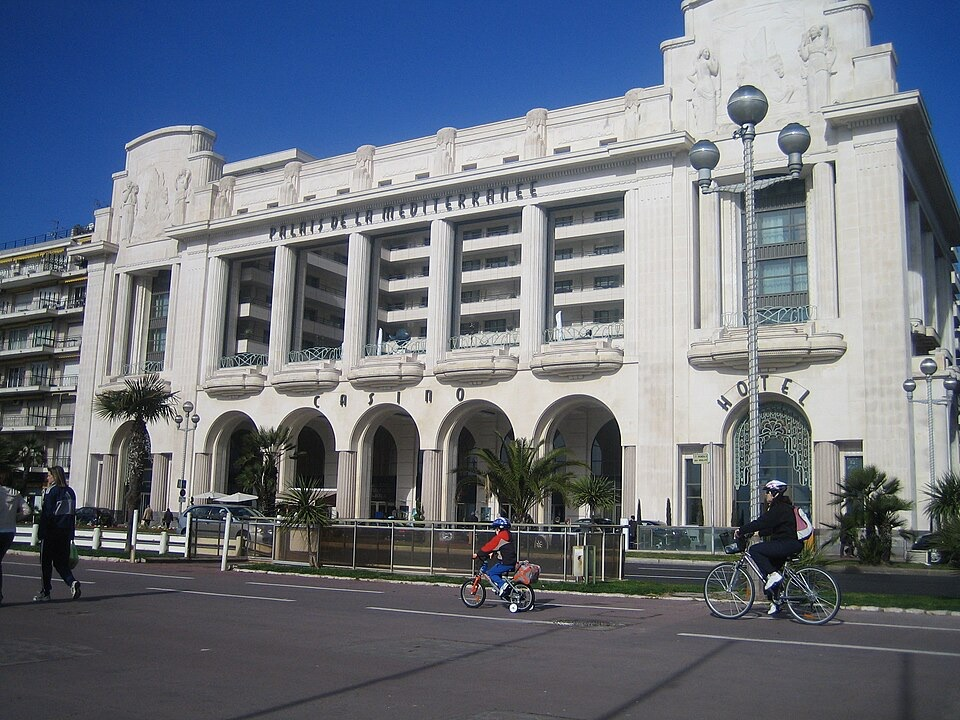 |
英国人漫步大道（Promenade des Anglais），面朝天使湾（Baie des Anges），近马塞纳广场（Place Masséna）从机场可乘轻轨 2 号线进城后步行；去摩纳哥（Monaco） / 戛纳（Cannes）一日游从尼斯火车站（Nice-Ville）坐火车 | 标准房促销价约 €560 起/晚；套房高峰约 €2,306/晚（HfP 2026-08）；旺季标准房常规价未核实 World of Hyatt（已由 Hyatt Regency 改挂 The Unbound Collection，2026-06-02 翻新重开）；新类别未核实（翻新前资料有第 5 类和第 7 类两种说法，新价目表第 5 类 = 15k–35k，第 7 类 = 25k–55k/晚）；HfP 实例：Prestige 海景套房 55,000 积分/晚。Amex Travel 曾以原名列入 FHR（现状未核实）。 |
尼斯市中心唯一可用 Hyatt 积分的海滨豪华酒店；1929 年装饰艺术风格的受保护立面，2026 年全面翻新（173 间房含 28 间套房），室外泳池露台正对天使湾（Baie des Anges），有屋顶露台、室内恒温泳池和水疗；步行到老城（Vieux Nice）、萨莱雅市集（Cours Saleya）、马塞纳广场（Place Masséna）。 | 刚重开，价格和积分价尚在调整；室内泳池很小（HfP）；餐厅价格偏高（主菜 €28+）。 |
| 性价比 · 私人海滩 | Hôtel Beau Rivage 官网 |
- | 老城（Vieux Nice）西缘，距英国人漫步大道（Promenade des Anglais）和海滩约 50 米，萨莱雅花市（Cours Saleya）步行 5 分钟马塞纳广场（Place Masséna）的轻轨站步行可达（距离未核实） | 约 $200–$450+/晚（Hotels.com 2026 示例：标准房约 $185–$233，高级房型 $446+；旺季价格未核实） 无集团积分（联盟归属未核实） |
1860 年的地标建筑配现代简约装修；有尼斯少见的自有私人海滩 Plage du Beau Rivage（躺椅 + 餐厅）；老城和花市就在门口，吃喝最方便；5 家中价格最友好。 | 四星级（Five Star Alliance 归入 4 星）；老城周边夜间较热闹。 |
| 海景 · 城堡山脚下 | Hôtel La Pérouse Nice Baie des Anges 官网 |
- | 天使湾（Baie des Anges）东端、城堡山（Colline du Château）脚下，紧邻老城（Vieux Nice）轻轨 Garibaldi 站 / Port Lympia 站在步行范围（距离未核实）；机场轻轨 2 号线的终点 Port Lympia 站就在附近 | 约 $300–$900/晚（Momondo：标准房均价约 $706，区间 $313–$2,202，旺季高价房可超 $2,000） 无集团积分（联盟/Amex 归属未核实） |
依山面海，客房和屋顶露台俯瞰整个天使湾（Baie des Anges），是尼斯最经典的海景视角；步行 1 分钟到城堡山（Colline du Château）、约 5 分钟到老城；有季节性室外泳池和庭院餐厅 Le Patio。 | 部分点评称装修老旧、入口/电梯/走廊布局绕；离尼斯火车站（Nice-Ville）最远；旺季价格涨幅大。 |
| 位置最中心 | Anantara Plaza Nice Hotel 官网 |
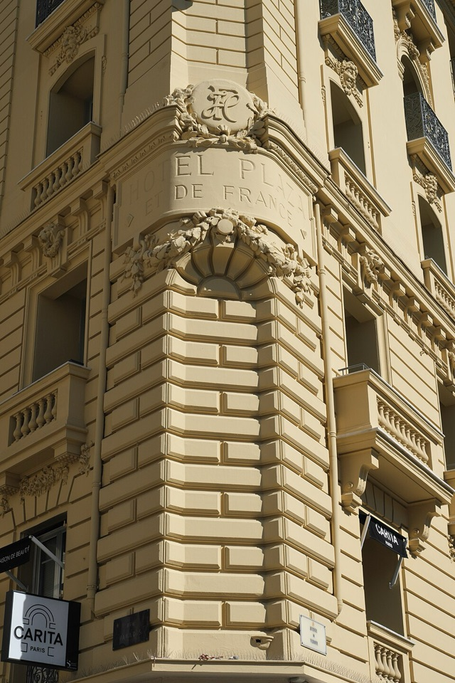 |
市中心，马塞纳广场（Place Masséna）和英国人漫步大道（Promenade des Anglais）旁轻轨 1 号线（Masséna / Jean Médecin 方向）和 2 号线（Jean Médecin 站）均在步行范围，站距未核实 | 约 $300–$900/晚（Kayak：豪华房 C$373 起；旺季明显更高，上限未核实） Anantara 品牌（酒店积分玩法未核实）；The Leading Hotels of the World（LHW）成员（Booking 标注） |
位置最居中：步行约 2 分钟到马塞纳广场（Place Masséna）和英国人漫步大道（Promenade des Anglais）；屋顶餐厅早餐可看海景（点评高分）；151 间重新设计的客房和水疗。 | 点评常抱怨价格高与额外收费；不在海边第一排、无海滩。 |
| 地标 · 最贵 | Le Negresco 官网 |
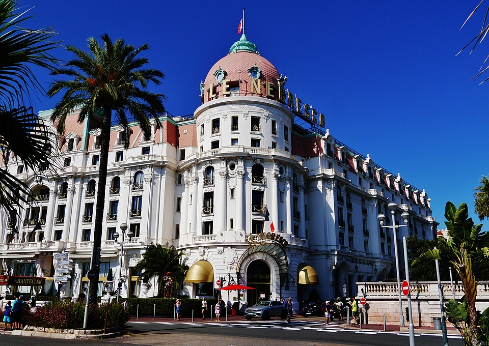 |
英国人漫步大道 37 号（Promenade des Anglais），海滨大道中西段门前就是漫步大道，沿海步行或乘轻轨 2 号线去老城（Vieux Nice）/ 尼斯港（Port Lympia） | 约 $600–$1,450/晚（Momondo 均价约 $1,440、起价约 $602；Kayak 示例约 $1,052 含税；HotelsCombined 约 $1,258） 无集团积分；The Leading Hotels of the World（LHW）成员 |
尼斯最具标志性的粉色穹顶宫殿酒店，满馆艺术收藏，正对海滩；客房为新近翻新。 | 价格最高档；距老城偏远；立面工程应已于 2026 年 4 月结束（未核实），入住前确认水疗 / 海滩开放情况。 |
10/12–10/15 戛纳（Cannes）有秋季电视节（MIPCOM），整条海岸的酒店价格偏高，尼斯的房间尽早订。Palais de la Méditerranée 原来是 Hyatt Regency，2026-06 翻新后改挂 The Unbound Collection by Hyatt，新的积分类别未核实，订前查 hyatt.com。
4. 每日精细化行程建议稿
口径：地点文字本身就是 Google Maps 链接；餐厅从第 5 节「必吃榜」里就近挑，以第 5 节的表为准。营业时间、预约和排队情况出发前再复核一次。
交通标签：步行地铁RERTGV / TER 火车轻轨巴士出租车飞机游船自驾行李
地点标签：必去可选路过扫一眼快进快出可认真逛时间黑洞预约/排队风险（放在“地点安排”列；备注列只写解释）
地图编号：表格里地点前的数字 = 当天地图上的编号，颜色区分类型。地图直接读表格里的地点，改了表格地图会跟着变；手机上地图用双指缩放。景点吃店公园 / 自然交通住
D1 · 10/9 周五：SFO 出发 ✈ 巴黎
下午坐已经订好的美联航 UA990 从 SFO 直飞巴黎，10/10 周六上午落地。离出发只剩三周，回程机票、酒店、TGV 和两顿生日晚餐（巴黎前夜 + 尼斯生日当天）要尽快订，时间点见第 7 节清单。
| 模块 | 地点安排 | 特色图片 | 备注 |
|---|---|---|---|
| 现在就订 | 回程机票 / 酒店 / TGV / 两顿生日晚餐 / 卢浮宫门票 越早越好 |
- | 去程已订（UA990）；回程机票还没订（第 2 节按 10/18 查的）；巴黎 3 晚、尼斯 5 晚酒店；10/13 巴黎 → 尼斯的 TGV；10/12 巴黎生日前夜晚餐（怎么选）和 10/13 尼斯生日晚餐（怎么选）；10/12 卢浮宫（Louvre）9:00 时段票（不能改期、不能退）；想登圣母院塔楼（Tours de Notre-Dame）就一起买 10/11 一早的塔楼票。 |
| 出发前 1–2 周 |
定时票 / 餐厅订位 需要提前订 |
- | 路易威登基金会（Fondation Louis Vuitton）要订 10/12 15:00 左右的定时票；塞纳河日落游船如果选 Vedettes du Pont Neuf，日落场次常卖完，也要订定时票；尼斯的 La Merenda、Bistrot d'Antoine 按第 5 节写的时间订。 |
| 出发前 1 天 |
手机 / 证件 / App | - | 检查护照有效期，开好 eSIM 或国际漫游；装好 Citymapper、Bonjour RATP、SNCF Connect，下载 Google Maps 离线地图。入境规则（EES）见第 7 节。10/7 起每天看一眼圣母院（Notre-Dame）官网 / App，抢 10/10 下午的免费进场时段（到了巴黎当天也能继续抢）。 |
| 航班 | 旧金山国际机场 SFO 飞机 |
- | 已订：美联航 UA990，10/9 SFO 14:40 → CDG 1 号航站楼 10/10 10:25，飞行约 10 小时 45 分，2 人经济舱里程票。上机就把手表调成巴黎时间：10/25 之前巴黎比加州快 9 小时。 |
D2 · 10/10 周六：抵达巴黎 / 玛黑区 Le Marais / 圣路易岛 Île Saint-Louis / 修复后的圣母院 Notre-Dame
上午落地，下午只走一条步行线：玛黑区（Le Marais）→ 圣路易岛（Île Saint-Louis）→ 圣母院（Notre-Dame）→ 新桥看日落。周六玛黑区的店都开，但犹太街区的 L'As du Fallafel 周六安息日不营业，午餐改去红孩儿市场（Marché des Enfants Rouges）。圣母院 2024 年底修复重开，是上次来巴黎没见过的新样子；大教堂免费，不用买票。
在 Google Maps 打开当天步行路线
| 模块 | 地点安排 | 特色图片 | 备注 |
|---|---|---|---|
| 上午 | 巴黎戴高乐机场 CDG 出租车RER行李 |
- | UA990 10:25 落地，入境加取行李预留 1–1.5 小时（第一次入境要做 EES 指纹和拍照）。两个人带着行李直接打车最省事：出租车一口价按车算，右岸（Rive Droite）€56、左岸（Rive Gauche）€65；轻装可以坐 RER B 线到 Châtelet–Les Halles 站，机场票 €14/人。RoissyBus 机场大巴 2026-03 起已停运。 |
| 酒店寄存行李（住宿见第 3 节） 行李 |
- | 一般 15:00 以后才能入住，先寄存行李、简单洗漱就出门，白天别补觉。 | |
| 午餐 | 红孩儿市场 Marché des Enfants Rouges：Chez Alain Miam Miam（现做夹馅三明治）备选：Breizh Café（荞麦咸可丽饼，官网可订）快进快出周六人多步行 |  |
巴黎最老的有顶市场，里面都是熟食摊，周二至周日开、周一休。Chez Alain Miam Miam 周一、周二休，周六照常，现做的夹馅三明治要排队。原来想去的 L'As du Fallafel 和 Miznon 周六安息日不营业，这趟只有 10/11 周日能吃，但那天不在玛黑区。不想排队就去 Breizh Café，官网可订、每天营业。 |
| 下午 玛黑区 Le Marais |
Dover Street Market ParisFleux'（家居设计） / L'Éclaireur Sévigné / Merci可选可认真逛步行 | - | 2024 年才开的 DSM 巴黎店，还有 Fleux'、L'Éclaireur、Merci，周六都正常营业（具体时间出发前看官网）。周六下午玛黑区人最多，挑 2–3 家就好，别在落地日把体力用完。 |
| 叙利府邸花园 Hôtel de Sully（可穿行到孚日广场）孚日广场 Place des Vosges必去步行 |  |
叙利府邸（Hôtel de Sully）位于圣安托万街（rue Saint-Antoine）62 号，庭院和花园每天 9:00–19:00 开，从花园尽头的小门可以直接走进孚日广场（Place des Vosges）。 | |
| 巴黎毕加索博物馆 Musée Picasso Paris或：卡纳瓦雷博物馆 Musée Carnavalet（2021 年翻修重开，常设展免费） / 或：皮诺收藏馆 Bourse de Commerce（从 D3 挪过来）可选可认真逛 |  |
体力够再三选一：毕加索博物馆周六 9:30–18:00、€16；卡纳瓦雷翻修后重开、常设展免费，这两家周一都闭馆，巴黎这三天只有今天和明天能去。皮诺收藏馆（Bourse de Commerce）是安藤忠雄改造的圆形交易所，周六 11:00–19:00、€15（建议网上买票），10/7 起是纪念摄影诞生 200 周年的大展（约 700 件作品）；它在玛黑区（Le Marais）西边，从蔷薇街（rue des Rosiers）走过去约 15 分钟，看完再往南走回圣路易岛（Île Saint-Louis）。 | |
| 傍晚 圣路易岛 Île Saint-Louis |
圣路易岛 Île Saint-LouisBerthillon 冰淇淋路过扫一眼步行 |  |
Berthillon 周三至周日 10:00–20:00，周一、周二固定休息，这趟只有今天和明天能吃。 |
| 巴黎圣母院 Notre-Dame de Paris 必去可认真逛免费时段临近才放 |
 |
2024 年 12 月修复后重开，大教堂免费、不用买票，石材清洗后内部很亮，和以前的印象完全不同。周末 8:15–19:30 开（19:00 停止入场）。官网 / App 可以免费预约进场时段，但名额在参观前几小时到 2–3 天才陆续放出（各来源说法不一），现在订不了：10/7 起每天看一眼，抢 10/10 16:30–17:30 的时段；抢不到就排现场队，队伍看着长但走得快，周末下午人最多。登塔（€16）只能提前在网上买，10 月 9:00–17:30（16:30 停止入场），落地日赶不上，想登就放 D3 周日一早。 | |
| Shakespeare and Company 快进快出步行 |
 |
就在圣母院（Notre-Dame）对岸，进去逛 20–30 分钟。官网营业时间没核实到，出发前再看一眼。 | |
| 日落 | 新桥 Pont Neuf绿林好汉广场 Square du Vert-Galant（西岱岛 Île de la Cité 最西端）必去步行 |  |
从新桥（Pont Neuf）走下台阶到西岱岛（Île de la Cité）最西端的绿林好汉广场（Square du Vert-Galant），坐在河边看日落（10/10 日落约 19:11）。 |
| 晚餐 | Chez Janou（普罗旺斯风味小馆）备选：Café des Musées（红酒炖牛肉，官网可订）电话订位地铁 | - | Chez Janou 每天营业，只接受电话订位（01 42 72 28 41），招牌是一大碗端上桌、自己舀的巧克力慕斯。不想打电话就去 Café des Musées（官网可订，每天营业）。落地日早点吃、早点睡。 |
📍 顺路候选（有空再加）：
- 【吃·玛黑（Le Marais）】可选快进快出Yann Couvreur — 蔷薇街（rue des Rosiers）的甜点和可颂；Jacques Genin — 手工焦糖和果软糖，周一休
D3 · 10/11 周日：（可选）圣母院塔楼 / 罗丹美术馆 Musée Rodin / 圣日耳曼 Saint-Germain / 塞纳河日落游船
节奏放慢的一天：上午去罗丹美术馆（Musée Rodin，周一闭馆，所以放今天）的花园，下午在圣日耳曼（Saint-Germain）逛街、挑生日礼物，日落坐塞纳河游船。今天上午有 20 km de Paris 路跑：耶拿桥（Pont d'Iéna）起跑、铁塔（Tour Eiffel）下终点，途经特罗卡德罗（Trocadéro）、凯旋门（Arc de Triomphe）、布洛涅森林（Bois de Boulogne），上午往西边走尽量坐地铁、别打车。想登圣母院塔楼（Tours de Notre-Dame）就放今天一早。
| 模块 | 地点安排 | 特色图片 | 备注 |
|---|---|---|---|
| 一早 （可选） |
圣母院塔楼 Tours de Notre-Dame 可选必须提前网上买RER |
- | 约 1 小时。订 9:00–9:30 的时段（周日上午城西有路跑，塔楼在城中心不受影响），€16，只能提前在官网 tours-notre-dame-de-paris.fr 买，现场不卖。424 级台阶、没有电梯，最窄处 45 cm，塔顶限停 5 分钟；天气太差会临时关闭（自动退款）。登完从 Saint-Michel Notre-Dame 站坐 RER C 到 Invalides 站，再走 10 分钟到罗丹美术馆（Musée Rodin）；或者打车，约 15 分钟。 |
| 上午 | 罗丹美术馆 Musée Rodin 必去可认真逛 |
 |
周日 10:00–18:30（最后入场 17:45，周一闭馆，所以放今天），€14，花园含在门票里，不用预约。花园里有《思想者》，馆内有《吻》，秋天的花园很适合拍照。想加奥赛博物馆（Musée d'Orsay，周日开）的话，罗丹 + 奥赛联票 €25。上午城西有路跑封路，坐地铁 13 号线到 Varenne 站最稳。 |
| 午餐 | Coutume（精品咖啡 + 早午餐）备选：La Grande Épicerie 熟食柜台快进快出步行 | - | 从罗丹美术馆（Musée Rodin）走 15 分钟到乐蓬马歇（Le Bon Marché）旁边。周日营业时间出发前再确认；坐不下就去隔壁 La Grande Épicerie 买熟食。原来的备选 L'Ami Jean 周日、周一休，这趟排不上。 |
| 下午 挑礼物 |
乐蓬马歇 Le Bon Marché + La Grande Épicerie 可认真逛时间黑洞步行 |
 |
巴黎最有设计感的百货，周日 11:00–20:00 也开，适合慢慢挑生日礼物；隔壁的 La Grande Épicerie 可以买香槟和小点心带回酒店。 |
| Officine Universelle Buly（可以免费写名字）Pierre Hermé：买单个 Ispahan / 马卡龙 / Diptyque 创始店必去快进快出步行 |  |
Buly（波拿巴街 6 号 / rue Bonaparte，每天 11:00–19:00）：很多香水、蜡烛、身体油的标签可以免费用法式书法手写名字，润唇膏压首字母、梳子和香皂刻字也免费，烫金礼品包装 €10，很适合当生日礼物（生日在后天）；当场要等多久没查到，建议先去下单再逛别的店。同一条街的 Pierre Hermé（72 号，10:00–20:00）可以现买单个 Ispahan（玫瑰荔枝覆盆子）和马卡龙，回酒店先小庆祝一下。生日在 10/13 的尼斯，整只蛋糕不好带上火车，生日当天请尼斯的餐厅准备插蜡烛的甜点。 | |
| 傍晚 | 回酒店休息 休息 |
- | 逛完先回酒店歇一下，放下买的东西再去坐游船。 |
| 日落 | 塞纳河游船 Bateaux-Mouches（阿尔玛桥 Pont de l'Alma 码头）或：Vedettes du Pont Neuf（新桥码头）必去游船 |  |
10/11 日落约 19:09，坐 18:30 或 19:00 的船，一圈约 1 小时。Bateaux-Mouches 成人 €20（官网 €17），当天任意班次都能用，不用抢时段；码头在阿尔玛桥（Pont de l'Alma），下船坐地铁 9 号线（Alma-Marceau 站）直达晚餐的 Bouillon Julien。想从西岱岛（Île de la Cité）上船就选 Vedettes du Pont Neuf：定时电子票 €15，日落和周末班次常卖完（今天是周日），要提前订；另有香槟游船（线上 €29，约 1 小时 15 分钟，开船时间未核实）。 |
| 晚餐 | Bouillon Julien（新艺术风格老牌平价食堂）备选：Clown Bar（热门新派小酒馆，电话订）官网订位地铁 |  |
1900 年代新艺术风格装潢的老餐厅，价格却是平价食堂级别（三道菜约 €18–27）；每天营业，周日晚上也开，官网可订，也欢迎直接来。从阿尔玛桥（Pont de l'Alma）坐地铁 9 号线到 Strasbourg–Saint-Denis 站，不用换乘。明天晚上是生日前夜大餐，今晚吃得轻松一点。 |
📍 顺路候选（有空再加）：
- 【上次没去的话】可选可认真逛奥赛博物馆 Musée d'Orsay — 周日开（周一闭），€16，建议订时段；10/6 起有玛丽·卡萨特的特展，另有自由女神像作者巴托尔迪的展览。和罗丹美术馆（Musée Rodin）联票 €25；圣礼拜堂 Sainte-Chapelle — 周日开，必须订时段票，非欧盟 €22；大皇宫 Grand Palais — 2025 年修复重开，周日开（周一闭），看展要订票
- 【吃·左岸（Rive Gauche）】可选快进快出Poilâne — 酸种面包老店，周日休（今天去不了）；Fromagerie Laurent Dubois — 买几块奶酪回酒店配香槟，周一休
D4 · 10/12 周一：卢浮宫 Louvre / 皇家宫殿 Palais-Royal / 路易威登基金会 Fondation Louis Vuitton / 🎂 生日前夜晚餐
卢浮宫（Louvre）只能排今天：周二闭馆，明天一早就去尼斯。上午订 9:00 开馆第一场，从酒店走过去 2 分钟；看完穿过皇家宫殿花园（Jardin du Palais-Royal）去吃午饭。下午去盖里设计的路易威登基金会（Fondation Louis Vuitton，10/9 刚重开）。晚上是巴黎的生日前夜大餐，看着铁塔（Tour Eiffel）吃饭、看整点闪灯；生日当天（10/13）在尼斯过。今天罗丹、奥赛、毕加索博物馆都闭馆，巴黎车展也从今天开幕。
| 模块 | 地点安排 | 特色图片 | 备注 |
|---|---|---|---|
| 上午 | 卢浮宫 Musée du Louvre 必去可认真逛提前订 9:00 时段票步行 |
 · CC BY-SA 3.0 · Wikimedia Commons") |
8:45 到玻璃金字塔（Pyramide）入口，走预约时段票的队伍；金字塔人太多时，持票也可以从卡鲁塞尔（Carrousel，里沃利街 99 号 / 99 rue de Rivoli 的地下商场）入口进。周一 9:00–18:00（17:00 停止入场），非欧盟游客 €32，要提前在官网 ticket.louvre.fr 订时段票：票不能改期、不能退；周一奥赛（Musée d'Orsay）等馆闭馆，卢浮宫人特别多。留 3–3.5 小时：先去德农馆（Denon）看《蒙娜丽莎》，赶在人多之前，再看《萨莫色雷斯的胜利女神》和法国、意大利大画；黎塞留馆（Richelieu）的拿破仑三世套房很华丽。阿波罗长廊（Galerie d'Apollon）2026/7/22 重开，但王冠珠宝不再展出；10/7 起有苏巴朗（Zurbarán）大展（是否含在门票里，订票时看一下）。2025 年底到 2026 年初卢浮宫因员工罢工闭馆过几次，前一天看一下官网通知。明天一早就去尼斯，卢浮宫只能排今天。 |
| 中午前 | 皇家宫殿花园 Jardin du Palais-Royal / 布伦柱 Colonnes de Buren薇薇安拱廊 Galerie Vivienne / Café Kitsuné Palais-Royal（歇脚喝咖啡）路过扫一眼步行 |  |
从卢浮宫（Louvre）北边出来，过里沃利街（rue de Rivoli）就是皇家宫殿（Palais-Royal）：穿过花园、拍黑白条纹的布伦柱（Colonnes de Buren），再从北门走到薇薇安拱廊（Galerie Vivienne，每天 8:30–20:00，保存最好的 19 世纪拱廊街），20–30 分钟就够。想喝杯咖啡就在花园拱廊里的 Café Kitsuné 歇一下（每天 8:30 开）。 |
| 午餐 | Higuma（日式拉面 / 炒饭）想吃法餐：Le Grand Colbert（午市套餐 €30 起）快进快出步行 |  |
卢浮宫（Louvre）北边的圣安娜街（rue Sainte-Anne）是巴黎的日本街，从薇薇安拱廊（Galerie Vivienne）走过去 5 分钟。逛了一上午博物馆、时差还没完全倒过来，吃碗热汤面最舒服；不接受预订、翻台快。 |
| 下午 | 路易威登基金会 Fondation Louis Vuitton 必去可认真逛订定时票 |
 |
盖里设计的「玻璃帆船」，10/9 重开，开幕展是收藏家兼创作者 Gustave Fayet 的主题展（到 2027/3/8），有梵高、高更、雷东、德加、塞尚、马蒂斯的作品。全价 €18，要在官网订定时票，今天订 14:30–15:00 的时段（票面时间 30 分钟内入场）；馆内不能带水，背包和雨伞要寄存。10 月周一的开放时间各来源不一（12:00–19:00 或 11:00–20:00），买票时以能选的时段为准；展厅加屋顶露台留 2–2.5 小时。 |
| 官方电动接驳车 → 凯旋门 Arc de Triomphe 巴士 |
- | 去程从 Palais Royal–Musée du Louvre 站坐地铁 1 号线直达 Les Sablons 站（约 15 分钟），走约 950 米；或者从 Charles de Gaulle–Étoile 站 2 号出口出来，在弗里德兰大街（avenue de Friedland）44 号坐官方接驳车，约 20 分钟一班，凭展览门票往返 €2。回程坐接驳车，下车就是凯旋门（Arc de Triomphe）；不去凯旋门就直接坐地铁 1 号线回酒店换衣服。 | |
| 日落 （可选） |
凯旋门 Arc de Triomphe 可选步行 |
 |
10 月周一 10:00–22:30（闭馆前 45 分钟停止入场），€16，不用预约；电梯在维修，要走约 284 级台阶上顶。10/12 日落 19:07，屋顶上看香榭丽舍大道（Champs-Élysées）和铁塔（Tour Eiffel）。看完打车约 10 分钟到晚餐的 Les Ombres，晚餐就订 19:45；想从容一点就跳过凯旋门，回酒店休息换衣服。 |
| 🎂 生日 前夜晚餐 |
Les Ombres（凯布朗利博物馆 Musée du quai Branly 屋顶，看铁塔 Tour Eiffel）奢侈版：Le Jules Verne / Madame Brasserie现在就订步行 | - | 玻璃屋顶正对铁塔（Tour Eiffel），每天晚餐 19:00–22:00，三道 €98 / 四道 €118，不用博物馆门票；OpenTable 订，订位时写上生日。生日当天（10/13）在尼斯，今晚是巴黎的生日前夜大餐。几家晚餐的价格、时间、蛋糕和着装要求放在下面的「生日前夜晚餐怎么选」对比表里。 |
| 夜景 | 比尔-哈克姆桥 Pont de Bir-Hakeim / 特罗卡德罗 Trocadéro（看铁塔闪灯）埃菲尔铁塔 Tour Eiffel必去步行 |  |
天黑后铁塔（Tour Eiffel）每个整点闪灯 5 分钟，10/12 第一场约 20:00（天完全黑约 19:40）。吃完饭走 15 分钟到比尔-哈克姆桥（Pont de Bir-Hakeim）或特罗卡德罗（Trocadéro），赶 21:00 或 22:00 那场拍一张生日前夜合照，明天一早还要赶火车，别太晚。 |
📍 顺路候选（有空再加）：
- 【上次没去的话】可选可认真逛橘园美术馆 Musée de l'Orangerie — 莫奈《睡莲》，周一开、周二闭，必须预约；加尼叶歌剧院 Palais Garnier — 只能网上预约自助参观，非欧盟 €25
- 【店·皇家宫殿（Palais-Royal）周边】可选快进快出E. Dehillerin — 百年厨具老店，周一 9:00–12:30、14:00–18:00；Astier de Villatte — 白釉陶器和香氛；Galignani — 里沃利街（rue de Rivoli）的老牌书店；Stohrer — 蒙托格伊街（rue Montorgueil）上的老甜点店，朗姆酒巴巴 €6.10
🎂 10/12 生日前夜晚餐怎么选（巴黎）
默认推荐 Les Ombres：看铁塔（Tour Eiffel）、价格适中、订位最容易。想要仪式感就选 Le Jules Verne 或 Madame Brasserie（都在铁塔里）；想把游船和晚餐合在一起就选 Ducasse sur Seine。生日当天（10/13）在尼斯，尼斯的生日晚餐见 D5 后面的对比表。原来的浪漫备选 Relais Louis XIII 周一不营业（周二至周六），这次排不上。
| 选项 | 在哪 / 看点 | 价格（不含酒） | 10/12 周一的时间 | 怎么订 | 生日 / 着装 / 取消 |
|---|---|---|---|---|---|
| Les Ombres 建议 · 看铁塔 |
凯布朗利博物馆（Musée du quai Branly）5 楼屋顶，玻璃屋顶正对铁塔（Tour Eiffel）；不用博物馆门票 | 三道 €98 / 四道 €118（夏季菜单，10 月可能换）；龙虾、牛里脊 +€12 | 每天 19:00–22:00 | OpenTable 或电话 +33 1 47 53 68 00 | 订位时在特别要求里写生日；能否订蛋糕官网没写（第三方说可以点巧克力或热带水果蛋糕）；着装要求整洁休闲装（未核实） |
| Le Jules Verne 奢侈 · 二星 |
铁塔（Tour Eiffel）2 楼，Frédéric Anton 主理，专用电梯上楼 | 只有品鉴菜单：5 道 €305 / 7 道 €345 | 晚餐 19:00–21:00 | 官网订位；提前 90 天放位，日落时段很快满 | 生日蛋糕（甜点插蜡烛）至少提前 72 小时说；男士必须穿西装外套，不能穿短裤运动服；订位预付，48 小时内取消不退 |
| Madame Brasserie 铁塔 1 楼 |
铁塔（Tour Eiffel）1 楼，离地 57 米，Thierry Marx 主理；凭订位从 1 号入口进 | 按座位区：Gustave 区 €109.80（含酒 €129.80）→ 落地窗区 €261.80 | 两轮入座：18:30（赶上日落）/ 21:00 | 官网订位 或电话 | 可加订 célébration 庆祝套餐（一杯香槟 + 打印合照），至少提前 48 小时；不能自带蛋糕和酒；得体城市装，不穿运动服、人字拖 |
| Ducasse sur Seine 游船晚餐 |
特罗卡德罗（Trocadéro）下方的德比利码头（Port Debilly）上船，Ducasse 的电动餐船，边吃边游塞纳河、看铁塔（Tour Eiffel） | 4 道 €175（含配酒 €285）/ 5 道 €215（含配酒 €325） | 星夜晚场（Nuit étoilée）20:30 开船，约 2 小时 | 官网订位，要预付 | 10/12 是否开航要在订位页选日期确认；可以同时替代「日落游船 + 晚餐」；72 小时内取消全额收费；男士不穿短裤、露趾鞋 |
| Septime 美食派 |
11 区的热门新派小酒馆，氛围轻松，不是看景型 | 只有主厨品鉴套餐：晚餐 7 道 €135 | 周一至周五晚餐 19:30 起（周末休） | 9/21 10:00 巴黎时间（湾区 9/21 凌晨 1:00）放 10/12 的位，官网 Zenchef | 订位时备注生日 |
巴黎备选：上次没去的 / 第二次来 / 下雨天
| 场景 | 换成什么 | 注意 |
|---|---|---|
| 上次没去的经典 | 奥赛博物馆 Musée d'Orsay / 圣礼拜堂 Sainte-Chapelle / 凡尔赛宫 Château de Versailles | 卢浮宫（Louvre）已经排进 D4 上午。奥赛周一闭，可以放 D3 下午（周日开），10/6 起有玛丽·卡萨特特展，和罗丹美术馆（Musée Rodin）联票 €25；圣礼拜堂（Sainte-Chapelle）每天开、必须订时段；凡尔赛宫（Château de Versailles）周一闭、要一整天，这趟只有换掉 D3（周日，人多）才排得下。 |
| 想去蒙马特 Montmartre | 圣心堂 Sacré-Cœur / 小丘广场 Place du Tertre / 爱墙 Le Mur des je t'aime | 可以把 D2 傍晚换成蒙马特（Montmartre），在圣心堂（Sacré-Cœur）台阶看日落。10/7–10/11 是蒙马特葡萄酒节（Fête des Vendanges），10/10 周六、10/11 周日人很多但很热闹；La Maison Rose 周一、周二不营业。 |
| 第二次来巴黎 | 圣马丁运河 Canal Saint-Martin / 雅克马尔-安德烈博物馆 Musée Jacquemart-André / 柯布西耶拉罗什别墅 Maison La Roche | 圣马丁运河（Canal Saint-Martin）适合想换掉 D3 下午时散步（Du Pain et des Idées 工作日才开，周末去不了）；雅克马尔-安德烈每天开；拉罗什别墅（Maison La Roche）周二至周六开、必须线上预约。 |
| 莫奈花园 Giverny | 吉维尼莫奈花园 Giverny | 2026 年开放季到 11/1 为止，每天 10:00–18:00，€13；从圣拉扎尔站（Gare Saint-Lazare）坐火车到韦尔农-吉维尼站（Vernon-Giverny），再转接驳车，要大半天，只能替换 D3（周日）。 |
| 下雨天 | 大皇宫 Grand Palais / 小皇宫 Petit Palais / 光之工作室 Atelier des Lumières | 大皇宫（Grand Palais）、小皇宫（Petit Palais）周一闭；光之工作室（Atelier des Lumières）是沉浸式数字艺术展，线上买票便宜 €2。 |
| 这几天看不到 | 蓬皮杜中心 Centre Pompidou / 伊夫·圣罗兰博物馆 Musée Yves Saint Laurent / 卡地亚当代艺术基金会 Fondation Cartier | 蓬皮杜中心（Centre Pompidou）闭馆到 2030 年；圣罗兰博物馆翻修到 2027 年秋；卡地亚基金会（Fondation Cartier）新馆换展闭馆到 10/22，这趟正好错过。 |
南法一日游菜单：尼斯为基地，按天气和喜好再定
怎么用这份菜单
- 住宿固定在尼斯（Nice），从下面 A–I 挑喜欢的一日路线，再按最终天数组合。不需要全部去，也不默认把「可选景点」塞进当天。
- 真正能玩的时间：10/13 周二下午（到尼斯后，半天，也是生日）、10/14 周三到 10/17 周六四个整天、10/18 周日上午（回程还没订，看航班，半天）。住五晚不等于有五个完整游玩日。
- 下面的 D5–D10 是目前的默认草稿：D5 下午 ≈ A，D6 ≈ C，D7 ≈ B，D8 ≈ F 整天，D9 ≈ E（下午可以接 H）。哪天想换，直接从菜单里挑一张卡片替换；天气不好就换 H 或 A。
- 菜单由 Hermes 从小红书等参考帖整理（9/18）；每张卡片里「📅 这几天要注意」是按我们 10/13–10/18 的日期补充的。小红书链接要在 App 里或登录后打开（未登录时 8 个里有 7 个显示「安全限制」）；标「参考帖」的只核对过标题，DJQueen 四日游读过正文。

A｜尼斯本城 Nice
Old Town, Local Food & Seaside Sunset
半天–一天轻松重点讨论
当天重点：享受尼斯本身，不只是把它当住宿基地。老城（Vieux Nice）巷子、萨莱雅市集（Cours Saleya）、当地小吃，下午海边散步或喝咖啡，傍晚去城堡山（Colline du Château）或海边看景。
- 适合：抵达日、休息日、美食与城市散步。
- 取舍：不强制加入美术馆，艺术主题另看 H。
- 现在草稿：D5 10/13 下午（生日这天）。
📅 这几天要注意：萨莱雅花市周二至周日开（周一换成古董市），10/18 周日 6:30–13:30 也开，适合回程那天早上；城堡山公园 10 月开到 20:00，日落 10/13 约 18:51 → 10/17 18:44；鹰嘴豆煎饼老店 Chez Pipo 周一、周二休。
- 📍 Google Maps｜尼斯 Nice
- 📕 小红书参考帖｜尼斯一日：从机场进城到日落的完整路线 （只核对过标题）

B｜埃兹 + 摩纳哥 Èze & Monaco
Hilltop Village & Monaco Highlights
完整一天中等偏满重点讨论
当天重点：山顶古村与海滨都市的反差。上午逛埃兹村（Èze）和异域花园，下午去摩纳哥老城（Monaco-Ville），再按兴趣去蒙特卡洛（Monte-Carlo）。
- 适合：第一次来、喜欢标志性景观与俯瞰海景。
- 可选：走尼采小径（Chemin de Nietzsche）下山，天气或体力不合适就坐车。
- 取舍：这天不再加芒通（Menton）。
- 现在草稿：D7 10/15 周四。
📅 这几天要注意：摩纳哥亲王宫（Palais Princier）国事厅 10/15 是今年最后一天开放，想进宫就只能排 10/15 周四；只看老城和外观哪天都行（卫兵换岗每天 11:55）。蒙特卡洛赌场内部参观只在 10:00–13:00。上埃兹村的公交每天只有 6–8 班，前一天查好时刻。
- 📍 Google Maps｜埃兹村 Èze Village
- 📍 Google Maps｜摩纳哥 Monaco / Monte Carlo
- 📕 小红书｜DJQueen：南法尼斯周边休闲4日游，4张图秒看懂 （已读正文：包含埃兹 + 摩纳哥组合，作者也承认整体安排略赶）

C｜自由城 + 费拉角 Villefranche-sur-Mer & Saint-Jean-Cap-Ferrat
Colourful Harbour, Villa & Coastal Walk
一天轻松至中等重点讨论
当天重点：海湾、漂亮花园与一顿舒服的午餐。自由城老港闲逛和午餐，下午看罗斯柴尔德别墅花园（Villa Ephrussi de Rothschild），有余力再走一小段费拉角海岸。
- 适合：海景、花园、建筑、拍照。
- 取舍：凯里洛斯别墅（Villa Kérylos）作为替换项，不默认再加一个馆。
- 现在草稿：D6 10/14 周三。
📅 这几天要注意：从尼斯坐 TER 只要 6–7 分钟；罗斯柴尔德别墅到 11/1 前每天 10:00–18:00，€18，建议网上买票；老港海鲜 La Mère Germaine 周三至周日营业，露台位提前约一周订。
- 📍 Google Maps｜滨海自由城 Villefranche-sur-Mer
- 📍 Google Maps｜罗斯柴尔德别墅 Villa Ephrussi de Rothschild
- 暂无已核对的对应小红书帖子；这组来自现有行程，保留为重点候选。

D｜芒通 Menton
Colourful Old Town & Slow Seaside Day
半天–一天轻松
当天重点：把时间完整留给一个海边小镇。老城、教堂周边、港口和海边，穿插咖啡、午餐与小店，不强制进博物馆。
- 适合：彩色老城、拍照、慢逛；留整天更自在。
- 和 C 的区别：D 更集中在老城与街巷，C 更偏海湾、别墅和花园。时间短可以二选一。
📅 这几天要注意：从尼斯坐 TER 约 35 分钟，是沿海最东边的柠檬小镇；让·科克托博物馆（Musée Jean Cocteau）周二闭（10/13 以外都开）。
- 📍 Google Maps｜芒通 Menton
- 📕 小红书｜DJQueen 四日游：包含芒通一日 （已读正文）
- 📕 小红书参考帖｜埃兹➕芒通一日游攻略 （只核对过标题；是另一种组合思路，不建议把芒通追加到已有的埃兹 + 摩纳哥那天）

E｜昂蒂布 Antibes
Market, Old Town & Picasso
半天–一天轻松至中等
当天重点：有生活感的海边老城，配一点艺术。普罗旺斯市场（Marché Provençal）、老城、城墙和海边；喜欢艺术就加入毕加索博物馆（Musée Picasso）。
- 适合：市场、吃喝、老城、艺术。
- 取舍：认真看馆就少排跨城行程，不默认再接完整的 F。
- 现在草稿：D9 10/17 上午（下午回尼斯，可以接 H）。
📅 这几天要注意：从尼斯坐 TER 约 15–25 分钟；市场 9–5 月周二至周日 7:30–13:00；毕加索博物馆 10:00–12:00、14:00–18:00，中午闭馆、周一闭，€12，先看馆再逛市场。
- 📍 Google Maps｜昂蒂布 Antibes
- 📕 小红书｜DJQueen 四日游：包含昂蒂布 + 戛纳 （已读正文）
- 📕 小红书参考帖｜昂蒂布：南法最美5KM （只核对过标题；还没读到具体路线，不把 5KM 直接当成规划好的步道）

F｜圣保罗德旺斯 Saint-Paul-de-Vence ⭐
Medieval Art Village & Optional Fondation Maeght
半天–一天轻松朋友推荐重点讨论
当天重点：朋友推荐的山城本身。石头巷子、城墙、画廊和小店，留时间坐下来吃饭或喝咖啡。
- 适合：山城氛围、艺术小店、建筑与慢逛。
- 可选：玛格基金会（Fondation Maeght），喜欢现代艺术、雕塑和建筑再加入；不需要为了「去过圣保罗」就强制进美术馆。
- 注意：圣保罗德旺斯（Saint-Paul-de-Vence）和附近的旺斯（Vence）是两个地方。
- 现在草稿：D8 10/16 周五（整天）。
📅 这几天要注意：从尼斯没有直达车，先坐 TER 到卡涅（Cagnes-sur-Mer）再换 ZOU! 655 路，单程约 1 小时 10 分；平日约 30 分钟一班，周末约 40–50 分钟一班（2024-06 版时刻表，出发前复核）。10/17 周六是法国万圣节假期第一天，山城人多，想清静就放 10/15 或 10/16。玛格基金会每天 10:00–18:00，€18，不用预约。村口的 La Colombe d'Or 是挂满毕加索、马蒂斯作品的老餐厅，10 月底才关门，午餐 12:00–14:30，电话 +33 4 93 32 80 02 订位。
G｜戛纳 Cannes
Cinema & Shopping, or an Island Escape
半天–一天
两种玩法选一个重点，不是两份完整行程都做。
- G1｜城市版：电影节宫（Palais des Festivals）周边、海滨大道、Le Suquet 老城、购物与咖啡。适合喜欢电影、购物、海滨城市；半天至一天。
- G2｜海岛版：从戛纳坐船去圣玛格丽特岛（Île Sainte-Marguerite），以岛上散步和自然风景为主，市区只轻量逛。适合想要「坐船 + 岛上散步」；留完整一天。
📅 这几天要注意：从尼斯坐 TER 约 35 分钟。戛纳秋季电视节（MIPCOM）10/12–10/15，电影节宫一带人多，G1 最好放 10/16 之后。G2 的 Horizon 渡船从戛纳老港 Quai Laubeuf 出发，船程 15 分钟，全年每天开；淡季大约每小时一班，最后一班回程约 17:00，往返 €12.50 起；风浪大会停航，出发前查时刻表。
- 📍 Google Maps｜戛纳 Cannes
- 📍 Google Maps｜圣玛格丽特岛 Île Sainte-Marguerite
- 📕 小红书｜DJQueen 四日游：戛纳市区组合参考 （已读正文；G2 暂无已核对的小红书帖子）
- ⛴️ 戛纳旅游局｜圣玛格丽特岛渡船介绍
- ⛴️ Horizon 渡船｜官方时刻表

H｜尼斯艺术日 Nice Art Day
Chagall, Matisse & Cimiez
半天–一天轻松雨天备选
当天重点：室内艺术，减少跨城交通。夏加尔美术馆（Musée Marc Chagall）与马蒂斯美术馆（Musée Matisse）按兴趣选一座或两座，天气允许再逛西米耶（Cimiez）周边。
- 适合：艺术爱好者，也可以当雨天替换方案。
- 取舍：和 F 都偏艺术，不想连续逛馆就只选一组。
📅 这几天要注意：两家都在西米耶山上，周二闭馆（10/13 以外都开）；夏加尔美术馆 13:00–14:30 午休（到 10/31），€10–12；马蒂斯美术馆 €12，尼斯市立博物馆 4 日通票 €15。
- 📍 Google Maps｜夏加尔美术馆 Musée National Marc Chagall
- 📍 Google Maps｜马蒂斯美术馆 Musée Matisse
- 暂无已核对的对应小红书帖子。
I｜格拉斯 Grasse
Perfume, Old Town & a Hands-on Experience
一天
当天重点：换成嗅觉与手作体验，不继续堆海景。香水老城、国际香水博物馆（Musée International de la Parfumerie）；有兴趣可以提前预约调香体验。
- 适合：喜欢香水、想一起做体验的人。
- 取舍：兴趣不大就跳过，不必为「香水之都」的名气专程去。
📅 这几天要注意：从尼斯坐 TER 约 1 小时 10 分；火车站在山下，到老城要走约 15 分钟上坡，或者换公交。国际香水博物馆 9–6 月每天 10:00–18:00，€6。调香体验（Galimard、Molinard、Fragonard）大多要提前预约；Fragonard 的完整调香课不在老城里，离老城约 3 km。
- 📍 Google Maps｜格拉斯 Grasse
- 📍 Google Maps｜国际香水博物馆 International Perfume Museum
- 🌐 官方旅游局｜香水博物馆介绍
- 暂无已核对的小红书帖子。
怎么选？
先重点讨论 A、B、C、F：尼斯本城、埃兹 + 摩纳哥、海湾花园，以及朋友推荐的圣保罗德旺斯。再按兴趣加：
- 彩色老城与海边慢逛 → D 芒通
- 市场、美食与毕加索 → E 昂蒂布
- 电影、购物 → G1 戛纳城市版；坐船与海岛 → G2 圣玛格丽特岛
- 艺术 / 雨天替换 → H 尼斯艺术日
- 香水与调香体验 → I 格拉斯
这是菜单，不是任务清单。最后按真正可用的整天与半天来选；天气不好时换选项，也比每天硬赶原计划更舒服。
合并同类项：按铁路线排。尼斯周边的地方基本在两条铁路线上，同一条线上的放同一天、一路走过去不走回头路，一天就能去两个地方：
- 东线（往摩纳哥方向）：自由城（Villefranche-sur-Mer）7 分钟 → 博利厄（Beaulieu-sur-Mer）/ 费拉角 → 滨海埃兹（Èze-sur-Mer）→ 摩纳哥（Monaco）约 20 分钟 → 芒通（Menton）约 35 分钟；摩纳哥到芒通 11 分钟，博利厄到芒通 25 分钟。
- 西线（往戛纳方向）：昂蒂布（Antibes）15–25 分钟 → 戛纳（Cannes）约 35 分钟，格拉斯（Grasse）从戛纳再 24 分钟；从卡涅（Cagnes-sur-Mer）换 655 路公交上山就是圣保罗德旺斯（Saint-Paul-de-Vence）。
下面的 D5–D10 草稿去 7 个地方，但没有芒通、戛纳和格拉斯。按上面的思路合并，同样的天数能多去 1–3 个地方：
方案一（推荐）：东线两天 + 西线一天 + 一个机动日
| 日期 | 安排 | 合并了哪几项 |
|---|---|---|
| 10/13 周二下午 🎂 | 尼斯老城、城堡山（Colline du Château）日落、海边生日晚餐（和草稿一样） | A 尼斯本城 |
| 10/14 周三 | 上午自由城老港，海鲜午餐 → 罗斯柴尔德别墅花园（Villa Ephrussi de Rothschild）→ 从博利厄坐 TER 25 分钟到芒通，逛老城，在海边看日落（约 18:48），晚饭在芒通吃或回尼斯 | C 自由城 + 费拉角 + D 芒通 |
| 10/15 周四 | 埃兹村（Èze）→ 尼采小径下山 → 摩纳哥老城和亲王宫（Palais Princier，国事厅最后一天开放）；晚上回尼斯吃 La Merenda（和草稿一样） | B 埃兹 + 摩纳哥 |
| 10/16 周五 | 9:00 左右坐 TER 到昂蒂布，10:00 毕加索博物馆，再逛市场和城墙 → TER 10 分钟到卡涅换 655 路 → 13:15 在 La Colombe d'Or 吃午饭 → 圣保罗村子 + 玛格基金会（Fondation Maeght，开到 18:00） | E 昂蒂布 + F 圣保罗德旺斯 |
| 10/17 周六 | 机动日：天气好就去戛纳（逛城市，或坐船去圣玛格丽特岛 Île Sainte-Marguerite）；下雨就去尼斯的马蒂斯 / 夏加尔美术馆；累了就休息 | G 戛纳 或 H 尼斯艺术日 |
| 10/18 周日上午 | 萨莱雅（Cours Saleya）周日花市、海边早餐（看回程航班） | A 尼斯本城 |
- 能去：尼斯、自由城、费拉角、芒通、埃兹、摩纳哥、昂蒂布、圣保罗，天气好再加戛纳，一共 8–9 个地方。
- 代价：圣保罗从一整天缩成大半天（约 13:00–17:30），旺斯（Vence）的马蒂斯教堂去不了；周三会比较满。
方案二（最满）：每天都拼两个地方
10/13–10/16 和方案一一样，只把 10/17 周六的机动日换成：上午格拉斯（国际香水博物馆，调香课要提前约）→ TER 24 分钟到戛纳，逛海滨大道和 Le Suquet 老城，看完日落回尼斯（I 格拉斯 + G 戛纳城市版）。
- 能去：一共 10 个地方。
- 代价：没有休息日，也没有下雨的缓冲；周六是法国学校放假第一天，戛纳人多。
三个版本对比
| 现在的草稿（D5–D10） | 方案一（推荐） | 方案二（最满） | |
|---|---|---|---|
| 去几个地方 | 7 | 8–9 | 10 |
| 芒通 Menton | 没有 | 周三下午 | 周三下午 |
| 昂蒂布 Antibes | 周六上午（下午回尼斯） | 周五上午 | 周五上午 |
| 圣保罗德旺斯 | 周五整天 | 周五大半天 | 周五大半天 |
| 戛纳 / 格拉斯 | 没有 | 戛纳看天气 | 都有 |
| 休息 / 下雨缓冲 | 周六下午 | 周六整天 | 没有 |
为什么不把「埃兹 + 摩纳哥 + 芒通」放在同一天：DJQueen 那篇说埃兹加摩纳哥已经有点赶，再加芒通会更赶。芒通接在自由城那天后面更顺，那天本来就比较轻松。
要和 Min 一起定的几件事：
- 圣保罗想慢慢待一整天，还是大半天就够？（决定选现在的草稿，还是方案一 / 二）
- 要不要进摩纳哥亲王宫参观？要进的话，摩纳哥只能排 10/14 或 10/15。
- 对香水和调香课有没有兴趣？（决定要不要去格拉斯）
- 回程航班几点？这决定 10/18 上午能不能用。
另外保留：需要换基地的南法备选
下面这些先不混进 A–I：离尼斯太远，当天往返不划算，更适合多留几天、换住宿基地，或者改成另一套路线。
- 🌊 卡西与卡朗格海岸 Cassis & Calanques：重点是港口、海岸与自然风景。
📍 Google Maps｜Cassis · 📍 Google Maps｜Calanques National Park · 📕 小红书参考帖｜南法 cassis小镇详细攻略 - 🏘️ 耶尔 Hyères：另一种南法老城体验，不建议为了补一个小镇从尼斯长途折返。
📍 Google Maps｜Hyères · 📕 小红书参考帖｜地中海光线：南法老城耶尔 - 🌿 普罗旺斯山城 Provence Villages：戈尔德（Gordes）、鲁西永（Roussillon）、泉水小镇（Fontaine-de-Vaucluse）等，适合独立的普罗旺斯路线；页面里已经有备选 B：普罗旺斯自驾，不必再塞进尼斯主方案。
📍 Google Maps｜戈尔德 Gordes · 📍 Google Maps｜鲁西永 Roussillon · 📍 Google Maps｜泉水小镇 Fontaine-de-Vaucluse · 📕 小红书参考帖｜南法小镇：红土城 + 石头城 + 泉水小镇一日游
D5 · 10/13 周二 🎂 生日：巴黎 → 尼斯 / 老城 Vieux Nice / 城堡山 Colline du Château 日落 / 海边生日晚餐
生日这天从巴黎去尼斯：坐 7:00 前后的 TGV 高铁，中午前后到；下午在老城（Vieux Nice）和萨莱雅花市（Cours Saleya）慢慢逛，傍晚上城堡山（Colline du Château）看天使湾（Baie des Anges）日落，晚上在海边吃生日晚餐（怎么选）。巴黎的生日前夜大餐在昨晚（D4）。
在 Google Maps 打开当天步行路线
| 模块 | 地点安排 | 特色图片 | 备注 |
|---|---|---|---|
| 早上 方案 1 |
TGV：巴黎里昂站 Gare de Lyon → 尼斯火车站 Nice-Ville TGV行李 |
 |
推荐想看风景的走法：7:00 前后的 TGV INOUI 高铁直达，最快 5 小时 37 分，约 13:00 到尼斯市中心，不用安检。提前买 2 等座早鸟票 €29 起，常见 €55–79，临时买约 €130。过了马赛（Marseille）之后沿海开，海在行进方向的右手边。 |
| 早上 方案 2 |
飞机：CDG / ORY → NCE 飞机轻轨 |
- | 法航 2026 年起巴黎–尼斯只从 CDG 飞；从奥利机场（ORY）出发的是 Transavia，易捷航空两个机场都有。飞行约 1.5 小时，门到门 3.5–4.5 小时，单程常见 €50–150（托运行李另算）。行李多、不想早起就选飞机。 |
| 中午 | 尼斯火车站 Nice-Ville或：尼斯机场 NCE轻轨行李 | - | TGV 到的尼斯火车站（Nice-Ville）就在市中心，打车或步行去酒店放行李。飞机落地从机场坐轻轨 2 号线进城约 30 分钟：机场站进出必须买 AERO 往返票 €10（只卖往返），市区单程票 €1.70；带行李打车到市中心是一口价 €32。 |
| 午餐 | Chez Thérésa（萨莱雅市集 Cours Saleya 里的鹰嘴豆煎饼摊）或：Lou Pilha Leva（老城小吃，全天营业）快进快出不订位步行 | - | 到尼斯第一口吃鹰嘴豆煎饼：现烤的薄饼，趁热撒黑胡椒，再来一块洋葱挞。原来想去的老店 Chez Pipo 周一、周二休，今天去不了，改在萨莱雅市集的 Chez Thérésa 摊位买（约 15:00 前收摊）；赶不上就去老城里全天营业的 Lou Pilha Leva。 |
| 下午 老城 Vieux Nice |
萨莱雅市集 Cours Saleya尼斯老城小巷 Vieux Nice必去可认真逛步行 |  |
花市周二到周日开（周三 6:30–18:30），周一换成古董市。老城巷子里慢慢逛：圣雷帕拉特大教堂（Cathédrale Sainte-Réparate）、拉斯卡里斯宫（Palais Lascaris，周二闭馆，今天进不去）。 |
| Fenocchio 冰淇淋Maison Auer 蜜饯老店快进快出步行 | - | 罗塞蒂广场（Place Rossetti）上的冰淇淋店，试试薰衣草、紫罗兰、番茄罗勒这类本地口味（二手资料说每年约 11/15 起冬歇，10 月还开）。Maison Auer 的蜜饯水果适合当伴手礼，周日休（周一是否营业有两种说法）。 | |
| 日落 | 城堡山 Colline du Château 必去步行 |
 |
从老城（Vieux Nice）东边坐免费电梯上去（也可以走台阶），在人工瀑布旁的观景台看天使湾（Baie des Anges）日落。公园 10 月开到 20:00；10/13 日落约 18:51，17:45 左右上去，生日这天在这里看天使湾（Baie des Anges）日落。 |
| 🎂 生日晚餐 | Le Plongeoir（建在海中礁石上的餐厅）星级：JAN（米其林一星） / Flaveur（米其林二星） / 热闹：La Petite Maison现在就订出租车 | - | 海边礁石上的餐厅，在港口东边的海岸上，从城堡山走下来约 20 分钟，也可以打车。周二 12:00–21:30 营业（今年开到 11/15），电话 +33 4 93 26 53 02 或官网订位，订位时写上生日，请他们准备插蜡烛的甜点；日落后天黑得快，晚餐订 19:15 左右。想吃星级就选 JAN 或 Flaveur，对比见下面的「尼斯生日晚餐怎么选」。 |
🎂 10/13 尼斯生日晚餐怎么选
默认推荐 Le Plongeoir：在海上吃生日晚餐，离城堡山近，生日这天刚从巴黎坐火车过来，不用再赶远路。想吃星级大餐就选 JAN（一星，小而精）或 Flaveur（二星）；想要热闹就选 La Petite Maison。页面里原来排的尼斯餐厅（Bistrot d'Antoine、La Merenda 等）都是家常小馆，适合平时吃；鹰嘴豆煎饼老店 Chez Pipo 周二不开。
| 选项 | 在哪 / 看点 | 价格（不含酒） | 10/13 周二的时间 | 怎么订 | 生日 / 注意 |
|---|---|---|---|---|---|
| Le Plongeoir 建议 · 看海 |
港口东边的海岸上，餐厅建在海中的礁石上（名字就是「跳水台」的意思），四面是海；从城堡山（Colline du Château）走过来约 20 分钟 | 人均未核实 | 周二 12:00–21:30（今年营业到 11/15） | 电话 +33 4 93 26 53 02 或 官网 | 订位时写上生日，问能否准备插蜡烛的甜点；日落约 18:51，天黑后海景就看不清了，晚餐订 19:15 左右 |
| JAN 星级 · 一星 |
港口附近拉斯卡里斯街（rue Lascaris）12 号，只有 24 个座位；南非主厨 Jan Hendrik van der Westhuizen，法国南部食材配南非做法 | 套餐约 €200（二手来源） | 周二至周六 19:00–22:00 | 官网订位 | 订位时备注生日；座位少，尽早订 |
| Flaveur 星级 · 二星 |
市中心古贝纳蒂斯街（rue Gubernatis）25 号，兄弟俩主理，地中海味道加各地香料 | 套餐 €180–315，配酒 €80–140 | 周二 19:30–22:00（中午也开） | 官网 或 TheFork | 必须预订；订位时备注生日 |
| La Petite Maison 热闹 · 名流 |
老城（Vieux Nice）边上，尼斯的名流餐厅，也是伦敦、迪拜 LPM 的原型；气氛热闹 | 约 €100 以上（二手来源） | 周二营业（有来源说周日休，订位时确认） | 电话 04 93 92 59 59，几乎必须预订 | 想要热闹、有派对感就选它 |
D6 · 10/14 周三：滨海自由城 Villefranche-sur-Mer / 罗斯柴尔德别墅花园 Villa Ephrussi de Rothschild / 费拉角 Saint-Jean-Cap-Ferrat
到尼斯后第一个整天，节奏放慢：TER 区域火车 7 分钟到滨海自由城（Villefranche-sur-Mer），上午在彩色老港，中午吃海鲜，下午去费拉角（Saint-Jean-Cap-Ferrat）的罗斯柴尔德别墅花园（Villa Ephrussi de Rothschild），晚上回尼斯喝自然酒。
| 模块 | 地点安排 | 特色图片 | 备注 |
|---|---|---|---|
| 上午 | 滨海自由城 Villefranche-sur-Mer TER必去步行 |
 |
从尼斯火车站（Nice-Ville）坐 TER 6–7 分钟，车站就在海湾边。逛老港的彩色房子，看科克托画的圣彼得礼拜堂（Chapelle Saint-Pierre，周二闭，门票约 €4，未核实）。 |
| 午餐 | La Mère Germaine（老港海鲜） 官网订位步行 |
- | 港口边的老牌海鲜餐厅，吃当天的鲜鱼。周三至周日营业，露台位建议提前约 1 周在 Zenchef 订。 |
| 下午 | 罗斯柴尔德别墅花园 Villa Ephrussi de Rothschild 必去可认真逛建议网上买票 |
|
粉色别墅加九个主题花园，两边都是海湾。到 11/1 为止每天 10:00–18:00；成人 €18，含中文语音导览。坐 Lignes d'Azur 15 路到 Passable – Rothschild 站再步行。 |
| 凯里洛斯别墅 Villa Kérylos 可选快进快出 |
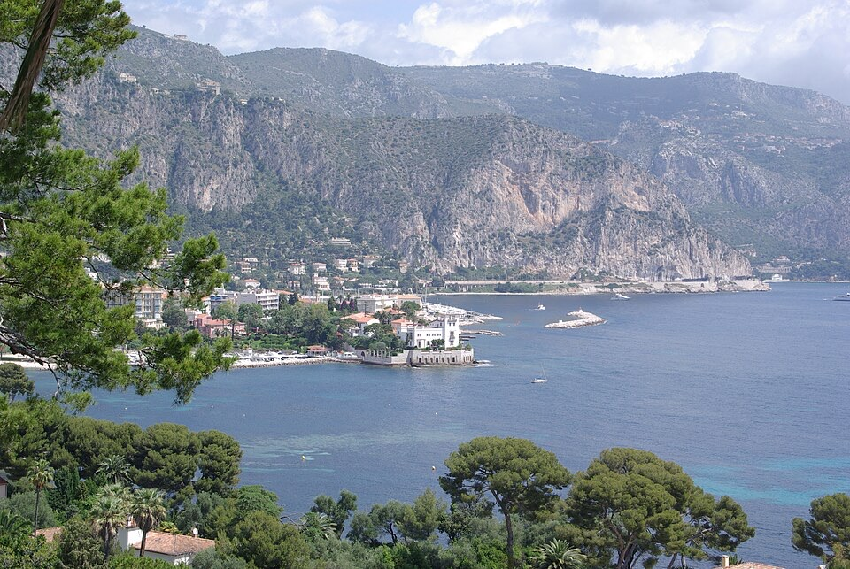 |
旁边博利厄（Beaulieu-sur-Mer）海边的古希腊风格别墅，和罗斯柴尔德别墅（Villa Ephrussi de Rothschild）有联票；开放时间出发前在官网查。时间够再去。 | |
| 傍晚 （可选） |
费拉角海岸步道 Sentier du Littoral / 帕洛玛海滩 Paloma Beach 可选时间黑洞步行 |
- | 10 月中旬海水约 20°C，天气好、不怕凉可以在帕洛玛海滩（Paloma Beach）泡一下；否则沿费拉角海岸步道（Sentier du Littoral）走一小段（10/14 日落 18:49）。回尼斯坐 15 路公交，或走到博利厄火车站（Beaulieu-sur-Mer）坐 TER。 |
| 晚餐 | Le Canon（自然酒小酒馆）备选：Chez Acchiardo（尼斯家庭菜，电话订）电话订位步行 | - | 黑板上的当日菜，本地食材配 100% 自然酒，约 €40–60；周六、周日休，周三正常营业，电话订位（04 93 79 09 24）。 |
D7 · 10/15 周四：埃兹鹰巢村 Èze / 尼采小径 Chemin de Nietzsche / 摩纳哥 Monaco（亲王宫 Palais Princier 开放最后一天）
蔚蓝海岸（Côte d'Azur）最经典的一天：上午在山顶的埃兹村（Èze），中午沿小径下山，下午在摩纳哥老城（Monaco-Ville）和蒙特卡洛（Monte-Carlo）。摩纳哥亲王宫（Palais Princier）国事厅今年开到 10/15，今天正好是最后一天。全程公交 + 火车，不用开车。
| 模块 | 地点安排 | 特色图片 | 备注 |
|---|---|---|---|
| 早上 | Nice Vauban 公交站 巴士 |
- | 坐 Lignes d'Azur 82 路（€1.70 市区票）或 ZOU! 602 路（约 €2.10）上埃兹村（Èze），车程 20–30 分钟。这几条线每天只有 6–8 班，前一天查好时刻表，挑 8:00–9:00 那班；上午车挤，提前 10–15 分钟到站排队。 |
| 上午 埃兹 Èze |
埃兹村 Èze埃兹异域花园 Jardin Exotique d'Èze（村子最高处）必去可认真逛步行 | |
中世纪鹰巢村，巷子很窄，赶在 10:30 旅游团到之前逛完。山顶的异域花园俯瞰整片海岸，成人约 €10（二手资料，官网没核实到）。 |
| 尼采小径 Chemin de Nietzsche 可选可认真逛步行 |
 |
从村子沿尼采小径（Chemin de Nietzsche）下山到海边的滨海埃兹火车站（Èze-sur-Mer），45–60 分钟（约 2 公里、落差约 400 米），一路下坡看海。穿运动鞋；雨后湿滑就改坐 602 路直接去摩纳哥（Monaco）。 | |
| 中午 | TER：滨海埃兹站 Èze-sur-Mer → 摩纳哥站 Monaco-Monte-Carlo TER |
- | 坐一站到摩纳哥。摩纳哥火车站在地下，出口很多，去老城（Monaco-Ville）和去蒙特卡洛赌场（Casino de Monte-Carlo）的出口不同，跟着指示牌走。也可以坐沿海的 ZOU! 600 路公交（€2.10），慢一些但海景好。 |
| 午餐 | La Montgolfière（摩纳哥老城 Monaco-Ville 小馆） 电话订位步行 |
- | 在老城（Monaco-Ville）里、离亲王宫（Palais Princier）很近，午餐是黑板菜单（主菜 €16–31）。周三、周日休，电话 +377 97 98 61 59；营业状况待复核，订不到就在老城随便吃点。 |
| 下午 摩纳哥 Monaco |
摩纳哥老城 Monaco-Ville亲王宫国事厅 Palais Princier必去可认真逛步行 |  |
老城建在海边悬崖上。亲王宫（Palais Princier）国事厅 2026 年开放期 3/30–10/15，今天是最后一天：10:00–18:00（最后入场 17:15），成人 €13；官网提示在线购票有技术故障，直接在亲王宫广场（Place du Palais）现场买。卫兵换岗每天 11:55，下午到的话看不到。 |
| 摩纳哥海洋博物馆 Musée océanographique 可选可认真逛 |
 |
建在悬崖上的海洋博物馆和水族馆，10 月 10:00–18:00，成人 €20.50（也有 €22.50 的说法，以购票页为准）。屋顶露台视野很好。 | |
| 傍晚 | 蒙特卡洛赌场 Casino de Monte-Carlo 路过扫一眼步行 |
 |
赌场内部参观只在 10:00–13:00（€20），下午来就看外观和 Café de Paris 前的广场。14:00 以后的游戏厅要带护照原件、穿着得体。 |
| 回程 | TER：摩纳哥站 Monaco-Monte-Carlo → 尼斯火车站 Nice-Ville TER |
- | 约 20 分钟回尼斯，班次很多。遇到罢工 TER 会大面积取消，出发前在 SNCF Connect 查一下；备选是 ZOU! 600 路公交。 |
| 晚餐 | La Merenda（尼斯传统菜） 难订 · 只收现金步行 |
- | 尼斯最有名的传统菜小馆，招牌是青酱意面和炸西葫芦花。官网写周一至周五营业、周末休；官网（SevenRooms）提前 1–2 周订。多家来源称只收现金或支票，记得带够。 |
D8 · 10/16 周五：圣保罗德旺斯 Saint-Paul-de-Vence ⭐ / 玛格基金会 Fondation Maeght / （可选）旺斯马蒂斯教堂
朋友推荐的山城留一整天：上午趁旅游团没到先逛村子，中午在 La Colombe d'Or 吃饭，下午看玛格基金会（Fondation Maeght）；还有余力就坐同一条公交再往上几分钟，去旺斯（Vence）看马蒂斯设计的玫瑰经教堂（Chapelle du Rosaire）。放在周五是因为工作日公交班次多、人也比周末少；明天起法国学校放万圣节假期。
| 模块 | 地点安排 | 特色图片 | 备注 |
|---|---|---|---|
| 早上 | TER：尼斯火车站 Nice-Ville → 卡涅 Cagnes-sur-Mer → ZOU! 655 路公交 TER巴士 |
- | 从尼斯火车站坐 TER 到卡涅（Cagnes-sur-Mer），在火车站门口换 ZOU! 655 路上山到圣保罗德旺斯（Saint-Paul-de-Vence），全程约 1 小时 10 分（原来从尼斯直达的 400 路已经停了）。今天是工作日，655 路约 30 分钟一班（周末约 40–50 分钟一班，2024-06 版时刻表，出发前在 ZOU! 官网或 App 复核）；坐 8:30 左右的火车，10 点前到村里。 |
| 上午 | 圣保罗德旺斯 Saint-Paul-de-Vence必去可认真逛步行 | |
城墙完整的中世纪山城，巷子里全是画廊。从北边村口进，沿主街 Rue Grande 一路走到南头的墓园，夏加尔（Chagall）就葬在这里；城墙上看得到远处的海。赶在 11:00 旅游大巴到之前把主街逛完。注意：圣保罗德旺斯和再往上的旺斯（Vence）是两个地方。 |
| 午餐 | La Colombe d'Or（挂满名家作品的老旅馆餐厅） 可认真吃电话订位步行 |
- | 村口的老旅馆餐厅，墙上和花园里有毕加索、马蒂斯、米罗等人留下的作品，是圣保罗最有代表性的一餐。午餐 12:00–14:30，电话 +33 4 93 32 80 02 或邮件 contact@la-colombe-dor.com 订位；每年 10 月底关门到圣诞，订位时确认 10/16 营业。价格不便宜（主菜约 €22–65，二手来源）。订不到就在村里随便找家露台咖啡馆。 |
| 下午 | 玛格基金会 Fondation Maeght 必去可认真逛步行 |
 |
从村子走约 10 分钟（有上坡），也可以坐 655 路一站到 Fondation Maeght 站。每天 10:00–18:00，€18，不用预约。建筑师塞尔特设计的建筑，配米罗的迷宫花园和贾科梅蒂雕塑庭院，Ellsworth Kelly 特展到 11/15。留 1.5–2 小时。 |
| （可选） | 旺斯玫瑰经教堂 Chapelle du Rosaire（马蒂斯设计） 可选巴士 |
- | 马蒂斯晚年自己最满意的作品，白墙配彩色玻璃窗。坐同一条 655 路从圣保罗往上约 7 分钟到旺斯（Vence），教堂在老城外，再走一段路。周五 10:00–11:30、14:00–17:30（3–10 月），€7，时间来自教堂自己的网站（页面较旧，出发前再确认）。时间紧就跳过。 |
| 回程 | ZOU! 655 路 → 卡涅 Cagnes-sur-Mer → TER 回尼斯 巴士TER |
- | 全程约 1 小时 10 分。平日 655 路回程到晚上 8 点前后还有车，出发前查好末班时间。 |
| 晚餐 | Olive & Artichaut（本地小农时令菜）备选：Bistrot d'Antoine（只接电话订位）官网订位步行 | - | 老城（Vieux Nice）里用本地小农食材的现代尼斯菜，周五营业（周日、周一休），官网（Guestonline）或电话订，提前 3–7 天。 |
D9 · 10/17 周六：昂蒂布 Antibes 周六市场 / 毕加索博物馆 Musée Picasso Antibes / 下午回尼斯自由安排
上午坐火车到昂蒂布（Antibes），10:00 先看毕加索博物馆（Musée Picasso，中午闭馆），再逛普罗旺斯市场（Marché Provençal）和老城，周六上午市场最热闹；下午回尼斯，按天气选美术馆或海边散步。10/17 起法国学校放万圣节假期，周末人会多一些，早点出门。
| 模块 | 地点安排 | 特色图片 | 备注 |
|---|---|---|---|
| 早上 | TER：尼斯火车站 Nice-Ville → 昂蒂布站 Antibes TER |
- | 约 14–25 分钟（看车次），票价约 €5–6，坐 9:00 左右的车。买票时认准 TER，TGV / Intercités 也停昂蒂布（Antibes）。 |
| 上午 | 昂蒂布毕加索博物馆 Musée Picasso Antibes 必去快进快出 |
 |
海边的格里马尔迪城堡（Château Grimaldi），毕加索 1946 年在这里画过一批作品。9/16 以后 10:00–12:00、14:00–18:00，中午闭馆，周一闭馆；全价 €12。10:00 一开门就进，看完正好去市场。 |
| 昂蒂布老城 Vieil Antibes + 普罗旺斯市场 Marché Provençal 必去可认真逛步行 |
|
马塞纳街（Cours Masséna）上有顶棚的老市场，9–5 月周二到周日 7:30–13:00，周六上午最热闹；在市场里吃鹰嘴豆煎饼当午餐，吃完坐 TER 回尼斯。同一个地方 10–5 月的周五到周日 15:00–19:00 还有花和手作市集。 | |
| 下午 （可选） |
马蒂斯美术馆 Musée Matisse或：夏加尔美术馆 Musée Marc Chagall可选巴士 |  |
下午按天气和体力选：西米耶（Cimiez）山上的马蒂斯美术馆（€12）或夏加尔美术馆（€10–12，13:00–14:30 午休），两家周二闭、今天都开；也可以不进馆，在英国人漫步大道（Promenade des Anglais）散步、买伴手礼，收拾行李。更多选择见南法一日游菜单。 |
| 晚餐 | Bistrot d'Antoine（市场料理小酒馆） 电话订位步行 |
- | 尼斯最后一晚。老城（Vieux Nice）里的人气小酒馆，按黑板上的时令菜点；只接受电话订位（+33 4 93 85 29 57），常客满，提前一周以上打；周二至周六营业。周六 La Merenda、Acchiardo、Le Canon 都不开。 |
D10 · 10/18 周日：尼斯 → 转机 → SFO（回程未订）
从尼斯飞回湾区。回程机票还没订，日期也还没最后定，下面按 10/18 周日写：一次转机，当天就能落地 SFO。10/18 是法国万圣节假期的第一个周末，机场人多，提早出门。
| 模块 | 地点安排 | 特色图片 | 备注 |
|---|---|---|---|
| 早上 （看航班） |
萨莱雅市集 Cours Saleya（周日花市） 可选快进快出步行 |
- | 周日花市 6:30–13:30。如果是中午以后的航班，早上去买点花和薰衣草小物，在海边吃早餐。 |
| 去机场 | 尼斯蔚蓝海岸机场 NCE 轻轨出租车行李 |
- | 轻轨 2 号线到机场约 30 分钟，首班约 5:24（二手资料）；早班机直接打车（一口价 €32）。在 CDG、法兰克福、慕尼黑、苏黎世或阿姆斯特丹转机都要从申根区转出境，转机预留至少 2 小时。 |
| 航班 | NCE → 欧洲枢纽 → SFO 飞机 |
- | 回程还没订；10/18 还在夏季时刻内，第 2 节列的一次转机都能当天落地 SFO。用美联航里程优先看瑞士航空经苏黎世（LX38，傍晚到）；用 Flying Blue 看法航经 CDG。 |
南法备选：下雨天 / 换一天 / 奢侈一餐
| 场景 | 换成什么 | 注意 |
|---|---|---|
| 下雨天 | 马蒂斯美术馆 Musée Matisse / 夏加尔美术馆 Musée Marc Chagall | 两家都在西米耶（Cimiez）山上、周二闭馆（10/13 以外都开）。马蒂斯美术馆（Musée Matisse）€12（尼斯市立博物馆 4 日通票 €15）；夏加尔美术馆（Musée Marc Chagall）€10–12，13:00–14:30 午休（到 10/31）。 |
| 芒通 Menton 一日（替换 D9） | 芒通 Menton | 沿海最东边的柠檬小镇，从尼斯坐 TER 过去；让·科克托博物馆（Musée Jean Cocteau）周二闭。 |
| 奢侈一餐 | Mirazur（芒通 Menton，米其林三星） | 约 €380–450/人起。订位在每月第一个周一放出约 4 个月后的那个月，10 月的位 6 月就放完了，现在只能盯取消的空位；要登记信用卡，周一休。 |
| 交通通票 | Pass Sud Azur Explore / Lignes d'Azur 日票 | Pass Sud Azur Explore 3 天 €35、7 天 €50（TER + 轻轨 + 公交无限坐）；Lignes d'Azur 24 小时票 €7、48 小时 €13。D6–D9 四天都坐火车和公交，7 天票 €50 最省心。 |
备选 B：普罗旺斯 Provence 自驾（替换 D5–D10）
⚠️ 备选 B 还是按旧日期写的（10/14 离开巴黎、生日在巴黎）。现在 10/13 生日当天就离开巴黎，如果改走普罗旺斯，B5–B9 要整体往前挪一天；集市是按星期几排的，需要重新排一遍。
- 适合：想看山城、市集和拉科斯特酒庄（Château La Coste）的建筑，并且能接受在法国开车。
- 10 月中旬的情况：薰衣草早已收完；10 月是普罗旺斯（Provence）最湿的月份，可能有暴雨和密史脱拉风；景点基本还按夏季时间开，但卢马艺术中心（LUMA）10/5 起周二闭馆，卢尔马兰（Lourmarin）的 Le Moulin 10/26 起歇业。天气不好时，把行程换成阿维尼翁（Avignon）和阿尔勒（Arles）的室内景点。
- 住法：周三住阿维尼翁（Avignon），周四、周五住吕贝隆（Luberon），周六傍晚坐火车去 CDG 住机场酒店（最稳）。
- 机票：回程改从巴黎 CDG（或马赛 MRS）出发，不再从尼斯走。
B5 · 10/14 周三：TGV 到阿维尼翁 Avignon 取车 / 教皇宫 Palais des Papes / 断桥 Pont Saint-Bénézet
| 模块 | 地点安排 | 特色图片 | 备注 |
|---|---|---|---|
| 早上 | TGV：巴黎里昂站 Gare de Lyon → 阿维尼翁高铁站 Avignon TGV TGV行李 |
- | 直达最快约 2 小时 39 分，选 8:00 前后的车，10:30–11:00 到。OUIGO 廉价高铁 €16 起，但大件行李另收费，两个人带大箱子选 TGV INOUI。注意是城外的阿维尼翁高铁站（Avignon TGV），不是市中心的阿维尼翁中心站（Avignon Centre）。 |
| 取车 | 阿维尼翁高铁站 Avignon TGV 自驾 |
- | Avis 柜台在车站大厅里（官网写 24 小时可还车），Hertz / Europcar / Sixt 在站外约 100 米。带好美国驾照 + 国际驾照 + 实体信用卡；取车先拍照录下车况；自动挡要提前订。 |
| 下午 | 教皇宫 Palais des Papes阿维尼翁断桥 Pont Saint-Bénézet必去可认真逛步行 | 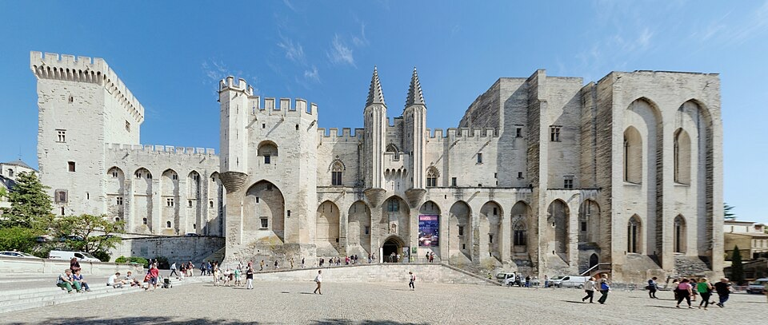 |
车停酒店车库，或城外免费的意大利人停车场（Parking des Italiens），有免费接驳车进城。教皇宫（Palais des Papes）3/1–11/1 9:00–19:00（最后入场 18:00），宫殿 + 花园 €16，加断桥（Pont Saint-Bénézet）联票 €19.50；2026-05 起在改造参观路线，工程到 2027 年春。 |
| 日落 | 多姆岩花园 Rocher des Doms 步行 |
- | 教皇宫（Palais des Papes）旁边的山顶花园，俯瞰罗讷河（Rhône）和断桥（Pont Saint-Bénézet）。 |
| 晚餐 | Bibendum（米其林必比登推荐，庭院小酒馆）想吃星级：Pollen（米其林一星）官网订位步行 | - | Bibendum 每周换菜单、有庭院露台，休息日说法不一（官网写无休、旅游局写周日和周一休），订位时确认。Pollen 周一至周五营业、晚餐 €120 起，但有资料称周三晚上不开，订位前问清楚。 |
| 入住 | La Mirande（教皇宫 Palais des Papes 正后方） 行李 |
- | 周三住阿维尼翁（Avignon）老城：La Mirande，或有车库的 Hôtel d'Europe。 |
B6 · 10/15 周四：索尔格岛 L'Isle-sur-la-Sorgue 周四集市 / 戈尔德 Gordes / 塞南克修道院 Abbaye de Sénanque
| 模块 | 地点安排 | 特色图片 | 备注 |
|---|---|---|---|
| 上午 | 索尔格岛 L'Isle-sur-la-Sorgue 可认真逛自驾步行 |
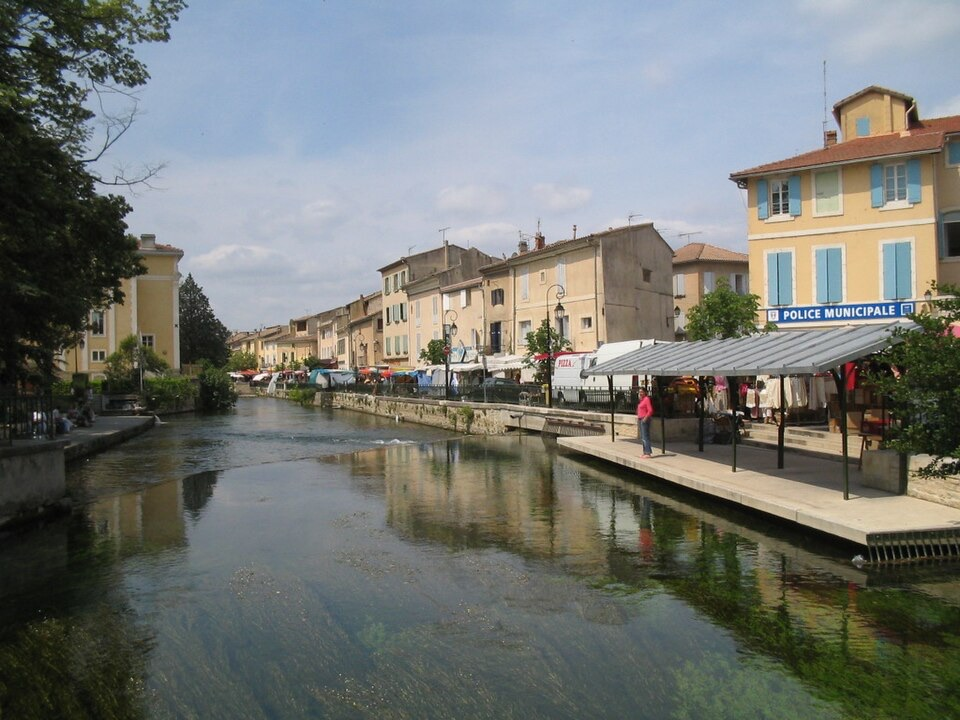 |
从阿维尼翁（Avignon）开车约 40 分钟。周四、周日上午有普罗旺斯集市（7:00–13:00），看完集市再看运河上的水车。集市日停外围停车场走进去。 |
| 午餐 | Solelh（米其林必比登推荐，备长炭烧烤） TheFork 订位步行 |
- | 午市套餐 €26 起，招牌是炭烤熟成牛肋排；周二、周三休（淡季周一也休），周四可以。TheFork 提前约 1 周订。 |
| 下午 | 戈尔德 Gordes 必去自驾步行 |
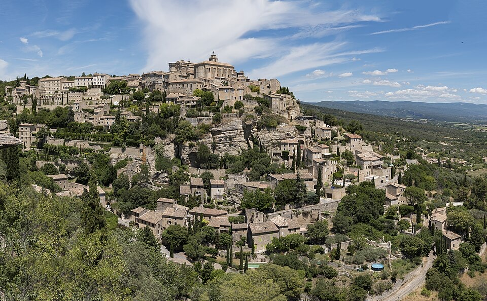 |
开车约 20 分钟。先在 D15 公路边的观景点拍村子全景，再停官方收费停车场（4 小时内 €8）进村逛，路边违停会被罚。 |
| 塞南克修道院 Abbaye de Sénanque 可选建议网上订票 |
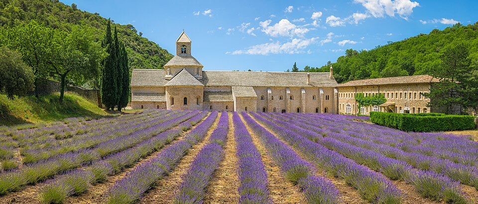 |
从戈尔德（Gordes）沿 D177 窄弯山路下行 10–15 分钟。周一至周六自助参观最后入场 17:00，€8，名额有限，在官网（Tickeasy）订。10 月门前的薰衣草田早已收割，看的是修道院本身。 | |
| 入住 | Les Bories & Spa（吕贝隆 Luberon，戈尔德 Gordes 旁） 行李 |
- | 周四、周五两晚住吕贝隆（Luberon，候选见下面的酒店表）。Les Bories 离戈尔德（Gordes）约 5 分钟，可以通过小型奢华酒店联盟（SLH）渠道用 Hilton Honors 积分订。 |
| 晚餐 | Le Mas – Alexis Osmont（农舍庭院餐厅） 需订位自驾 |
- | 在戈尔德（Gordes）的安贝尔村（Les Imberts），米其林指南推荐，约 €60–70；周二、周三休，不供应午餐。订位渠道没核实到，可以请酒店或戈尔德旅游局（04 90 72 02 75）帮忙。 |
B7 · 10/16 周五：鲁西永 Roussillon 红土 / 卢尔马兰 Lourmarin 周五集市 / 拉科斯特酒庄 Château La Coste 艺术建筑步道
| 模块 | 地点安排 | 特色图片 | 备注 |
|---|---|---|---|
| 上午 | 鲁西永 Roussillon赭石小径 Sentier des Ocres必去可认真逛自驾 | 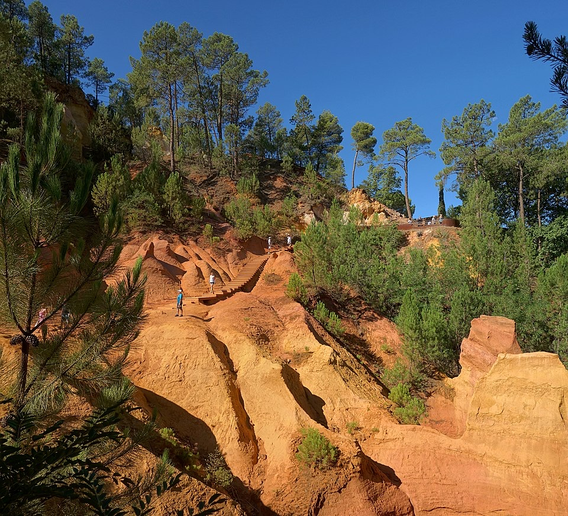 |
从戈尔德（Gordes）开车约 15 分钟。赭石小径（Sentier des Ocres）10 月 10:00–18:00（最后入场 17:30），€3.50；山火风险高或暴雨时会临时关闭，前一天 18:00 公布。红土会沾鞋，别穿白鞋。 |
| 卢尔马兰 Lourmarin 可认真逛自驾步行 |
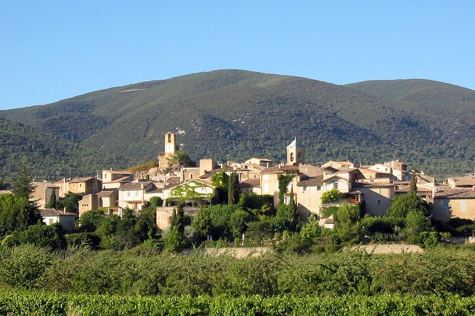 |
开车 26–30 分钟。周五上午集市（8:00–13:00，全年都有），村里设计小店也多；城堡（Château de Lourmarin）10 月 10:30–17:45，€8。集市日停车难，早点到。 | |
| 午餐 | Tadao Ando Café（拉科斯特酒庄 Château La Coste 园区） TheFork 订位自驾 |
- | 开车约 30 分钟。在安藤忠雄设计的艺术中心里吃午饭，配酒庄自己的酒，TheFork 可订。备选是卢尔马兰（Lourmarin）的 Le Moulin（营业到 10/26）。 |
| 下午 | 拉科斯特酒庄 Château La Coste 必去时间黑洞步行 |
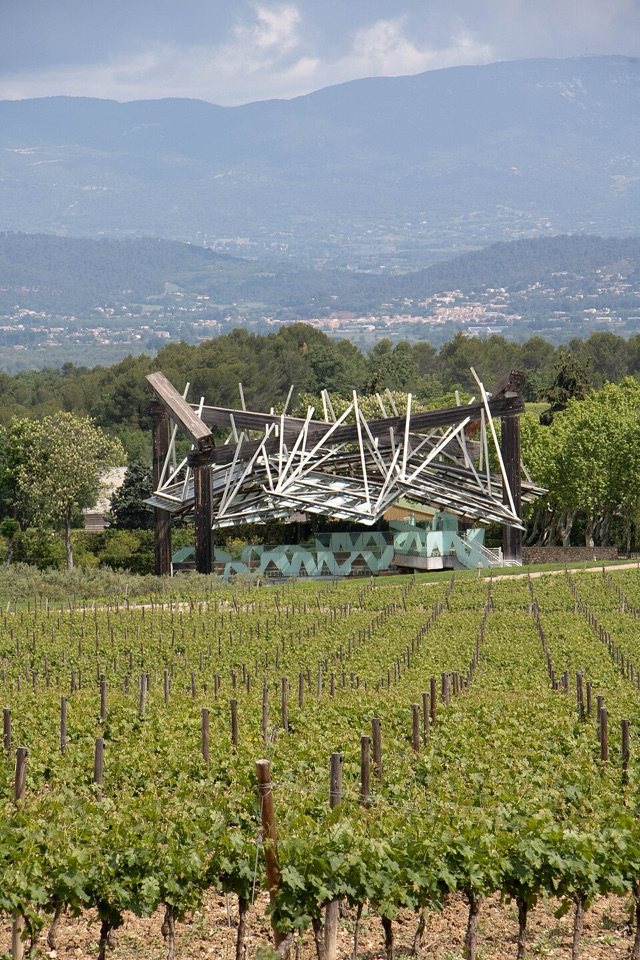 |
这趟设计 / 建筑控的重头戏：葡萄园里散落着安藤忠雄、盖里、伦佐·皮亚诺、路易丝·布尔乔亚等人的作品。自助步道 €15（含临展和地图），走完 2–3 小时，15:00 前开始，穿好走的鞋；9–10 月开到 19:00。 |
| 傍晚 （可选） |
米拉波大道 Cours MirabeauLéonard Parli（杏仁糖老店）可选自驾步行 | 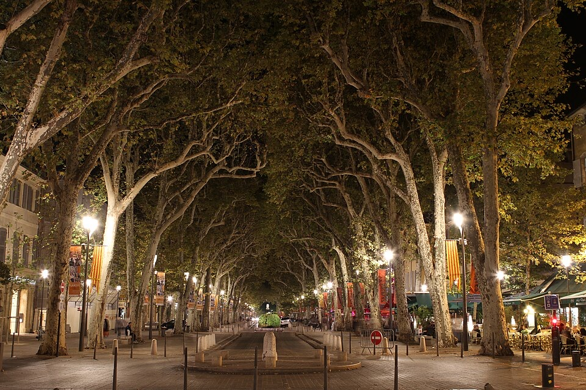 |
开车约 30 分钟到艾克斯（Aix-en-Provence），在米拉波大道（Cours Mirabeau）的梧桐树下散步，买特产杏仁糖。不想晚上开长途就跳过艾克斯，回吕贝隆（Luberon）吃饭。 |
| 晚餐 | Les Galinas（米其林必比登推荐，普罗旺斯家常菜） 电话订位步行 |
- | 焗番茄、蒜泥蛋黄酱这类普罗旺斯家常菜，约 €35–50；周六、周日休，电话订位（09 87 19 15 77）。饭后开回戈尔德（Gordes）约 65 分钟，夜里山路慢慢开。 |
B8 · 10/17 周六：阿尔勒 Arles 周六集市 / 古罗马竞技场 Arènes d'Arles / 卢马艺术中心 LUMA Arles → 傍晚去 CDG
| 模块 | 地点安排 | 特色图片 | 备注 |
|---|---|---|---|
| 早上 | 阿尔勒周六大集市 → 古罗马竞技场 Arènes d'Arles 必去自驾步行 |
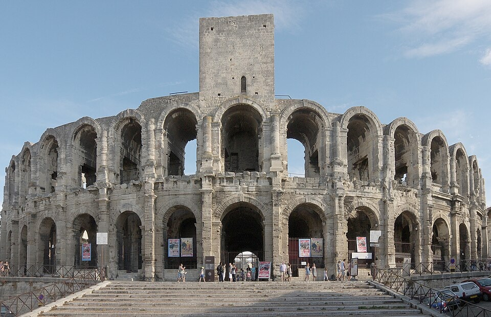 |
退房后开 75–90 分钟到阿尔勒（Arles）。周六上午大集市（8:00–12:45，利斯大道 / Boulevard des Lices，约 450 个摊位），车停利斯大道一带的公共停车场。竞技场 10 月 9:00–18:00，€11，约 45 分钟。 |
| 午餐 | Le Gibolin（米其林必比登推荐，自然酒小馆）奢侈备选：La Chassagnette（米其林星级 + 绿星农场菜园）电话订位步行 | - | Le Gibolin 两道 €28 / 三道 €35，周日、周一休，电话订。La Chassagnette 在阿尔勒（Arles）南边的卡马格湿地（Camargue），周二、周三休，提前 1–2 个月订。 |
| 下午 | 卢马艺术中心 LUMA Arles 必去可认真逛步行 |
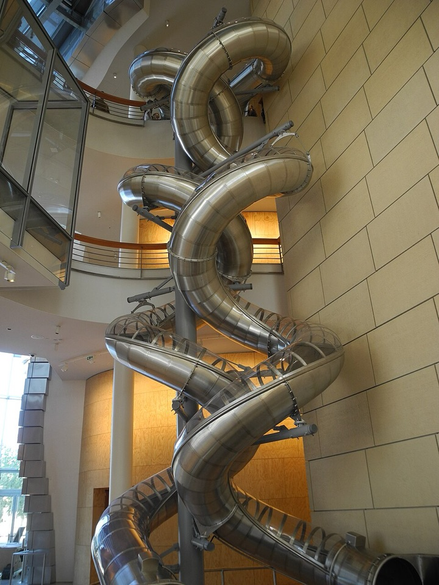 |
弗兰克·盖里设计的银色塔楼。塔楼、顶层露台、滑梯和园区免费，看展另收费（7–10 月 €15）。10/5 起每周二闭馆，周六照开。 |
| 傍晚 （推荐） |
还车 → OUIGO 去 CDG，住机场酒店 最稳自驾TGV |
- | 开约 40 分钟回阿维尼翁高铁站（Avignon TGV）还车，坐 OUIGO 17:19（每天）或 19:05（周末加开）直达 CDG 2（约 3 小时），住机场酒店，周日从容登机。第一次在法国自驾又要赶国际航班，选这个。 |
| 或者 | 光之采石场 Carrières des Lumières莱博山城 Les Baux-de-Provence可选自驾 | 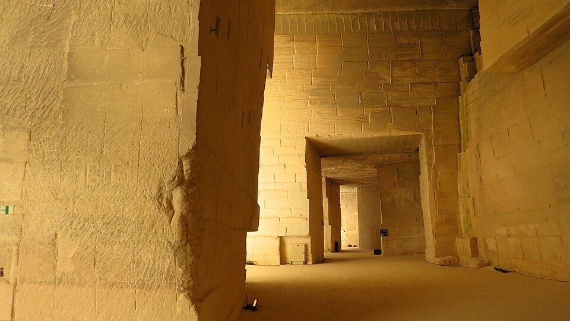 |
不想周六就走：下午从阿尔勒（Arles）开 30 分钟到莱博（Les Baux-de-Provence），看光之采石场（Carrières des Lumières，€16.50，周六放映的是《海洋》（Océan），毕加索场在其他日子），晚上住阿维尼翁（Avignon），赶周日 06:49 的早班车（见 B9 方案 2）。 |
B9 · 10/18 周日：回 SFO（三种走法）
普罗旺斯版最麻烦的是最后一天：要在周日赶回机场。三种走法按稳妥程度排：
| 模块 | 地点安排 | 特色图片 | 备注 |
|---|---|---|---|
| 方案 1 （推荐） |
周六晚已住 CDG 机场酒店 最稳飞机 |
- | 周日直接从 CDG 飞：法航 AF084 10:20 → SFO 12:50，或 AF082 15:40 → SFO 17:20（夏季第二班，10/18 仍在夏季时刻内，以官网为准）。 |
| 方案 2 | 周日 06:49 OUIGO 直达 CDG 没有后备TGV |
- | 05:50 退房 → 06:20 在阿维尼翁高铁站（Avignon TGV）还车（Avis 24 小时可还）→ 06:49 OUIGO → 约 09:50 到 CDG 2。赶下午的航班可以，但这班一旦延误或取消就没有补救（下一班直达约 13:30 才到）；OUIGO 行李限制也严。 |
| 方案 3 | 开到马赛机场 MRS 还车 自驾飞机 |
- | 从阿维尼翁（Avignon）开 65–72 分钟、从吕贝隆（Luberon）开约 1 小时到马赛机场（MRS）还车（租车柜台周日约 8:00 开），经欧洲枢纽转机回 SFO；联程航班按日期再查。 |
普罗旺斯 Provence 集市：按星期
均为上午集市（约8:00–13:00），午后收摊；周末/旺季8点前到方便停车。以下按官方或旅游局列表整理，个别标注未核实。艾克斯（Aix-en-Provence）的里舍尔姆广场（Place Richelme）每天上午都有农产品市集（8:00–12:30）；阿维尼翁室内市场（Les Halles d'Avignon）周二至周日开放、周一休。
| 星期 | 集市（地区 · 时间） |
|---|---|
| 周一 | 卡瓦永 Cavaillon（吕贝隆 Luberon 西口 · 上午） 规模较大的日常集市 卡德内 Cadenet / 洛里斯 Lauris（吕贝隆南 · 上午） 小型村集 丰维耶 Fontvieille（阿尔皮勒山 Alpilles · 8:00–13:00） 磨坊大道（Avenue des Moulins），小型 艾克斯 Aix-en-Provence（里舍尔姆广场 Place Richelme）（艾克斯 · 8:00–12:30） 每日农产品市集 |
| 周二 | 戈尔德 Gordes（吕贝隆 Luberon · 上午） 城堡广场（Place du Château）周边，村景+集市一起逛（12–3月周六另有集市） 阿普特 Apt（农夫市集）/ 库库龙 Cucuron / 圣萨蒂尔南 Saint-Saturnin-lès-Apt / 拉图尔代格 La Tour-d'Aigues（吕贝隆 · 上午） 库库龙池塘边梧桐树下很上镜 卢尔马兰 Lourmarin（夜市）（吕贝隆南 · 傍晚） 仅4–10月 塔拉斯孔 Tarascon / 埃吉耶尔 Eyguières（阿尔皮勒山 Alpilles · 8:00–13:00） 艾克斯 Aix-en-Provence 大集市（艾克斯 · 8:30–13:00） 周二/四/六在里舍尔姆广场（Place Richelme）、孔塔勒广场（Place des Comtales）等处扩大集市 阿维尼翁室内市场 Les Halles d'Avignon（阿维尼翁 · 周二至周五 6:00–13:30（另有来源称2026/7/27–12/31为6:00–14:00）） 约40家摊位，适合早餐/买熟食野餐 |
| 周三 | 圣雷米 Saint-Rémy-de-Provence（阿尔皮勒山 Alpilles · 8:00–13:00） 阿尔皮勒山一带最大的集市，老城内，质量高（周六另有较小集市） 阿尔勒 Arles（周三集市）（阿尔勒 · 8:00–12:45） 埃米尔-孔布大道（Boulevard Émile-Combes），约300摊（周六更大） 维安 Viens / 博蒙德佩尔蒂 Beaumont-de-Pertuis（吕贝隆 Luberon · 上午） 小村集，维安仅4–10月 |
| 周四 | 索尔格岛 L'Isle-sur-la-Sorgue（沃克吕兹省 Vaucluse · 7:00–13:00） 水乡小镇，周日集市的小一号版本，人少好逛（全年，1/1、12/25除外） 鲁西永 Roussillon（吕贝隆 Luberon · 上午） 可接赭石小径（Sentier des Ocres） 梅内尔布 Ménerbes（4–10月）/ 古尔特 Goult（4–9月）/ 塞尼翁 Saignon（4–10月）（吕贝隆 · 上午） 山城小集，仅季节性 莫萨讷 Maussane-les-Alpilles（阿尔皮勒山 Alpilles · 8:00–13:00） 亨利-吉罗广场（Place Henri Giraud），近莱博（Les Baux-de-Provence） 艾克斯 Aix-en-Provence 大集市（艾克斯 · 8:30–13:00） |
| 周五 | 卢尔马兰 Lourmarin（吕贝隆 Luberon 南 · 8:00–13:00） 吕贝隆最有名的集市之一，全年；9点前到好停车 博尼约 Bonnieux / 加尔加 Gargas / 佩尔蒂 Pertuis（吕贝隆 · 上午） 博尼约山城小集，可与卢尔马兰串联 埃加利耶尔 Eygalières / 丰维耶 Fontvieille（阿尔皮勒山 Alpilles · 8:00–13:00） 埃加利耶尔以有机农产品见长 |
| 周六 | 阿尔勒 Arles（周六大集市）（阿尔勒 · 8:00–12:45） 利斯大道（Boulevard des Lices）、克列孟梭大道（Georges-Clemenceau）、埃米尔-孔布大道（Émile-Combes），约450摊，普罗旺斯最大集市之一 阿普特 Apt（吕贝隆 Luberon · 上午） 吕贝隆最大的周六集市，整个老城 圣雷米 Saint-Rémy-de-Provence（小集市）（阿尔皮勒山 Alpilles · 8:00–13:00） 抵抗运动大道（Avenue de la Résistance） 卡德内 Cadenet（农夫市集，4–10月）/ 戈尔德 Gordes（12–3月）（吕贝隆 · 上午） 季节性 艾克斯 Aix-en-Provence 大集市（艾克斯 · 8:30–13:00） |
| 周日 | 索尔格岛 L'Isle-sur-la-Sorgue（沃克吕兹省 Vaucluse · 集市 7:00–13:00；旧货市集 9:00–18:00） 约230摊普罗旺斯集市 + 四人质大道（Avenue des Quatre Otages）旧货古董市集；8点前到 库斯特莱 Coustellet 农夫市集（莫贝克 Maubec）（吕贝隆 Luberon · 8:00–13:00） 约80家农户直销；2026年季节为3/29–12/27 昂苏伊 Ansouis（吕贝隆南 · 上午） 小村集 沙托雷纳尔 Châteaurenard（阿尔皮勒山 Alpilles 北 · 8:00–13:30） 卡诺大道（Cours Carnot），80+摊 阿维尼翁室内市场 Les Halles d'Avignon（阿维尼翁 · 周六、周日 6:00–14:00） 周一休 |
普罗旺斯 Provence 酒店候选
| 推荐度 | 酒店 | 图片 | 区域 | 价格 / 积分 | 为什么 | 注意 |
|---|---|---|---|---|---|---|
| 吕贝隆首选 · Hilton 积分 | Les Bories & Spa 官网 |
- | 戈尔德 Gordes（吕贝隆 Luberon） | 双人房 €320–595；套房 €605–1,130；早餐€25/人（2026–27季） 小型奢华酒店联盟（SLH）成员 → 可在 Hilton 渠道用 Hilton Honors 积分订（hilton.com 列为 “Les Bories & Spa, an SLH Hotel”）。World of Hyatt 已不可用：Hyatt 与 SLH 的合作2024年5月已结束 |
离戈尔德（Gordes）村约5分钟，去塞南克修道院（Abbaye de Sénanque）顺路；有米其林星级餐厅和小酒馆；吕贝隆（Luberon）基地中唯一能用酒店集团积分的选项。 | 2026年营业 3/26–2027/1/3（每天）；34间房。车程：鲁西永（Roussillon）约18分钟、卢尔马兰（Lourmarin）约35分钟、阿维尼翁高铁站（Avignon TGV）约52分钟、阿尔勒（Arles）约76分钟。附近其他 SLH 酒店（是否都能走 Hilton 积分需逐家核实）：Auberge de Cassagne & Spa（勒蓬泰 Le Pontet，阿维尼翁近郊）、Domaine de Manville（莱博 Les Baux）、Le Vallon de Valrugues（圣雷米 Saint-Rémy）、Hôtel Le Pigonnet（艾克斯 Aix）。 |
| 度假村 | Coquillade Provence 官网 |
- | 加尔加 Gargas（阿普特 Apt 附近，吕贝隆 Luberon） | 双人房含早 €260起；套房 €540起（含迷你吧与水疗，动态价格） Relais & Châteaux（无积分计划）；未核实可用 Hyatt / Hilton / Marriott 积分 |
11世纪小村落改建的五星度假村，69间房、大型水疗、3家餐厅，连续两年获米其林钥匙；离鲁西永（Roussillon）约13分钟，适合想要度假村设施的两人。 | 2026年营业 3/19–12/31（每天），冬季闭店至次年3月中。车程：戈尔德（Gordes）约18分钟、卢尔马兰（Lourmarin）约27分钟、拉科斯特酒庄（Château La Coste）约55分钟、阿维尼翁高铁站（Avignon TGV）约63分钟、阿尔勒（Arles）约87分钟。 |
| 葡萄园庄园 | Domaine de Fontenille 官网 |
- | 洛里斯 Lauris（吕贝隆 Luberon 南坡） | 双人房 €325起（旅游局）；Relais & Châteaux 页标 US$281起 Relais & Châteaux（无积分计划） |
带葡萄园的五星庄园酒店，米其林星级餐厅 Le Champ des Lunes（2026年星级未核实）加小酒馆 La Cuisine d'Amélie；离卢尔马兰（Lourmarin）约8分钟、拉科斯特酒庄（Château La Coste）约29分钟，是“艺术建筑+美食”路线最顺的基地。 | 2026年：2/12–3/31 仅周四至周日营业；4/1–11/1 每天；11/2之后营业情况未核实。房间数来源不一（18间+公寓 / 25间）。车程：戈尔德（Gordes）约40分钟、阿维尼翁高铁站（Avignon TGV）约60分钟、艾克斯（Aix-en-Provence）约40–45分钟（估算）。 |
| 山顶村酒店 | Hôtel Crillon le Brave 官网 |
- | 克里永勒布拉夫 Crillon-le-Brave（旺图山 Mont Ventoux 脚下，吕贝隆 Luberon 以北） | 未核实 Maisons Pariente 集团（无积分计划；Hyatt / Hilton 渠道未核实） |
山顶村里由12栋老房子组成的五星酒店，2026年4/3改造后重开：新增9间房、第二个泳池、新水疗 Spa des Écuries；视野看向旺图山（Mont Ventoux）与葡萄园。 | 季节性酒店，2026年闭店日期未核实（11月后出行务必确认）。位置偏北：阿维尼翁（Avignon）市区约38分钟、戈尔德（Gordes）约42分钟、鲁西永（Roussillon）约56分钟、卢尔马兰（Lourmarin）约73分钟、阿尔勒（Arles）约80分钟，对本行程偏远。 |
| 阿维尼翁 · Amex FHR | La Mirande 官网 |
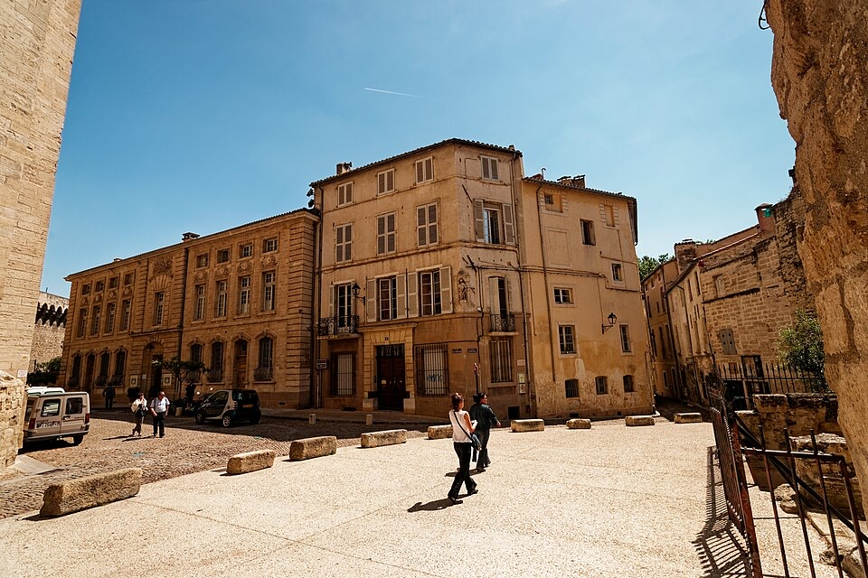 |
阿维尼翁 Avignon 老城（教皇宫 Palais des Papes 正后方） | 双人房 €395–925（2026/2/9–12/31） 无酒店集团积分；官网显示与 Amex Fine Hotels & Resorts、Virtuoso 合作（可享早餐/房费抵扣等权益，不是积分兑换） |
紧挨教皇宫（Palais des Papes）的古宅五星酒店，室内陈设与古董极具设计看点；周六住这里，步行去教皇宫、断桥（Pont Saint-Bénézet）和晚餐。 | 2026年闭店 1/24–2/8（2027年未公布）；26间客房；付费停车+充电桩；主餐厅 La Mirande 2026年由一星降为指南推荐，另有 Bistrot Pamard 等。到阿维尼翁高铁站（Avignon TGV）约15分钟车程。 |
| 阿维尼翁 · 有车库 | Hôtel d'Europe 官网 |
- | 阿维尼翁 Avignon 老城（克里永广场 12 号 / 12 Place Crillon） | 双人房 €180–1,250（2026年9–12月区间；7/1–25最贵，€390–1,250） 不在 SLH 官网名单内（不能用 Hilton 积分订）；未见其他集团积分合作（未核实） |
起源于16世纪的老牌五星酒店，庭院露台餐厅 La Vieille Fontaine；价格下限低于 La Mirande，有车库/代客泊车，自驾入住方便。 | 2026年营业 3/17–7/25、8/12–12/31（7/26–8/11 与年初关闭）；44间（39间房+5套房）；付费停车+充电桩。La Vieille Fontaine 旅游局页称米其林星级（2026年星级未核实），套餐€54–150。到阿维尼翁高铁站（Avignon TGV）约15分钟车程。 |
注意：World of Hyatt 和 SLH 的合作 2024-05 已结束，这几家都不能用 Hyatt 积分；Les Bories 目前可以在 hilton.com 用 Hilton Honors 积分订。
普罗旺斯版要提前订的
- La Chassagnette / L'Oustau de Baumanière：提前1–2个月
- Pollen：提前2–4周（只开周一至周五）
- Solelh（TheFork）、Le Gibolin、Les Galinas（电话）：提前约1周
- 塞南克修道院（Sénanque）：Tickeasy 提前订票
- 拉科斯特酒庄（Château La Coste）导览：官网预约；自助步道当天买也可
- 租车：提前订自动挡，选周日可在非营业时间还车的公司（Avis 在阿维尼翁高铁站 Avignon TGV 可24小时还车），出发前办好国际驾照
5. 必吃榜
口径：优先挑本地人和游客口碑都稳的店，按区域排，方便就近塞进每天的行程。价格按单人一餐估算。「未核实」表示官网没查到，出发前在 Google Maps 再看一眼营业时间。
本次已排进行程的餐厅与预约方式
餐饮安排以这张表为准：建议、备选、可选都在这里，每日行程里的餐厅也以此为准。
| 日期 | 餐次 | 餐厅 | 吃什么 | 状态 | 预约判断 | 预约 / 官网链接 | 备注 |
|---|---|---|---|---|---|---|---|
| D2 10/10 周六 | 午餐 | Chez Alain Miam Miam | 现做夹馅三明治和热三明治（具体菜单未核实） | 建议 | 不用订位现场排队 | Google Maps | 在红孩儿市场（Marché des Enfants Rouges）里，周一、周二休，周六照常；L'As du Fallafel 周六安息日不营业，所以改吃这里。 |
| D2 10/10 周六 | 午餐备选 | Breizh Café Le Marais | 荞麦咸可丽饼 + 甜可丽饼，配布列塔尼苹果酒 | 备选 | 需订位官网在线订或电话 +33 (0)1 42 72 13 77 | 订位 / 官网 | 官网可订，每天营业。 |
| D2 10/10 周六 | 晚餐 | Chez Janou | 冷罐装普罗旺斯炖菜、鳀鱼酱与橄榄酱前菜、迷迭香鸭胸、招牌巧克力慕斯；茴香酒选择很多 | 建议 | 需订位电话 01 42 72 28 41（官网未见在线订位） | Google Maps | 只接受电话订位 01 42 72 28 41；招牌巧克力慕斯。 |
| D2 10/10 周六 | 晚餐备选 | Café des Musées | 红酒炖牛肉（官网称获 Le Figaro 2018 巴黎最佳） | 备选 | 需订位官网在线订 | Google Maps | 玛黑区街角的家常小酒馆，每天营业、官网可订。 |
| D3 10/11 周日 | 午餐 | Coutume Babylone | 自家烘焙精品咖啡（意式与手冲）、当季早午餐 | 建议 | 不用订位到店即可（官网未提供订位） | Google Maps | 精品咖啡 + 早午餐；周日营业时间出发前确认。 |
| D3 10/11 周日 | 🍰 甜点 | Pierre Hermé Bonaparte | 马卡龙（18 种常设或限定口味）、Ispahan（玫瑰、荔枝、覆盆子）、Montebello（开心果草莓） | 建议 | 不用订位现场购买 | 订位 / 官网 | 逛圣日耳曼时现买单个 Ispahan（玫瑰荔枝覆盆子）和马卡龙；生日在尼斯过，整只蛋糕不好带上火车。 |
| D3 10/11 周日 | 晚餐 | Bouillon Julien | 蛋黄酱水煮蛋 €4.50、焗蜗牛 6 只 €9.90、招牌牛肉清汤 €10.90、肉铺精选牛排配薯条 €13.60、朗姆酒巴巴 €6.90 | 建议 | 不用订位官网在线订（官网注明请勿发邮件订位）；也欢迎不订位直接来 | 订位 / 官网 | 新艺术风格老餐厅，价格友好，周日晚上也开；官网可订，也可以直接来。 |
| D4 10/12 周一 | 歇脚 | Café Kitsuné Palais-Royal | 咖啡与轻食（具体菜单未核实） | 可选 | 不用订位不接受预订（现场排队） | Google Maps | 每天 8:30 开，在皇家宫殿花园（Jardin du Palais-Royal）的拱廊里；卢浮宫（Louvre）出来去午餐的路上歇一下。 |
| D4 10/12 周一 | 午餐 | Higuma | 黄油玉米拉面、韭菜猪肝炒豆芽、煎饺、盖饭 | 建议 | 不用订位不接受预订（官网写明不收订位） | Google Maps | 不接受预订，翻台快。 |
| D4 10/12 周一 | 午餐备选 | Le Grand Colbert | 6 只生蚝 €26–34、焗洋葱汤 €13/15、焗蜗牛 6 只 €15、阿尔萨斯酸菜肉肠拼盘 €38/40；甜点巴黎布雷斯特泡芙 €14/15、覆盆子千层酥 €14/15（午/晚价） | 备选 | 需订位官网在线订或电话 01 42 86 87 88 | 订位 / 官网 | 午市套餐 €30 起，就在薇薇安拱廊（Galerie Vivienne）旁。 |
| D4 10/12 周一 | 🎂 生日前夜晚餐 | Les Ombres | 午餐两道 €48 / 三道 €65；晚餐三道 €98 / 四道 €118（不含酒） | 建议 | 需订位OpenTable 在线订；电话 +33 (0)1 47 53 68 00 | 订位 / 官网 | 凯布朗利博物馆（Musée du quai Branly）屋顶，正对铁塔（Tour Eiffel）；晚餐 19:00–22:00，三道菜 €98 起；OpenTable 订，备注生日。 |
| D4 10/12 周一 | 前夜晚餐 · 奢侈 | Le Jules Verne | 主厨品鉴套餐：5 道 €295 起、7 道 €330 起（午晚同价） | 备选 | 需订位难订 · 尽早官网在线订；电话 +33 (0)1 72 76 16 61（每日 9:00–22:00）；邮件 reservation.jv@lejulesverne-paris.com；需付订金 | 订位 / 官网 | 铁塔（Tour Eiffel）2 楼，米其林二星；晚餐 19:00–21:00，5 道 €305 / 7 道 €345；男士要穿西装外套；生日蛋糕至少提前 72 小时说。 |
| D4 10/12 周一 | 前夜晚餐 · 铁塔 1 楼 | Madame Brasserie | 季节菜单（以本地蔬菜为主，有素食/纯素选项）；周日有早午餐 | 备选 | 需订位官网在线订或电话；持订位到 1 号入口，再到餐厅接待处领电梯票 | 订位 / 官网 | 18:30 或 21:00 两轮入座，€109.80 起；可加订庆祝套餐（一杯香槟 + 打印合照），至少提前 48 小时。 |
| D4 10/12 周一 | 前夜晚餐 · 美食派 | Septime | 只有主厨品鉴套餐：午餐 5 道 €85、晚餐 7 道 €135；配酒午 €60 / 晚 €75 | 备选 | 需订位难订 · 尽早官网在线订（Zenchef） | 订位 / 官网 | 周一晚餐 €135；10/12 的位 9/21 10:00（巴黎时间）放出。 |
| D5 10/13 周二 🎂 | 午餐 | Chez Thérésa | 鹰嘴豆煎饼（约 €3）、洋葱挞（约 €2.50）、菜煎蛋饼（约 €3.50）、尼斯三明治（约 €4） | 建议 | 不用订位不需要，排队购买 | Google Maps | 萨莱雅市集（Cours Saleya）的摊位，约 15:00 前收摊；Chez Pipo 周一、周二休，今天去不了。 |
| D5 10/13 周二 🎂 | 午餐备选 | Lou Pilha Leva | 鹰嘴豆煎饼、尼斯酿蔬菜、炸西葫芦花、尼斯三明治、洋葱挞 | 备选 | 不用订位柜台点餐 | Google Maps | 老城中心的平价小吃店，全天不间断营业（多数来源称每天营业）。 |
| D5 10/13 周二 🎂 | 🎂 生日晚餐 | Le Plongeoir | 地中海菜，随季节和市场变化（具体菜单未核实） | 建议 | 需订位电话 +33 4 93 26 53 02 或官网 | 订位 / 官网 | 建在海中礁石上的餐厅；周二 12:00–21:30，今年营业到 11/15；订位时写上生日。 |
| D5 10/13 周二 🎂 | 生日晚餐 · 一星 | JAN | 主厨套餐，法国南部食材配南非做法（约 €200，二手来源） | 可选 | 需订位官网订位 | 订位 / 官网 | 米其林一星，只有 24 个座位，周二至周六晚餐。 |
| D5 10/13 周二 🎂 | 生日晚餐 · 二星 | Flaveur | 主厨套餐 €180–315，配酒 €80–140 | 可选 | 需订位官网或 TheFork | 订位 / 官网 | 米其林二星，周二中午和晚上都开。 |
| D5 10/13 周二 🎂 | 生日晚餐 · 热闹 | La Petite Maison | 尼斯风味前菜（酿蔬菜、洋葱挞等）和烤整鱼（具体菜单未核实） | 备选 | 需订位难订 · 尽早电话订位 04 93 92 59 59，几乎必须预订 | Google Maps | 热门名流餐厅，几乎必须电话订位；周二营业（有来源说周日休）。 |
| D6 10/14 周三 | 午餐 | La Mère Germaine | 当日鲜鱼和海鲜（地中海风味，具体菜单与价格未核实） | 建议 | 需订位官网 Zenchef 在线订位，或电话 +33 4 93 01 71 39 | 订位 / 官网 | 周三至周日营业；露台位提前约 1 周订。 |
| D6 10/14 周三 | 晚餐 | Le Canon | 黑板上的当日菜（本地、多为有机食材），配 100% 自然酒 | 建议 | 需订位电话订位 04 93 79 09 24 | Google Maps | 周六、周日休；电话订。 |
| D6 10/14 周三 | 晚餐备选 | Chez Acchiardo | 尼斯红酒炖牛肉、炖牛肉馅意式饺子、罗勒青酱蔬菜汤、酿蔬菜、尼斯风味炖牛肚 | 备选 | 需订位电话订位 +33 4 93 85 51 16；地区旅游局页面列出可刷银行卡、现金和餐券（旧攻略说只收现金，可能已过时） | Google Maps | 周六、周日休；电话订，营业状况待复核。 |
| D7 10/15 周四 | 午餐 | La Montgolfière – Henri Geraci | 午餐黑板菜单：前菜 €13–16、主菜 €16–31、甜点 €8；晚餐 3 道 €59 / 4 道 €70（价格来自搜索摘要，未在官网页面核实） | 可选 | 需订位待复核电话 +377 97 98 61 59 或 +33 6 80 86 86 25；官网联系表单 | 订位 / 官网 | 周三、周日休；营业状况待复核。 |
| D7 10/15 周四 | 晚餐 | La Merenda | 青酱意面、炸西葫芦花、酿沙丁鱼、尼斯红酒炖牛肉、尼斯风味炖鳕鱼干、甜菜挞 | 建议 | 需订位难订 · 尽早无电话。地区旅游局：只接受到店、Facebook、Instagram 或官网 lamerenda.net 预订；官网现有在线订位按钮（SevenRooms）。付款：只收现金或支票，不收银行卡 | 订位 / 官网 | 官网写周一至周五营业；多家来源称只收现金或支票。 |
| D8 10/16 周五 | 午餐 | La Colombe d'Or | 法式 / 普罗旺斯经典菜，招牌前菜拼盘约 €40（主菜约 €22–65，二手来源） | 建议 | 需订位电话 +33 4 93 32 80 02 或邮件 contact@la-colombe-dor.com | 订位 / 官网 | 墙上挂着毕加索、马蒂斯、米罗等人的作品；午餐 12:00–14:30；每年 10 月底关门，订位时确认 10/16 营业。 |
| D8 10/16 周五 | 晚餐 | Olive & Artichaut | 跟着当日菜单点，用本地小农的时令蔬菜、海鲜和山区食材（菜品随季节变） | 建议 | 需订位官网在线订位（Guestonline）或电话 +33 4 89 14 97 51 | 订位 / 官网 | 周五营业（周日、周一休）；官网提前 3–7 天订。 |
| D9 10/17 周六 | 晚餐 | Bistrot d'Antoine | 按黑板时令菜点，米其林介绍提到：老式炖猪肉配奶油玉米糊、手切生牛肉挞、烤小牛腰配芥末酱 | 建议 | 需订位难订 · 尽早只接受电话订位 +33 4 93 85 29 57（无网上订位） | 订位 / 官网 | 周二至周六营业；只接电话订位，提前一周以上。 |
需要提前预约 / 优先锁位（按紧急程度）
| 优先级 | 日期 | 餐厅 | 什么时候订 | 预约链接 | 下一步 |
|---|---|---|---|---|---|
| 最高 | D4 10/12 周一 | Les Ombres | 现在就订（OpenTable），选 19:30–20:00（想先看凯旋门日落就订 19:45），备注生日前夜。 | 订位 / 官网 | 订不到就换 Madame Brasserie 或 Le Jules Verne。 |
| 最高 | D5 10/13 周二 🎂 | Le Plongeoir | 现在就订：电话 +33 4 93 26 53 02 或官网，订 19:15 左右，备注生日。 | 订位 / 官网 | 订不到就换 JAN 或 La Petite Maison。 |
| 高 | D7 10/15 周四 | La Merenda | 约 10/1 起在官网（SevenRooms）订（提前 1–2 周）；订不到就前一天去店里问。 | 订位 / 官网 | 带现金。 |
| 高 | D8 10/16 周五 | La Colombe d'Or | 现在就打电话（+33 4 93 32 80 02）或发邮件订 10/16 午餐，顺便确认 10 月底关门前还营业。 | 订位 / 官网 | 订不到就在村里找家露台咖啡馆。 |
| 高 | D9 10/17 周六 | Bistrot d'Antoine | 最晚 10/9 前打电话（+33 4 93 85 29 57），提前一周以上。 | 订位 / 官网 | 订不到就换 Olive & Artichaut（周六也开）。 |
| 中 | D2 10/10 周六 | Chez Janou | 提前 1–2 周打电话（01 42 72 28 41，湾区晚上打正好是巴黎早上）。 | 电话 / 现场 | 打不通就改 Café des Musées，官网直接订。 |
| 中 | D3 10/11 周日 | Bouillon Julien | 提前几天官网订。 | 订位 / 官网 | 不订也可以直接去排队。 |
| 中 | D8 10/16 周五 | Olive & Artichaut | 10/9–10/13 之间官网订（提前 3–7 天）。 | 订位 / 官网 | 订不到就换 Le Canon（周五也开）。 |
| 中 | D6 10/14 周三 | La Mère Germaine | 约 10/7 在 Zenchef 订露台位（提前约 1 周）。 | 订位 / 官网 | 订不到就在自由城（Villefranche-sur-Mer）老港随便挑一家海边餐厅。 |
| 中 | D6 10/14 周三 | Le Canon | 提前几天电话订（04 93 79 09 24）。 | 电话 / 现场 | 订不到就换 Chez Acchiardo。 |
| 可选 | D4 10/12 周一 | Le Jules Verne | 现在就查：90 天窗口 7 月中就开了，日落时段最先卖完；订位要预付，48 小时内取消不退。 | 订位 / 官网 | 奢侈版生日前夜晚餐，米其林二星，5 道 €305 起；生日蛋糕至少提前 72 小时说。 |
| 可选 | D4 10/12 周一 | Madame Brasserie | 尽早在官网订（第三方建议至少提前 10–15 天）；18:30 那轮正好赶上日落（19:05）。 | 订位 / 官网 | 加订庆祝套餐（香槟 + 合照）至少提前 48 小时；不能自带蛋糕。 |
| 可选 | D4 10/12 周一 | Septime | 9/21 10:00 巴黎时间（湾区 9/21 凌晨 1:00）放 10/12 的位，一开放就抢。 | 订位 / 官网 | 美食派前夜晚餐，€135；周末休、周一开。 |
| 可选 | D5 10/13 周二 🎂 | JAN | 尽早在官网订，只有 24 个座位。 | 订位 / 官网 | 米其林一星生日晚餐，套餐约 €200。 |
| 可选 | D5 10/13 周二 🎂 | Flaveur | 尽早在官网或 TheFork 订。 | 订位 / 官网 | 米其林二星生日晚餐，套餐 €180–315。 |
| 可选 | D9 10/17 周六 | Mirazur | 10 月的位早已放完，只能在官网盯取消的空位。 | 订位 / 官网 | 三星大餐，要登记信用卡；想去就把 D9 换成芒通（Menton）。 |
备选 B（普罗旺斯版）的餐厅与预约
| 日期 | 餐次 | 餐厅 | 吃什么 | 状态 | 预约判断 | 预约 / 官网链接 | 备注 |
|---|---|---|---|---|---|---|---|
| B5 10/14 周三 | 晚餐 | Bibendum | 每周更换的小酒馆菜单；庭院露台；BBD Club 鸡尾酒配小食 | 建议 | 需订位官网订位链接；电话 04 90 91 78 39 | 订位 / 官网 | 米其林必比登推荐的庭院小酒馆；休息日说法不一，订位时确认。 |
| B5 10/14 周三 | 晚餐备选 | Pollen | 主厨品鉴套餐：午市€60（节假日除外）或€120；晚餐€120 / 大套餐€150 | 备选 | 需订位难订 · 尽早电话 04 86 34 93 74 或 contact@pollen-restaurant.fr（在线订位渠道未核实） | 订位 / 官网 | 米其林一星；有资料称周三晚上不开，订位前确认。 |
| B6 10/15 周四 | 午餐 | Solelh | 午市套餐；备长炭烤熟成牛肋排、鱿鱼、伊比利亚猪肩胛肉 | 建议 | 需订位官网 TheFork 在线订位；6人以上发邮件 | 订位 / 官网 | 周二、周三休（周四可以）；TheFork 订。 |
| B6 10/15 周四 | 晚餐 | Le Mas – Alexis Osmont | 按当季市场单点：芦笋、鸡油菌、洋蓟等沃克吕兹（Vaucluse）时令菜 | 建议 | 需订位订位电话/线上渠道未核实；可查米其林页面或致电戈尔德（Gordes）旅游局 04 90 72 02 75 | 订位 / 官网 | 周二、周三休，不供应午餐。 |
| B7 10/16 周五 | 午餐 | Tadao Ando Café – Château La Coste | 在安藤忠雄设计的艺术中心（Centre d'Art）里吃午饭配酒庄自产酒（具体菜单未核实） | 建议 | 需订位TheFork（LaFourchette）在线订位 | 订位 / 官网 | 园区里，每天 12:00–15:00；TheFork 订。 |
| B7 10/16 周五 | 午餐备选 | Le Moulin – Beaumier | 炭烤、炉灶做的普罗旺斯经典菜，加入外来香料的现代版 | 备选 | 需订位官网在线、电话 +33 4 89 81 40 77、邮件 lemoulin@beaumier.com | 订位 / 官网 | 营业到 10/26，之后冬季歇业。 |
| B7 10/16 周五 | 晚餐 | Les Galinas – La table provençale | 普罗旺斯焗番茄、比赛级蒜泥蛋黄酱、羊肚、鮟鱇配普罗旺斯番茄红酒酱 | 建议 | 需订位电话订位 09 87 19 15 77（有来源称仅接受电话） | 订位 / 官网 | 周六、周日休；电话订。 |
| B8 10/17 周六 | 午餐 | Le Gibolin | 2道或3道固定套餐（随季更换），配自然酒 | 建议 | 需订位电话 +33 4 88 65 43 14 | Google Maps | 周日、周一休；电话订。 |
| B8 10/17 周六 | 午餐备选 | La Chassagnette | 以自家有机菜园为核心的主厨菜单 | 备选 | 需订位难订 · 尽早官网在线订位；电话 +33 4 90 97 26 96；contact@chassagnette.fr | 订位 / 官网 | 周二、周三休，冬季歇业；提前 1–2 个月订。 |
| 优先级 | 日期 | 餐厅 | 什么时候订 | 预约链接 | 下一步 |
|---|---|---|---|---|---|
| 中 | B6 10/15 周四 | Solelh | 约 10/8 在 TheFork 订（提前约 1 周）。 | 订位 / 官网 | 订不到就在索尔格岛（L'Isle-sur-la-Sorgue）市场边随便吃。 |
| 中 | B7 10/16 周五 | Les Galinas – La table provençale | 约 10/9 电话订（09 87 19 15 77）。 | 订位 / 官网 | 不想夜里开车就改在卢尔马兰（Lourmarin）吃。 |
| 中 | B8 10/17 周六 | Le Gibolin | 约 10/10 电话订（+33 4 88 65 43 14）。 | 电话 / 现场 | 订不到就在阿尔勒（Arles）市场边吃简餐。 |
| 可选 | B8 10/17 周六 | La Chassagnette | 现在就订（提前 1–2 个月的窗口已经开了）。 | 订位 / 官网 | 农场菜园星级午餐。 |
巴黎
| 区域 | 餐厅 | 类型 / 人均 | 图片 | 点什么 · 为什么 | 休息 / 预约 | 适合安排 |
|---|---|---|---|---|---|---|
| 玛黑 Le Marais / 圣路易岛 Île Saint-Louis | Chez Janou 需订位 |
小酒馆 人均未核实 |
- | 冷罐装普罗旺斯炖菜、鳀鱼酱与橄榄酱前菜、迷迭香鸭胸、招牌巧克力慕斯；茴香酒选择很多普罗旺斯风味小酒馆，有橄榄树荫露台，D2 逛完孚日广场（Place des Vosges）就近吃。 | 休：无固定休息日 订：电话 01 42 72 28 41（官网未见在线订位）未核实；评论普遍建议提前订 |
D2 10/10 周六 |
| Café des Musées 需订位 |
小酒馆 人均未核实 |
 |
红酒炖牛肉（官网称获 Le Figaro 2018 巴黎最佳）玛黑区（Le Marais）街角的传统家常小酒馆，红酒炖牛肉出名，适合 D2。 | 休：无固定休息日（第三方称仅 12 月 24–25 日休） 订：官网在线订或电话 01 42 72 96 17未核实 订位链接 |
D2 10/10 周六 | |
| Clown Bar 需订位难订 · 尽早 |
新派小酒馆 午市 €32；晚餐未核实 |
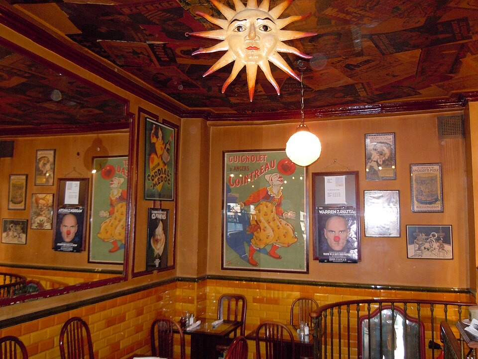 |
工作日午市套餐 €32（前菜+主菜+甜点）；晚餐单点，每人至少点一道菜1995 年起列为法国历史古迹的老酒吧，如今是热门新派小酒馆。 | 休：无固定休息日（官网写每天营业） 订：电话 01 43 55 87 35 或邮件 reservation@clownbar.fr；订满可登记候补未核实（官网未写放位规则） 订位链接 |
D2 10/10 周六 | |
| Parcelles 需订位 |
新派小酒馆 €36–50（Le Fooding） |
- | 开心果酥皮肉派、香料藜麦炸豆丸子配希腊酸奶黄瓜酱、当季鳕鱼、脆皮猪肩配芥末酱；按杯点自然酒由一家 1936 年的老馆子翻新而成的自然酒小酒馆，价格亲民，米其林指南收录。 | 休：周六、周日休息（官网）；Le Fooding 旧资料写仅周日休，以官网为准 订：官网在线订或电话 01 43 37 91 64第三方称提前 2 周开放在线预订（未核实） 订位链接 |
D2 10/10 周六 当天休息，换一天 |
|
| L'As du Fallafel 不用订位 |
街头小吃 人均未核实 |
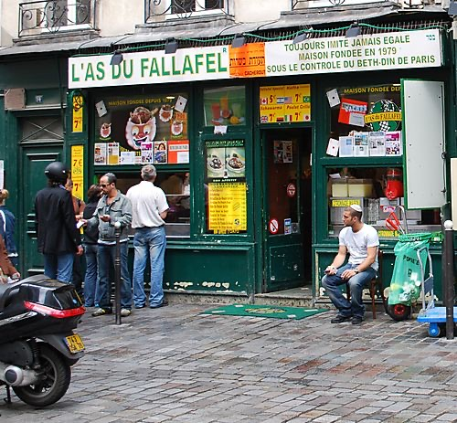 |
炸豆丸子皮塔饼（鹰嘴豆丸子 + 茄子 + 鹰嘴豆泥），外带1979 年开业的玛黑区（Le Marais）犹太街区名店，巴黎最有名的炸豆丸子。 | 休：周六全天休息（安息日），周五下午提前关门 订：不接受预订（现场排队） |
D2 10/10 周六 当天休息，换一天 |
|
| Breizh Café Le Marais 需订位 |
可丽饼 人均未核实 |
 |
荞麦咸可丽饼 + 甜可丽饼，配布列塔尼苹果酒巴黎人气精品可丽饼店，每天营业且可订位，D2 在玛黑区（Le Marais）很合适。 | 休：无固定休息日（2026 年 2 月 9–18 日曾临时休业） 订：官网在线订或电话 +33 (0)1 42 72 13 77未核实 订位链接 |
D2 10/10 周六 | |
| Miznon Marais 不用订位 |
街头小吃 €15–25（按官网菜单） |
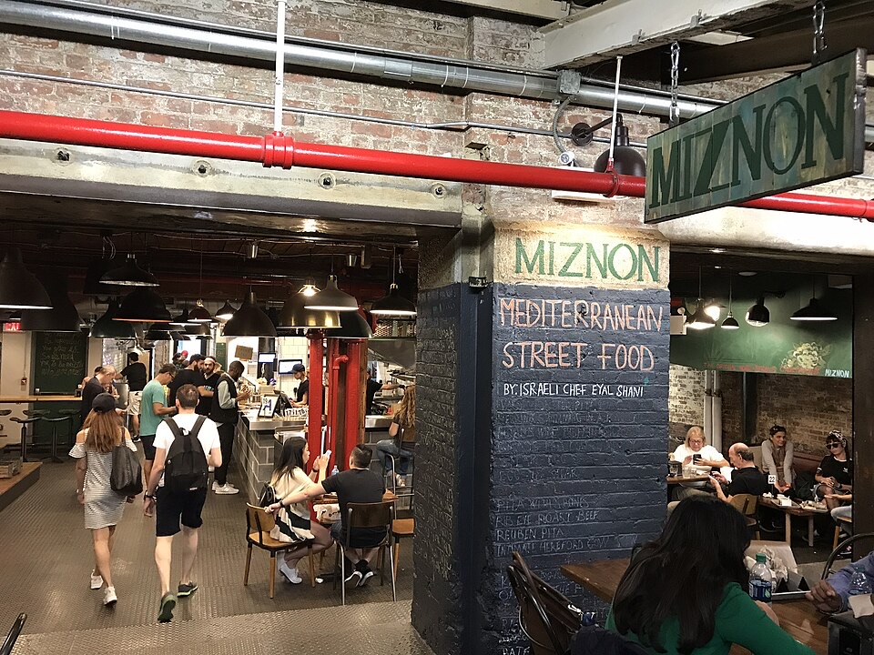 |
整颗烤花椰菜 €8、红酒炖牛肉皮塔 €13.50、炸豆丸子汉堡 €10、焦香普罗旺斯炖菜皮塔 €11以色列名厨开的皮塔快餐，和 L'As du Fallafel 在同一街区，可二选一或都尝。 | 休：周六休息 订：不接受预订（现场排队） |
D2 10/10 周六 当天休息，换一天 |
|
| Chez Alain Miam Miam 不用订位 |
市场摊位 €13–18（官网） |
- | 现做夹馅三明治（熟火腿 €13.50 外带 / €15 堂食，另有西班牙生火腿、烟熏牛肉、烟熏鳟鱼等）、荞麦咸可丽饼 €13起家于巴黎最古老的有顶市场——红孩儿市场（Marché des Enfants Rouges）的人气三明治/可丽饼摊，现主店在市场旁。 | 休：周一、周二休息（适合 D2 周六或 D3 周日） 订：不接受预订（现场排队） |
D2 10/10 周六 | |
| Boulangerie Utopie 不用订位 |
面包店 人均未核实 |
- | 传统法棍与当日维也纳酥点（具体招牌品项未核实）11 区人气独立手工面包店，标榜 100% 法国面粉。 | 休：周一休息 订：不接受预订（现场排队） |
D2 10/10 周六 | |
| Jacques Genin (Marais) 不用订位 |
巧克力 / 焦糖 人均未核实 |
- | 手工焦糖软糖、水果软糖、甘纳许与果仁夹心巧克力；泡芙、覆盆子蛋糕等甜点（官网称甜点需预订）为众多顶级酒店供应巧克力与焦糖的名家，玛黑区（Le Marais）工作坊纯手工制作。 | 休：周一休息；8 月安排未核实 订：直接到店；甜点需提前订，电话 01 45 77 29 01甜点需预订，提前量未核实 订位链接 |
D2 10/10 周六 | |
| Carette Place des Vosges 需订位待复核 |
甜点店 人均未核实 |
- | 巧克力闪电泡芙、覆盆子甜点、马德琳、千层酥（来源为多年前评论）孚日广场（Place des Vosges）拱廊下的老派茶沙龙，适合 D2 下午茶。 | 休：未核实 订：未核实未核实 |
D2 10/10 周六 | |
| Berthillon 不用订位 |
冰淇淋 人均未核实 |
|
蜂蜜牛轧糖、松子帕林内、焦糖牛轧、野草莓、特苦可可雪葩圣路易岛（Île Saint-Louis）上的冰淇淋老店，每天店内现做，D2 逛岛顺路。 | 休：周一、周二休息；法国学校假期（圣诞假除外）整店闭店——秋季万圣节假期通常在 10 月下旬至 11 月初，出发前务必查官网 订：不接受预订（现场排队） |
D2 10/10 周六 | |
| Yann Couvreur Pâtisserie (Rosiers) 不用订位 |
甜点店 €5–15（官网价格） |
 · 📷 Petr Kratochvil · CC0 · Wikimedia Commons") |
可颂 €1.90、巧克力面包 €2.20、布列塔尼焦糖黄油酥 €3.90、圣多诺黑泡芙 €7.90 起、榛子巧克力曲奇 €4.50名甜点师 Yann Couvreur 的玛黑区（Le Marais）店，维也纳酥点价格友好，玛黑区早餐之选。 | 休：官网称每天营业（门店具体安排未核实） 订：直接到店；也可官网下单、到店自取（20:00 前下单，次日 10:00 起取） 订位链接 |
D2 10/10 周六 | |
| Little Red Door 不用订位待复核 |
鸡尾酒吧 约 €13/杯（Paris by Mouth，资料年份不详） |
- | 创意鸡尾酒；调酒师可按口味做酒单外饮品玛黑区（Le Marais）知名鸡尾酒吧，适合晚餐后一杯。 | 休：未核实 订：Paris by Mouth 称无需预订，直接到店即可；官网是动态网页，现行订位政策未核实未核实 订位链接 |
D2 10/10 周六 | |
| 卢浮宫 Louvre / 皇家宫殿 Palais-Royal / 歌剧院 Opéra | Bouillon Chartier Grands Boulevards 不用订位 |
平价老式食堂 €15–25（官网：前菜 €1 起、主菜 €7 起、甜点 €2 起） |
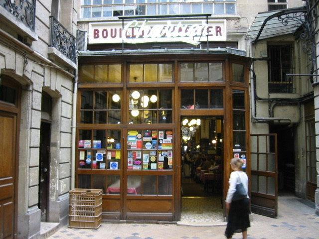 |
水煮蛋配蛋黄酱、焗蜗牛（6 或 12 只）、油封鸭、红酒炖牛肉、胡椒酱牛排配薯条；甜点朗姆酒巴巴或巧克力酱泡芙（2025-10 菜单）巴黎最出名的平价老式食堂，官网称人均不到 €20 就能吃一顿完整法式家常菜。 | 休：无（官网称全年 365 天营业） 订：不接受预订（现场排队） |
D4 10/12 周一 |
| Bouillon Julien 不用订位 |
平价老式食堂 €18–27（按官网菜单估算三道菜） |
|
水煮蛋配蛋黄酱 €4.50、焗蜗牛 6 只 €9.90、招牌同名牛肉清汤 €10.90、精选牛排配薯条 €13.60、朗姆酒巴巴 €6.901906 年开业的华丽大厅，官网称之为“新艺术风格的明珠”，价格仍是平价老式食堂水平。 | 休：无固定休息日 订：官网点预订按钮在线订（官网写明请勿用邮件订位）；也欢迎不订位直接来非必需；提前量未核实 订位链接 |
D4 10/12 周一 | |
| Le Grand Colbert 需订位 |
法式大餐馆 午市套餐两道 €30 / 三道 €40；晚市套餐三道 €65 |
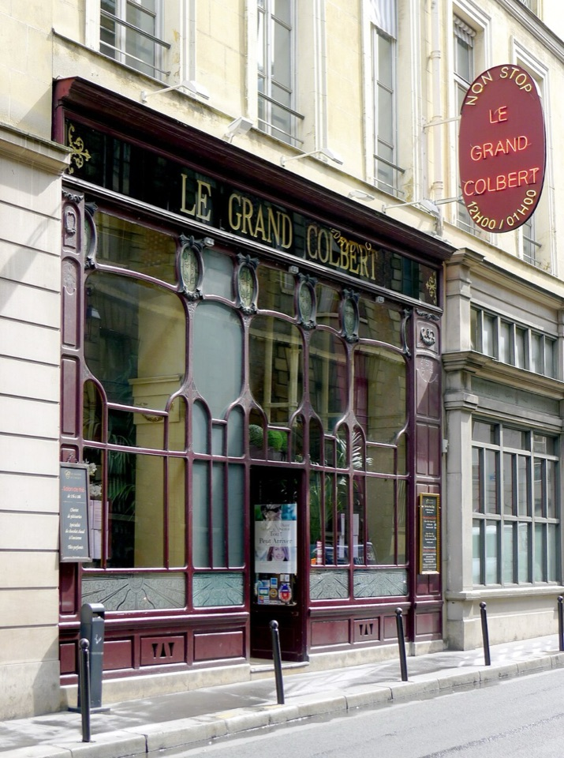 |
6 只生蚝 €26–34、焗洋葱汤 €13/15、焗蜗牛 6 只 €15、阿尔萨斯酸菜肉肠拼盘 €38/40；甜点巴黎布雷斯特泡芙 €14/15、覆盆子千层酥 €14/15（午/晚价）1900 年改为餐厅的华丽老牌法式大餐馆，每天中午到午夜营业，D4 卢浮宫（Louvre）/皇家宫殿（Palais-Royal）一带最方便。 | 休：无固定休息日 订：官网在线订或电话 01 42 86 87 88未核实 订位链接 |
D4 10/12 周一 | |
| Chez Georges 需订位 |
小酒馆 约 €78（Lebey 指南实测，含酒） |
- | 水煮蛋配蛋黄酱、腰子、鸭肉酱、羊肚菌小牛胸腺、朗姆酒巴巴1964 年起的老派巴黎小酒馆，菜式浓郁传统，D4 皇家宫殿（Palais-Royal）/歌剧院（Opéra）一带可安排。 | 休：周六、周日休息；8 月休 3 周 订：电话 +33 1 42 60 07 11（未见在线订位）未核实 |
D4 10/12 周一 | |
| Frenchie 需订位难订 · 尽早 |
新派小酒馆 €148（不含酒） |
- | 晚餐只供应 5 道菜主厨品鉴套餐 €148；对面尼罗街（6 rue du Nil）的 Frenchie Bar à Vins 可喝酒吃小盘菜名厨 Grégory Marchand 的招牌新派小酒馆，适合作为 1 次奢侈晚餐。 | 休：官网列每天营业（旧资料称仅工作日，以官网为准）；8 月未核实 订：官网 Zenchef 在线订；电话 +33 1 40 39 96 19；邮件 reservations@frenchie-restaurant.com第三方（2foodtrippers、Tripadvisor 问答）称约提前 3 周开放，官网未写放位时间；需确认订位，迟到 15 分钟可能被取消 订位链接 |
D4 10/12 周一 | |
| Le Petit Vendôme 不用订位 |
小酒馆 堂食 €20–39（Paris by Mouth）；三明治价格未核实 |
 |
外带火腿黄油长棍三明治；堂食可点牛排或法式猪肠香肠配薯条Le Figaro 称其为歌剧院（Opéra）旁最好、最脆的火腿黄油三明治，D4 歌剧院一带午餐。 | 休：周日休息 订：无需预订，直接到店 |
D4 10/12 周一 | |
| Sanukiya 不用订位 |
亚洲菜 €20–30（乌冬 €10–20） |
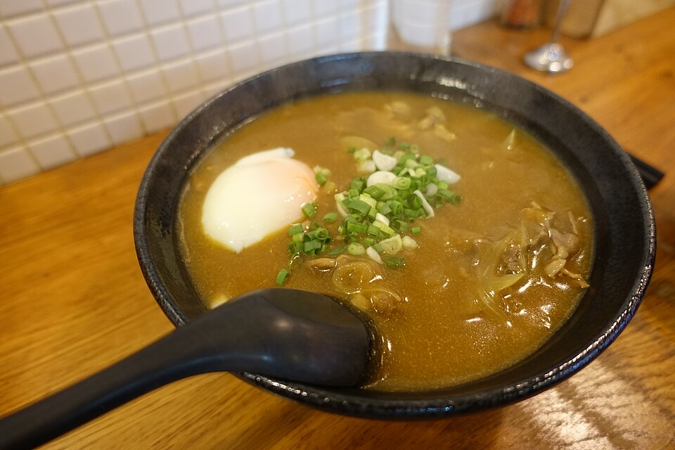 |
手打乌冬：味噌柚子猪肉汤乌冬、梅子萝卜泥冷乌冬，可加天妇罗日本街（Rue Sainte-Anne）一带的人气手打乌冬，想换口味时的可靠选择。 | 休：每月第二个周二休息（两处第三方来源一致） 订：未见预订渠道，排队入座（第三方称不订位） |
D4 10/12 周一 | |
| Higuma 不用订位 |
亚洲菜 人均未核实 |
|
黄油玉米拉面、韭菜猪肝炒豆芽、煎饺、盖饭开放厨房的日式拉面食堂，在该区算实惠，出餐快。 | 休：仅 7 月 14 日、12 月 25 日、1 月 1 日休息 订：不接受预订（官网写明不收订位） |
D4 10/12 周一 | |
| Yam'Tcha Bistrot 需订位 |
亚洲菜 前菜 €8–12、主菜 €12–20、甜点 €6–10（Gault&Millau）；Palate 2026-07 称特色菜接近 €50 |
- | 斯蒂尔顿蓝纹奶酪樱桃包子、烧卖、糯米饭、椰香玛萨拉章鱼、云吞、豆豉辣炒青口米其林一星 Yam'Tcha 于 2025-12-20 永久关闭后，主厨 Adeline Grattard 2026 年春开的法式粤菜小酒馆，由她亲自掌勺。 | 休：周日、周一休息 订：电话 +33 1 40 26 05 05（Gault&Millau 所列）；官网 yamtcha.com 的在线订位方式未核实未核实 |
D4 10/12 周一 当天休息，换一天 |
|
| Cédric Grolet Opéra 需订位 |
甜点店 €18–45（单个花朵甜点 €18；3 件装 €45） |
- | 招牌 Fleur 花朵系列（香草、芒果、草莓、榛子、柠檬，单个 €18）、Fleur Saint-Honoré（焦糖圣多诺黑泡芙）明星甜点师 Cédric Grolet 的歌剧院（Opéra）店，造型甜点极上镜。 | 休：周一、周二休息（这趟只能排 D2 周六或 D3 周日） 订：官网下单、到店自取（15:00 前下单，至少 24 小时后取）；官网另有堂食订位网上下单自取至少提前 24–48 小时 订位链接 |
D4 10/12 周一 当天休息，换一天 |
|
| Stohrer 不用订位 |
甜点店 €5–10 |
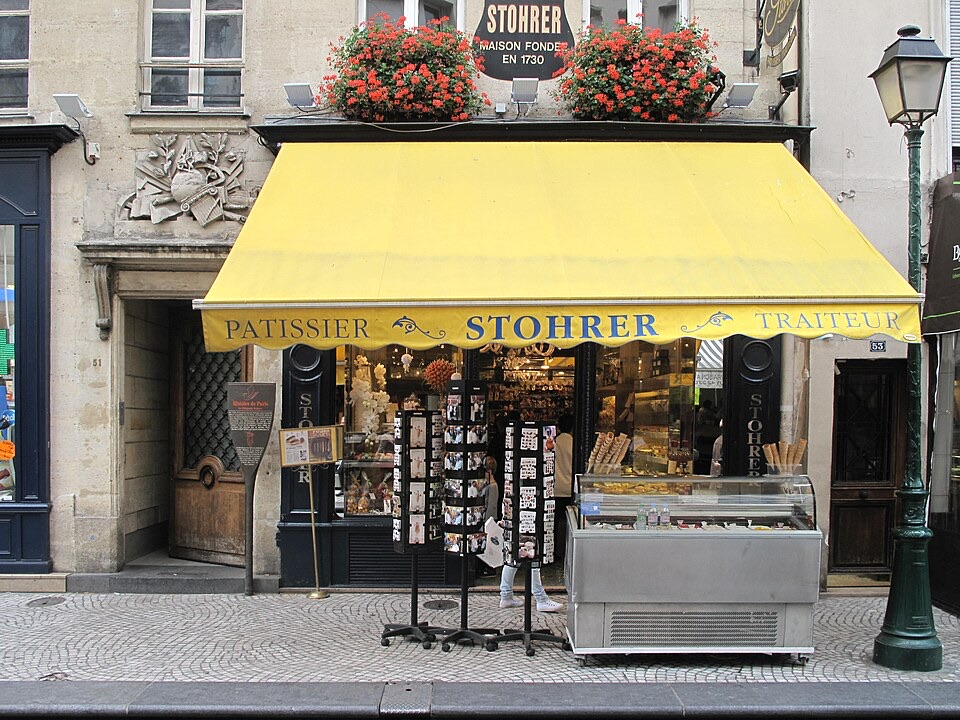 |
朗姆酒巴巴（单个 €6.10，官网称由 Nicolas Stohrer 发明）、香草或巧克力闪电泡芙 €5.80、爱之井焦糖奶油酥1730 年创立，被认为是巴黎最古老的甜点店。 | 休：无固定休息日 订：直接到店；官网可下单到店取 订位链接 |
D4 10/12 周一 | |
| Ladurée Paris Royale 不用订位 |
甜点店 人均未核实 |
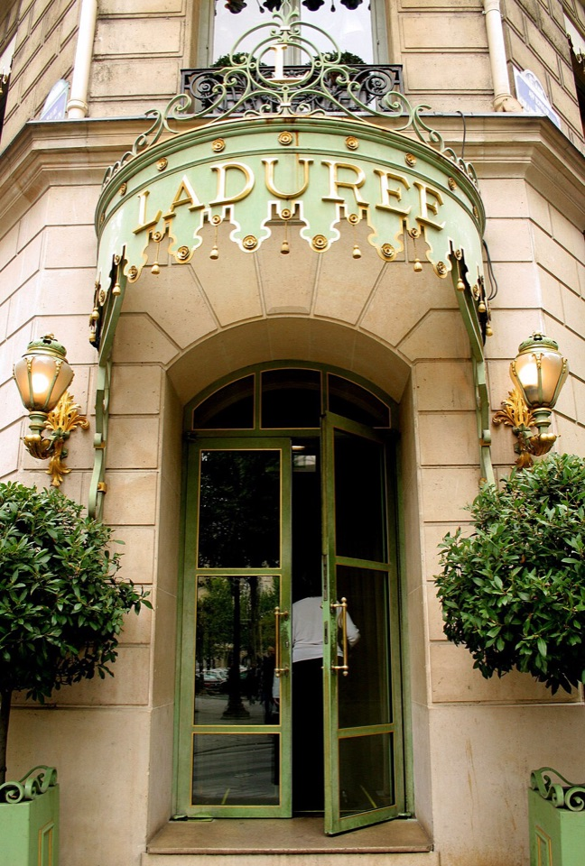 |
马卡龙（可现场定制礼盒），茶沙龙下午茶经典马卡龙老牌，皇家街（Rue Royale）这家店有餐厅和茶沙龙，D4 从杜乐丽花园（Jardin des Tuileries）走过去很近。 | 休：无固定休息日 订：茶沙龙/餐厅订位政策官网未写明（未核实）；外带直接到店未核实 订位链接 |
D4 10/12 周一 | |
| Angelina Rivoli 不用订位 |
咖啡馆 未核实（蒙布朗栗子蛋糕 €8.20） |
 |
浓稠热巧克力（L'Africain）、蒙布朗栗子蛋糕（官网 €8.20）；有早餐和早午餐官网称其为历史悠久的茶沙龙；热巧克力和蒙布朗最出名，D4 逛完杜乐丽花园（Jardin des Tuileries）正好。 | 休：无固定休息日 订：官网未见订位（未核实），到店排队入座；电话 +33 1 42 60 82 00未核实 |
D4 10/12 周一 | |
| Café Kitsuné Palais-Royal 不用订位 |
咖啡馆 人均未核实 |
- | 咖啡与轻食（具体菜单未核实）藏在皇家宫殿花园（Jardin du Palais-Royal）拱廊里的小咖啡馆，D4 在卢浮宫（Louvre）和皇家宫殿之间歇脚。 | 休：无固定休息日 订：不接受预订，直接到店 |
D4 10/12 周一 | |
| 圣日耳曼 Saint-Germain / 拉丁区 Quartier Latin / 7 区 | Le Relais de l'Entrecôte (Saint-Germain) 不用订位 |
小酒馆 €20–34（Paris by Mouth 均价） |
 · 📷 Missvain · CC BY 4.0 · Wikimedia Commons") |
唯一套餐：核桃绿沙拉 + 牛排配秘制酱汁 + 薯条（牛排和薯条会再上一轮），另点甜点只做一道菜的牛排配薯条名店，出餐快，是吃牛排薯条最省心的选择。 | 休：无固定休息日；8 月安排未核实 订：不接受预订（现场排队） |
D3 10/11 周日 |
| Le Comptoir du Relais 不用订位 |
小酒馆 午间/下午 €29–40；晚间品鉴套餐 €55–65（不含酒，2026-04 文章） |
- | 当季炖肉、时令鱼等乡土风味的新派小酒馆菜，配自然酒；晚间在独立厅供应品鉴套餐Yves Camdeborde 2004 年创办的左岸（Rive Gauche）新派小酒馆名店，现由 Bruno Doucet 主理。 | 休：无固定休息日（8 月安排未核实） 订：法式大餐馆时段不接受预订（酒店官网）；晚间品鉴套餐能否预订未核实 |
D3 10/11 周日 | |
| Brasserie Lipp 需订位 |
法式大餐馆 人均未核实 |
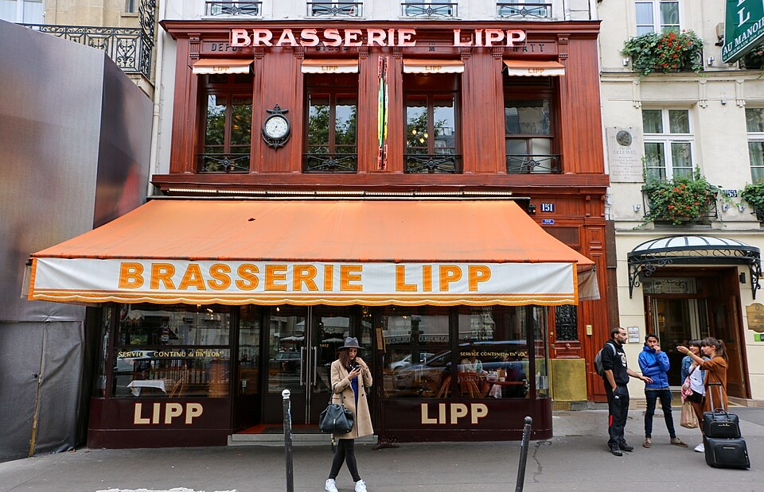 |
阿尔萨斯酸菜肉肠拼盘、黄油煎鳎鱼、法式蔬菜炖牛肉1880 年开业的左岸（Rive Gauche）老牌法式大餐馆，全天连续营业，D3 在左岸随时可吃。 | 休：无固定休息日 订：官网在线订或电话 01 45 48 53 91未核实 订位链接 |
D3 10/11 周日 | |
| L'Ami Jean 需订位 |
小酒馆 人均未核实 |
- | 分量大的小酒馆肉菜、当季野味；甜点必点传奇米布丁Stéphane Jégo 主理的热闹小酒馆，离埃菲尔铁塔（Tour Eiffel）不远，米其林指南收录。 | 休：周日、周一休息 订：官网在线预订或电话 +33 1 47 05 86 89未核实 订位链接 |
D3 10/11 周日 当天休息，换一天 |
|
| Allard 需订位 |
小酒馆 €80–120（按 2026-09 菜单：前菜 €14–36、主菜 €44–58，不含酒） |
- | 带壳焗蜗牛（6 只 €14）、Fernande Allard 式田鸡腿 €32、两人份沙朗镇（Challans）橄榄烤鸭 €110、胡椒酱牛排 €58、巧克力酱泡芙 €14（2026-09 菜单）1932 年起的老派小酒馆，现属 Alain Ducasse 集团，适合作为 1 次奢侈的经典法餐。 | 休：无每周休息日；官网公告夏季休业 8 月 12–27 日 订：Zenchef 在线订；电话 +33 1 43 26 48 23；邮件 restaurant.allard@ducasse-paris.com未核实 订位链接 |
D3 10/11 周日 | |
| Madame Brasserie 需订位 |
法式大餐馆 午 €70.80–140.80；晚 €109.80–261.80（按座位区与套餐，含电梯票） |
- | 季节菜单（以本地蔬菜为主，有素食/纯素选项）；周日有早午餐在埃菲尔铁塔（Tour Eiffel）1 楼吃饭，订位含上 1 楼的电梯票，是 D4 周一晚铁塔行程里比 Jules Verne 便宜的景观餐。 | 休：无固定休息日 订：官网在线订或电话；持订位到 1 号入口，再到餐厅接待处领电梯票未核实；第三方称可提前 3 天免费改期 订位链接 |
D4 10/12 周一（生日前夜） | |
| Les Ombres 需订位 |
高级餐厅 午 €48–65；晚 €98–118（不含酒） |
- | 午餐两道 €48 / 三道 €65；晚餐三道 €98 / 四道 €118（不含酒）让·努维尔设计的玻璃屋顶餐厅正对埃菲尔铁塔（Tour Eiffel），晚上能看到铁塔灯光映进餐厅。 | 休：无固定休息日 订：OpenTable 在线订；电话 +33 (0)1 47 53 68 00未核实 订位链接 |
D4 10/12 周一（生日前夜） | |
| Café de l'Homme 需订位 |
法式大餐馆 未核实（官网露台景观体验另加 €60/人） |
- | 主厨当季法餐；可加购露台前排看塔桌位特罗卡德罗（Trocadéro）露台正对埃菲尔铁塔（Tour Eiffel），D4 周一晚看铁塔时吃饭或喝一杯。 | 休：无固定休息日（官网未列） 订：官网在线订（Alveole 系统）或电话 01 44 05 30 15未核实 订位链接 |
D4 10/12 周一（生日前夜） | |
| Le Jules Verne 需订位难订 · 尽早 |
高级餐厅 €295–330 起（不含酒） |
- | 主厨 Frédéric Anton 的品鉴套餐：5 道 €295 起、7 道 €330 起（午晚同价）米其林二星，专属电梯直达埃菲尔铁塔（Tour Eiffel）2 楼，是全程最贵的奢侈一餐。 | 休：无固定休息日（官网另列个别节日闭店） 订：官网在线订；电话 +33 (0)1 72 76 16 61（每日 9:00–22:00）；邮件 reservation.jv@lejulesverne-paris.com；需付订金第三方（2026-06 文章）称提前 90 天开放，日落时段几小时内订满；提前 48 小时以上取消可全额退订金 订位链接 |
D4 10/12 周一（生日前夜） | |
| Poilâne (Cherche-Midi) 不用订位 |
面包店 人均未核实 |
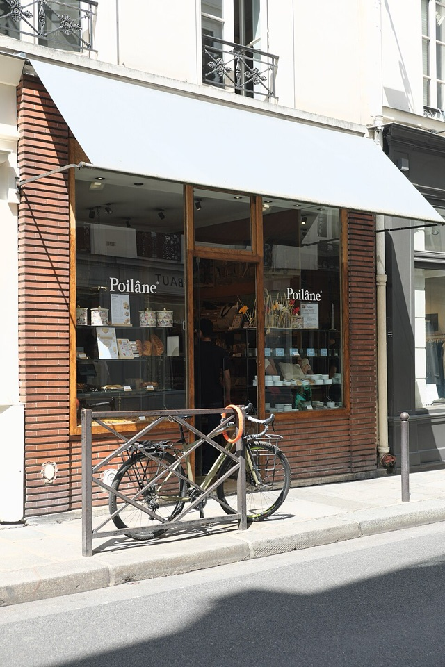 |
柴火窑烤的酸种大圆面包（可买小份），以及饼干和烘焙点心1932 年在此创立的家族面包店本店，Poilâne 酸种面包的发源地。 | 休：周日休息（D3 周日在左岸正好不开） 订：不接受预订，直接到店 |
D3 10/11 周日 当天休息，换一天 |
|
| Pierre Hermé Bonaparte 不用订位 |
甜点店 人均未核实 |
 |
马卡龙（18 种常设或限定口味）、Ispahan（玫瑰荔枝覆盆子蛋糕）、Montebello（开心果草莓蛋糕）巴黎顶级马卡龙品牌的左岸（Rive Gauche）店，D3 顺路。 | 休：无固定休息日 订：直接到店；也可官网下单、到店自取 订位链接 |
D3 10/11 周日 | |
| Café de Flore 需订位 |
咖啡馆 €15–30（按官网价目） |
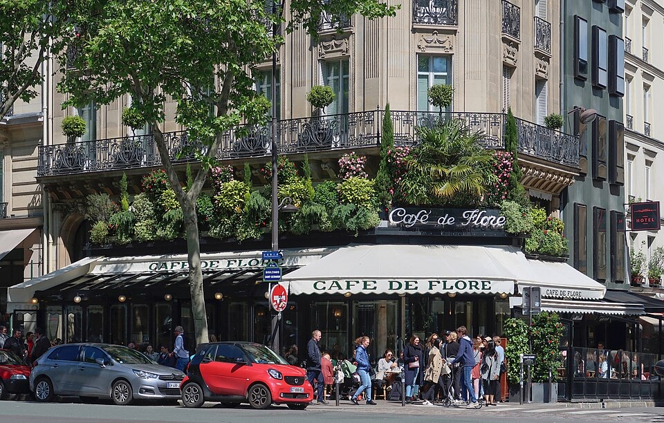 |
Flore 特制热巧克力 €10（加鲜奶油 €12）、黄油可颂 €4、名甜点师千层酥 €15、威尔士奶酪吐司 €201887 年起的左岸（Rive Gauche）文人咖啡馆，D3 左岸打卡，热巧克力和千层酥都值得点。 | 休：未核实 订：未见订位渠道（未核实） |
D3 10/11 周日 | |
| Les Deux Magots 需订位 |
咖啡馆 人均未核实 |
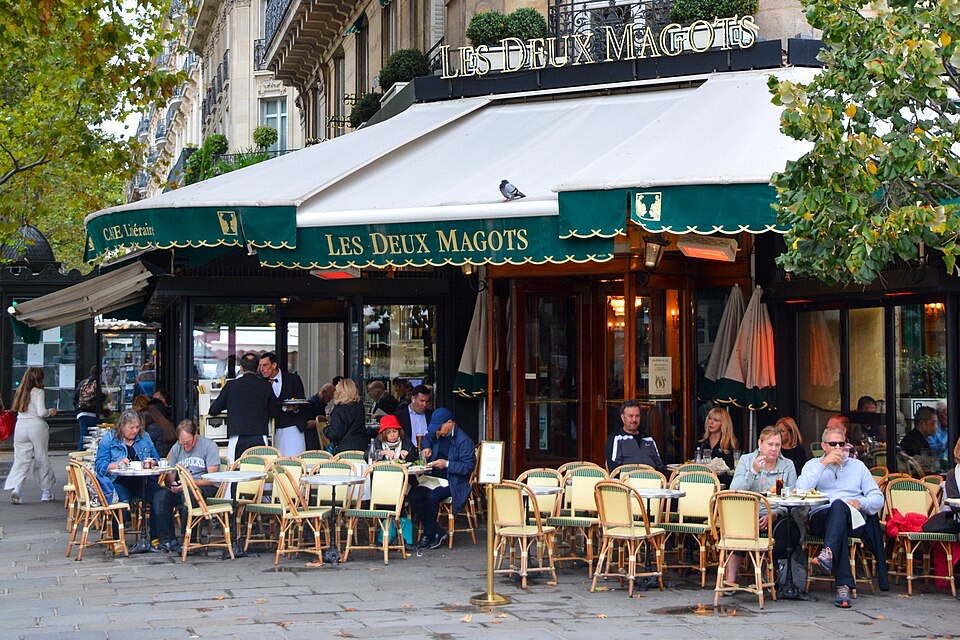 |
招牌热巧克力、反烤苹果挞；周末及节假日有早午餐与 Café de Flore 比邻的传奇咖啡馆，营业到深夜，可在线订位。 | 休：无固定休息日 订：官网在线订；电话 +33 1 45 48 55 25未核实 订位链接 |
D3 10/11 周日 | |
| Coutume Babylone 不用订位 |
咖啡馆 人均未核实 |
- | 自家烘焙精品咖啡（意式与手冲）、当季早午餐Coutume 在 7 区的咖啡馆兼早午餐店，D3 左岸（Rive Gauche）/7 区顺路。 | 休：无固定休息日 订：直接到店（官网未提供订位） |
D3 10/11 周日 | |
| Fromagerie Laurent Dubois (Maubert) 不用订位 |
奶酪店 人均未核实 |
 · 📷 Myrabella · CC BY-SA 4.0 · Wikimedia Commons") |
陈年孔泰奶酪、比利牛斯羊奶酪、小农山羊奶酪；自创款如榅桲酱夹洛克福蓝纹奶酪法国最佳手工艺人（MOF）奶酪熟成师 Laurent Dubois 的店，D3 在拉丁区（Quartier Latin）顺路买奶酪。 | 休：周一休息；周日仅上午 订：不接受预订，直接到店 |
D3 10/11 周日 | |
| Barthélémy 不用订位待复核 |
奶酪店 人均未核实 |
- | 熟成 18 个月以上的 Ossau-Iraty 羊奶酪、招牌枫丹白露奶油奶酪左岸（Rive Gauche）老牌奶酪店，熟成奶酪品质高，店员以严肃著称。 | 休：周日、周一休息（Paris by Mouth，2026 年未核实） 订：不接受预订，直接到店 |
D3 10/11 周日 当天休息，换一天 |
|
| 蒙马特 Montmartre / 皮加勒 Pigalle / 南皮加勒 SoPi | Bouillon Pigalle 不用订位 |
平价老式食堂 €20–30（按 2026 夏季菜单估算三道菜加一杯酒） |
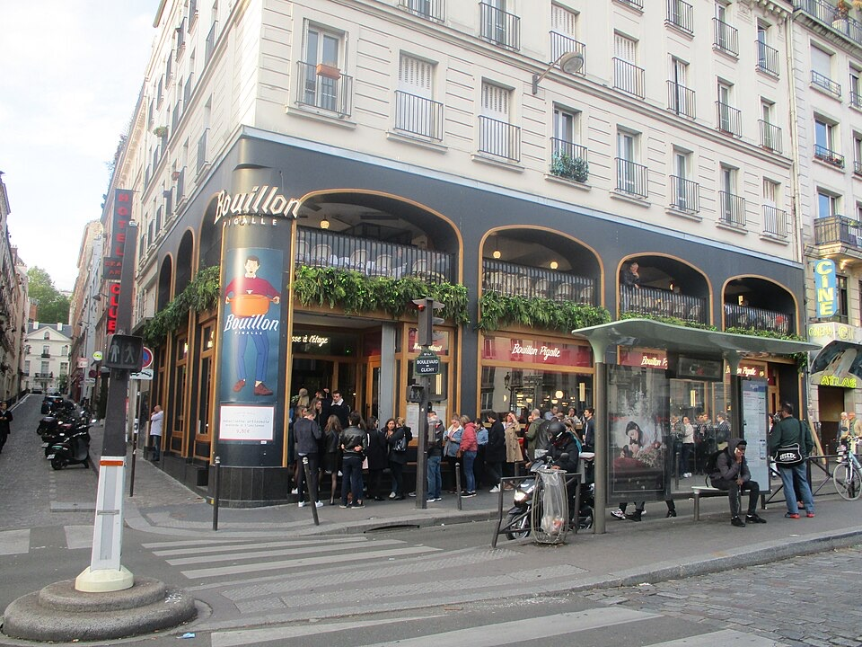 |
水煮蛋配蛋黄酱 €2.50、焗洋葱汤 €3.90、焗蜗牛 6 只 €8.40、红酒炖牛肉 €12.20、油封鸭配薯条 €12.80、胡椒酱牛排薯条 €12.60、巧克力酱泡芙 €4.80（2026 夏季菜单）现代版的平价老式食堂，经典菜几乎全覆盖且极便宜，适合逛完蒙马特（Montmartre）/皮加勒（Pigalle）顺路晚餐。 | 休：无固定休息日 订：官网在线订；也可电话 01 42 59 69 31 或邮件 reservation@bouillonlesite.com；不订位可排队未核实（官网可在线订，建议晚餐提前订） 订位链接 |
巴黎备选 |
| Sébastien Gaudard – Pâtisserie des Martyrs 不用订位 |
甜点店 人均未核实 |
- | 蒙布朗、蛋白霜奶油球、柠檬挞、圣特罗佩奶油布里欧、波兰式蛋白霜布里欧、南锡马卡龙殉道者街（Rue des Martyrs）上的传统法式甜点店，正好在南皮加勒（SoPi）路线上。 | 休：无固定休息日 订：直接到店；也可官网下单、到店自取 订位链接 |
巴黎备选 | |
| Mamiche (Condorcet) 不用订位 |
面包店 人均未核实 |
- | 每日手揉酸种面包、可颂、巧克力面包、葡萄干卷，以及招牌三明治南皮加勒（SoPi）人气手工面包店，蒙马特（Montmartre）/南皮加勒路线上的早餐或点心。 | 休：未核实 订：不接受预订，直接到店 |
巴黎备选 | |
| KB Coffee Roasters (KB CaféShop Pigalle) 不用订位待复核 |
咖啡馆 人均未核实 |
- | 自家烘焙精品咖啡（手冲与意式，哥伦比亚、埃塞俄比亚等单品豆）、自制甜点南皮加勒（SoPi）的自家烘焙精品咖啡店，在蒙马特（Montmartre）/南皮加勒路线上。 | 休：未核实 订：不接受预订，直接到店 |
巴黎备选 | |
| 凡尔赛 Versailles | ore – Ducasse au château de Versailles 需订位 |
法式大餐馆 含宫殿门票+直通入场套餐：早餐 €57（秋冬）/ €67（春夏）；午餐 €90（秋冬）/ €100（春夏）；单点价格未核实 |
- | 招牌 Le Louis XIV、法式肉酱冻或烤鸡等午餐，火腿奶酪热三明治等简餐；下午茶甜点与冰淇淋Alain Ducasse 开在凡尔赛宫（Château de Versailles）门口的餐厅，去凡尔赛参观前早餐或中途午餐最顺。 | 休：周一休息（同宫殿闭馆日） 订：Zenchef 在线订；电话 +33 (0)1 30 84 12 96；邮件 ore@ducasse-chateauversailles.com未核实 订位链接 |
巴黎备选 |
| Angelina – Château de Versailles 需订位 |
咖啡馆 人均未核实 |
- | 热巧克力、栗子蒙布朗等甜点与简餐（凡尔赛 Versailles 店菜单与价格未核实）宫殿内的 Angelina 茶沙龙，参观国王套房后歇脚最方便。 | 休：周一休息 订：电话 +33 (0)1 39 20 08 32（团体可订包间）；散客订位政策未核实未核实 |
巴黎备选 | |
| La Flottille 需订位 |
法式大餐馆 人均未核实 |
- | 1900 年代风格餐厅里的传统法式菜，有早餐和儿童餐；旁边季节性营业的 La Guinguette（4–10 月）卖荞麦咸可丽饼、可丽饼和冰淇淋大运河（Grand Canal）边的传统法餐，逛完花园不用走回宫殿就能吃午饭。 | 休：无固定休息日 订：官网在线订或电话 +33 (0)1 39 51 41 58未核实 订位链接 |
巴黎备选 | |
| Ducasse au Château de Versailles – Le Grand Contrôle 需订位难订 · 尽早 |
高级餐厅 人均未核实 |
- | 阿兰·杜卡斯设计的宫廷主题餐：王室早餐、早午餐、午宴、玛丽·安托瓦内特下午茶、王室晚宴宫殿里的 Airelles 酒店餐厅，也接待日间访客，是凡尔赛（Versailles）最奢华的一餐。 | 休：未核实 订：SevenRooms 在线订；电话 +33 (0)1 85 36 05 77；邮件 restaurant.legrandcontrole@airelles.com（需预订）未核实 订位链接 |
巴黎备选 | |
| 运河 / 11 区 / 东边（机动） | Le Train Bleu 需订位 |
法式大餐馆 €57–120（套餐 €57 / €78 / €120 三档，不含酒） |
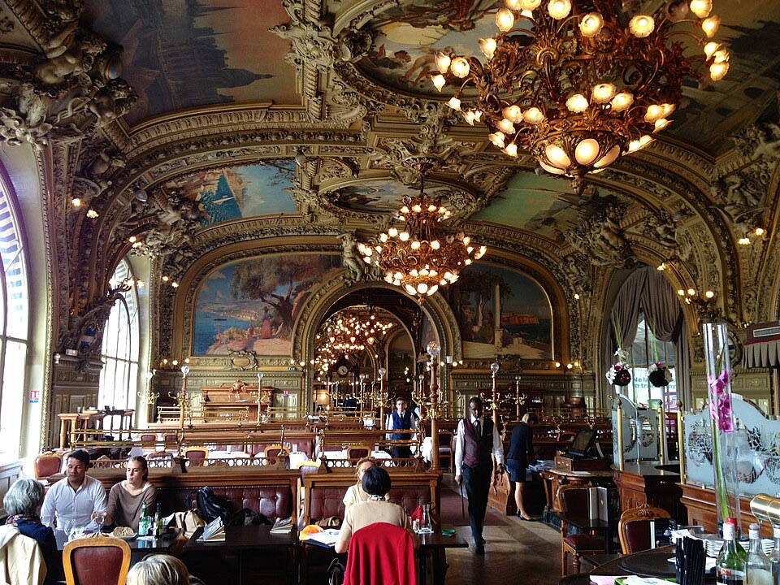 |
旅人套餐 €57（餐车现切烤羊腿 + 焦糖千层酥，45 分钟上完）；单点烤羊腿 €47、朗姆酒巴巴 €19、橙酒火焰可丽饼 €21巴黎里昂站（Gare de Lyon）楼上的传奇餐厅；若从里昂站坐 TGV 去南法，可顺路安排一顿有仪式感的饭。 | 休：无固定休息日 订：官网在线订或 TheFork；电话 +33 1 43 43 09 06；邮件 reservation.trainbleu@ssp.fr（官网提醒只认官网与 TheFork，谨防假网站）未核实；官网建议午餐晚餐都预订 订位链接 |
机动 |
| Bistrot Paul Bert 需订位难订 · 尽早 |
小酒馆 约 €85–90（Paris by Mouth 读者记录：两人含酒约 €175） |
- | 胡椒酱牛排配薯条、柑曼怡橙酒舒芙蕾、反烤苹果挞巴黎经典小酒馆的教科书，胡椒牛排和舒芙蕾是招牌。 | 休：周日、周一休息；8 月：Paris by Mouth 称历来整月休业，需电话确认 订：仅电话预订 +33 1 43 72 24 01（官网明确只接受电话）放位规则未核实；建议出发前就电话订 |
机动 | |
| Septime 需订位难订 · 尽早 |
新派小酒馆 午 €85 / 晚 €135（不含酒） |
- | 只有主厨品鉴套餐：午餐 5 道 €85、晚餐 7 道 €135；配酒午 €60 / 晚 €75巴黎最难订的新派小酒馆之一，季节食材路线的代表。 | 休：周六、周日休息 订：官网在线订（Zenchef）每天 10:00（巴黎时间）放出 21 天后的座位（即提前 21 天开订）；晚餐开放后很快订满，午餐相对容易 订位链接 |
机动 | |
| Le Servan 需订位 |
新派小酒馆 €41–69（Le Fooding 单点区间） |
- | 法式底子加亚洲风味的季节菜；Le Fooding 提到烟熏辣椒黄油布里欧修、菠菜蛋黄饺、烤五花肉（菜单常换）姐妹俩经营的新派小酒馆名店，米其林指南收录。 | 休：周日休息；周六无午餐 订：官网 Zenchef 在线订；电话 01 55 28 51 82未核实；晚餐建议尽早订 订位链接 |
机动 | |
| Mokonuts 需订位难订 · 尽早 |
新派小酒馆 €40–60（按官网价格区间估算，不含酒） |
- | 中东与日式融合的小份午餐菜单：前菜 €8–16、主菜 €24–32、甜点 €11 起两位主厨开的约 20 座小馆，工作日一顿精致午餐。 | 休：周六、周日及法定假日休息，无晚餐 订：必须预订：官网在线、电话 +33 (0)9 80 81 82 85 或邮件 reservations@mokonuts.com未核实（官网只写“必须预订”） 订位链接 |
机动 | |
| Le Baratin 需订位 |
新派小酒馆 午市套餐 €20；晚餐单点 €38–56（Le Fooding） |
- | 主厨拿手的内脏与禽肉料理，如雪利醋烤沙朗镇（Challans）鸽子、酸豆小牛胸腺；午市套餐 €201987 年开业、被称为新派小酒馆教母的美丽城（Belleville）老店，厨师同行朝圣地。 | 休：周日、周一休息 订：电话 +33 1 43 49 39 70（未找到官网）未核实 |
机动 | |
| Pho Bom 不用订位 |
亚洲菜 €15–20 |
- | 特别牛肉河粉、河内烤肉米线、越南煎饼、蒸粉卷、炸春卷13 区唐人街人气越南馆，汤底受好评，在 Sortiraparis 2026-02 更新的 13 区越南馆榜单中被重点推荐。 | 休：无固定休息日（2026 年是否有变未核实） 订：不接受预订（现场排队） |
机动 | |
| Du Pain et des Idées 不用订位 |
面包店 人均未核实 |
- | 招牌朋友面包（pain des amis）、螺旋酥（开心果巧克力、柠檬杏仁）、苹果酥2002 年创办的名店，面包和螺旋酥是面包控必去。 | 休：周六、周日休息（这趟巴黎只有 D4 周一能去） 订：不接受预订（现场排队） |
机动 | |
| Ten Belles 不用订位 |
咖啡馆 人均未核实 |
- | 自家拼配豆的意式咖啡、酸种面包、酥点、三明治圣马丁运河（Canal Saint-Martin）边的精品咖啡加酸种面包店，机动日逛运河时喝咖啡。 | 休：无固定休息日（第三方） 订：不接受预订（现场排队） |
机动 | |
| Holybelly 不用订位 |
咖啡馆 人均未核实 |
- | 招牌松饼、鸡蛋料理配各式配菜、每日特餐以松饼和鸡蛋料理出名的人气早午餐店，每天营业。 | 休：2026 年休业：复活节 4/13–21、暑假 8/3–19、圣诞 12/21–27；另 5/1、7/14、11/11 等法定假日休息（若行程含 11/11 需注意） 订：不接受预订，现场显示等位时间 |
机动 | |
| Le Baron Rouge 不用订位 |
葡萄酒吧 人均未核实 |
- | 平价杯装葡萄酒配小食；9 月中至 4 月底的周六、周日有生蚝阿里格尔市场（Marché d'Aligre）旁的老派酒吧，周末上午喝白葡萄酒配生蚝是巴黎街坊式体验。 | 休：无全天休息日；周一仅晚间、周日仅白天 订：不接受预订（官网） |
机动 | |
| Septime La Cave 不用订位 |
葡萄酒吧 小盘 €5.50–12；酒价未核实 |
 |
自然酒（堂饮或外带）配火腿、蔬菜小盘与奶酪（小盘 €5.50–12）Septime 团队的自然酒小酒窖，订不到 Septime 时的平替。 | 休：无固定休息日 订：官网只写堂饮与外带，未提供订位（按不接受预订处理） |
机动 | |
| 其他 | Fournil Didot 不用订位 |
面包店 人均未核实 |
- | 2026 年巴黎最佳传统法棍（baguette de tradition）店里的面包师于 2026-02-26 在 143 位参赛者中夺得第 33 届巴黎最佳传统法棍大赛冠军。 | 休：周日休息 订：不接受预订（现场排队） |
机动 |
蔚蓝海岸 Côte d'Azur（尼斯 / 埃兹 Èze / 摩纳哥 Monaco / 自由城 Villefranche-sur-Mer）
| 区域 | 餐厅 | 类型 / 人均 | 图片 | 点什么 · 为什么 | 休息 / 预约 | 适合安排 |
|---|---|---|---|---|---|---|
| 尼斯老城 Vieux Nice / 港口 | Chez Pipo 不用订位 |
鹰嘴豆煎饼 / 尼斯小吃 鹰嘴豆煎饼一份约 €4（NissActu 2026-05）；一餐约 €10–20（未核实） |
- | 现烤鹰嘴豆煎饼、洋葱凤尾鱼挞、甜菜挞，配本地桃红葡萄酒1933 年开业的鹰嘴豆煎饼老店，本地人公认最好的之一；长桌共食，气氛热闹。 | 休：周一、周二（二手来源称 7–8 月周二也开） 订：不接受订位（团体除外），现场排队 订位链接 |
D5–D9 尼斯（看休息日） |
| Chez Thérésa 不用订位 |
鹰嘴豆煎饼摊（集市） €3–8 |
 |
鹰嘴豆煎饼（约 €3）、洋葱挞（约 €2.50）、蔬菜煎蛋饼（约 €3.50）、尼斯三明治（约 €4）尼斯老牌鹰嘴豆煎饼摊：在德鲁瓦特街（rue Droite）用烤炉现烤，再运到萨莱雅市集（Cours Saleya）卖，边逛集市边吃最有氛围。 | 休：未核实；周一萨莱雅市集（Cours Saleya）是古董市，摊位是否营业未核实 订：不需要，排队购买 |
D5–D9 尼斯（看休息日） | |
| Lou Pilha Leva 不用订位 |
尼斯小吃（柜台点餐） 鹰嘴豆煎饼约 €3.50（NissActu 2026-05）；小吃 + 饮料约 €10 |
- | 鹰嘴豆煎饼、尼斯酿蔬菜、炸西葫芦花、尼斯三明治、洋葱挞尼斯老城（Vieux Nice）中心的平价小吃店，全天不间断营业；柜台点单后坐户外长凳，适合刚到尼斯时快速吃一顿。 | 休：未核实（多数来源称每天营业） 订：不接受，柜台点餐 |
D5–D9 尼斯（看休息日） | |
| La Merenda 需订位难订 · 尽早 |
尼斯传统菜小馆 约 €40–60（未核实） |
- | 青酱意面、炸西葫芦花、酿沙丁鱼、尼斯红酒炖牛肉、尼斯风味炖鳕鱼干、甜菜挞Negresco 酒店前米其林二星主厨主理，只做地道尼斯家常菜；空间小、气氛好。 | 休：周六、周日（可能还有周一） 订：无电话。地区旅游局：只接受到店、Facebook、Instagram 或官网 lamerenda.net 预订；官网现有在线订位按钮（SevenRooms）。付款：只收现金或支票，不收银行卡建议提前 1–2 周在官网订；订不到就前一天到店问 订位链接 |
D5–D9 尼斯（看休息日） | |
| Chez Acchiardo 需订位 |
尼斯传统家庭餐馆 约 €25–40（未核实） |
- | 尼斯红酒炖牛肉、炖牛肉馄饨、罗勒蒜泥蔬菜汤、酿蔬菜、尼斯风味牛肚1927 年起同一家族经营的尼斯老城（Vieux Nice）餐馆，价格亲民，吃得到家常尼斯味。 | 休：周六、周日（多家二手来源；地区旅游局页面只写 2026 全年营业，未列营业日） 订：电话订位 +33 4 93 85 51 16；地区旅游局页面列出可刷银行卡、现金和餐券（旧攻略说只收现金，可能已过时）提前几天电话订 |
D5–D9 尼斯（看休息日） | |
| Bistrot d'Antoine 需订位难订 · 尽早 |
法式小酒馆（市场料理） 约 €30–50（未核实） |
- | 按黑板时令菜点，米其林介绍提到：老式炖猪肉配奶油玉米糊、手切生牛肉挞、烤小牛腰配芥末酱尼斯老城（Vieux Nice）里口碑很好的小酒馆，菜量足、性价比高。 | 休：周日、周一 订：只接受电话订位 +33 4 93 85 29 57（无网上订位）建议提前一周以上电话订（常客满） 订位链接 |
D5–D9 尼斯（看休息日） | |
| Olive & Artichaut 需订位 |
尼斯/地中海现代小馆 约 €35–55（未核实） |
- | 跟着当日菜单点，用本地小农的时令蔬菜、海鲜和山区食材（菜品随季节变）开放式厨房小馆，主打本地生产者食材，出品精致但价格友好。 | 休：周日、周一（米其林摘要写周一、周二休，以官网为准） 订：官网在线订位（Guestonline）或电话 +33 4 89 14 97 51提前 3–7 天在线订 订位链接 |
D5–D9 尼斯（看休息日） | |
| Fenocchio 不用订位 |
冰淇淋 约 €4.50（两球，二手来源） |
- | 本地特色口味：柠檬罗勒、薰衣草、紫罗兰、橙花、番茄罗勒、甜菜挞味1966 年起的家族冰淇淋店，90 多种口味，在大教堂前的罗塞蒂广场（Place Rossetti）边吃最有尼斯味。 | 休：据二手来源每年约 11/15–2/15 冬季歇业（未在官网核实） 订：无需 订位链接 |
D5–D9 尼斯（看休息日） | |
| Maison Auer 不用订位 |
糖果/蜜饯老店（伴手礼） 按重量买，约 €10–40（未核实） |
- | 招牌蜜饯水果、公主杏仁（amandes princesse）、水果软糖、巧克力榛子1820 年创立的糖果巧克力老店，古典店面本身就好看，买伴手礼首选。 | 休：周日（周一是否营业两说） 订：无需；可刷卡（含 American Express） 订位链接 |
D5–D9 尼斯（看休息日） | |
| La Petite Maison 需订位难订 · 尽早 |
尼斯/地中海菜（热门名流餐厅） 约 €100 以上（二手来源） |
- | 尼斯风味前菜（酿蔬菜、洋葱挞等）和烤整鱼（具体菜单未核实）尼斯名流餐厅，也是伦敦、迪拜 LPM 的原型；氛围热闹，菜做得简单讲究。 | 休：未核实（地区旅游局写每天营业） 订：电话订位 04 93 92 59 59，几乎必须预订建议提前 2–4 周 |
D5–D9 尼斯（看休息日） | |
| 尼斯新城 | Le Canon 需订位 |
自然酒小酒馆（市场料理） 约 €40–60（未核实） |
- | 黑板上的当日菜（本地、多为有机食材），配 100% 自然酒本地人很爱的自然酒小酒馆，菜单每天换，入选米其林指南 2026。 | 休：周六、周日 订：电话订位 04 93 79 09 24提前几天电话订 |
D6 10/14 周三 |
| 埃兹 Èze / 摩纳哥 Monaco / 芒通 Menton | Les Remparts – Château de la Chèvre d'Or 需订位 |
新派小酒馆风格的地中海菜，悬崖露台 人均未核实 |
- | 普罗旺斯/地中海时令单点菜（具体菜单与价格未核实）两星 La Chèvre d'Or 旗下的轻松版餐厅，悬崖露台俯瞰地中海，入选 2026 年米其林指南。更高端的备选：Château Eza（米其林一星，单点法式/地中海菜，电话 +33 4 93 41 12 24，午餐价格未核实）。 | 休：未核实（冬季是否歇业官网未写） 订：官网在线订位或电话 +33 4 92 10 66 66官网建议 5–9 月提前 2–4 周，7–8 月提前 1 个月 订位链接 |
D7 10/15 周四 |
| La Montgolfière – Henri Geraci 需订位待复核 |
地中海/融合菜小馆 午餐约 €30–50；晚餐 €59–70 起 |
- | 午餐黑板菜单：前菜 €13–16、主菜 €16–31、甜点 €8；晚餐 3 道 €59 / 4 道 €70（价格来自搜索摘要，未在官网页面核实）亲王宫（Palais Princier）附近的小馆，主厨在客人面前掌勺，在摩纳哥（Monaco）算价格合理（官网未称获米其林推荐，部分第三方网站称有）。便宜备选：孔达米纳美食市集（Marché de la Condamine），每天 7:00–15:30，周二至周六晚 18:00–21:30 也开；Chez Roger 的鹰嘴豆煎饼约 €3（二手来源）。 | 休：周三、周日 订：电话 +377 97 98 61 59 或 +33 6 80 86 86 25；官网联系表单提前几天电话订 订位链接 |
D7 10/15 周四 | |
| Mirazur 需订位难订 · 尽早 |
米其林三星（奢华体验） 9 道菜招牌套餐 €450/人（官网）；柑橘季 6 道菜套餐 €380/人（仅 2026-02-11 至 03-15）；酒水另计 |
- | 只提供主厨套餐，主题随季节变化，无单点蔚蓝海岸（Côte d'Azur）最有名的三星餐厅，花园自种蔬果、面朝大海，适合作为这趟法国之行的大餐。 | 休：周一（年度休业期未核实） 订：官网在线订位，需登记信用卡；到访前 15 天以上可免费取消，逾期取消或未到每人收 €450每月第一个周一 9:00（巴黎时间）开放约 4 个月后那个月的订位：2027 年 1 月于 2026-09-07 开放，2 月于 2026-10-05 开放；订阅官网邮件通讯可提前抢 订位链接 |
D7 10/15 周四 | |
| 滨海自由城 Villefranche-sur-Mer | La Mère Germaine 需订位 |
海鲜（港口老店） 人均未核实 |
- | 当日鲜鱼和海鲜（地中海风味，具体菜单与价格未核实）1938 年开业的港口海鲜老店，科克托曾是常客，露台正对海港，入选 2026 年米其林指南。 | 休：周一、周二 订：官网 Zenchef 在线订位，或电话 +33 4 93 01 71 39露台位建议提前约 1 周 订位链接 |
D6 10/14 周三 |
普罗旺斯 Provence（备选 B）
| 区域 | 餐厅 | 类型 / 人均 | 图片 | 点什么 · 为什么 | 休息 / 预约 | 适合安排 |
|---|---|---|---|---|---|---|
| 吕贝隆 Luberon | Solelh 需订位 |
米其林必比登推荐的现代小酒馆（备长炭烧烤） 午市套餐€26起；晚餐单点价格未核实 |
- | 午市套餐；备长炭烤熟成牛肋排、鱿鱼、伊比利亚猪肩胛肉2026年米其林必比登推荐，经典小酒馆菜的现代做法加日式备长炭烧烤，性价比高，正好接周四/周日集市。 | 休：周二、周三（淡季周一也休）；年度休业未核实 订：官网 TheFork 在线订位；6人以上发邮件集市日午餐提前1–2周 订位链接 |
B6 10/15 周四 |
| Le Mas – Alexis Osmont 需订位 |
米其林指南推荐（农舍庭院餐厅） 约€60–70（米其林估价）；单点€20起 |
- | 按当季市场单点：芦笋、鸡油菌、洋蓟等沃克吕兹（Vaucluse）时令菜19世纪农舍，带花园和树荫露台，入选2026年米其林指南；主厨把诺曼底风格与普罗旺斯时令食材结合，适合住吕贝隆（Luberon）时的晚餐。 | 休：周二、周三；不供应午餐 订：订位电话/线上渠道未核实；可查米其林页面或致电戈尔德（Gordes）旅游局 04 90 72 02 75旺季提前1–2周 订位链接 |
B6 10/15 周四 | |
| Omma 需订位 |
米其林指南推荐（景观酒店餐厅） 午市€36；成人套餐€44；品鉴菜单€55–62 |
- | 当季短菜单：脆炸茄子配中东烤茄子泥、旺图山（Ventoux）烤猪肉配巴斯克炖甜椒、南瓜甜点（随季更换）露台正对赭石悬崖，入选2026年米其林指南；小酒馆式普罗旺斯菜，看完红土就在村里吃。 | 休：旅游局写周三休；米其林资料写淡季周一、周二休（来源不一）；10月初至5月底可能不营业，出发前确认 订：电话 +33 4 90 05 60 13露台位提前1–2周 |
B6 10/15 周四 | |
| Le Moulin – Beaumier 需订位 |
现代普罗旺斯菜（酒店餐厅） 前菜€9–22、主菜€12–28（约€35–55/人） |
- | 炭烤、炉灶做的普罗旺斯经典菜，加入外来香料的现代版周五卢尔马兰（Lourmarin）集市后就近午餐；2026年营业期内每天开，餐位充足、不必担心周中休息。 | 休：10/27起至次年3月（营业期外） 订：官网在线、电话 +33 4 89 81 40 77、邮件 lemoulin@beaumier.com集市日午餐提前几天 订位链接 |
B6 10/15 周四 | |
| 艾克斯 Aix-en-Provence / 拉科斯特酒庄 Château La Coste | Tadao Ando Café – Château La Coste 需订位 |
艺术园区餐厅 人均未核实 |
- | 在安藤忠雄艺术中心里吃午饭配酒庄自产酒（具体菜单未核实）午饭后直接走艺术与建筑步道最顺；园区6家餐厅均称使用本地新鲜食材自制。 | 休：未见固定休息日 订：TheFork（LaFourchette）在线订位周末提前几天 订位链接 |
B7 10/16 周五 |
| Les Galinas – La table provençale 需订位 |
米其林必比登推荐 · 普罗旺斯家常菜 前菜€6–16、主菜€19–22、甜点€4–10（约€35–50/人） |
- | 普罗旺斯焗番茄、比赛级蒜泥蛋黄酱、羊肚、鮟鱇配红酒番茄酱米其林2026必比登推荐，艾克斯（Aix-en-Provence）唯一入选的一家；三位年轻合伙人做“外婆家的普罗旺斯菜”，是最地道的本地菜体验。 | 休：周六、周日（另有来源称周六晚营业，未核实） 订：电话订位 09 87 19 15 77（有来源称仅接受电话）提前约1周电话 订位链接 |
B7 10/16 周五 | |
| Léonard Parli 不用订位 |
杏仁糖老店（伴手礼） 人均未核实 |
 |
经典杏仁糖礼盒（杏仁、糖渍甜瓜、糖霜）1874年创立，是艾克斯（Aix-en-Provence）第一家杏仁糖工坊，至今自产；多家门店周日营业，方便带回湾区。 | 休：维克多·雨果大道（Avenue Victor Hugo）老店周日休（节日季除外）；劳伦斯路（Laurens）工坊周末休 订：门店无需；工坊导览需预约（€8/人，12岁以下免费）无 订位链接 |
B7 10/16 周五 | |
| 阿尔勒 Arles / 卡马格 Camargue / 莱博 Les Baux-de-Provence | Le Gibolin 需订位 |
米其林必比登推荐 · 有机/自然酒小馆 2道€28 / 3道€35（第三方资料） |
- | 2道或3道固定套餐（随季更换），配自然酒米其林2026必比登推荐；主厨曾在 La Chassagnette 等名店工作，香料运用出色，是阿尔勒（Arles）本地口碑小馆。 | 休：周日、周一（第三方资料） 订：电话 +33 4 88 65 43 14周六提前约1周 |
B8 10/17 周六 |
| La Chassagnette 需订位难订 · 尽早 |
米其林星级+绿星的农场菜园餐厅（奢侈一餐） 未核实（官网菜单页证书错误无法读取） |
- | 以自家有机菜园为核心的主厨菜单主厨自2006年掌勺，2009年获星，十年后获绿星；卡马格湿地（Camargue）里的菜园餐厅，适合去阿尔勒（Arles）那天安排一顿午餐大餐。 | 休：周二、周三；冬季休业（2025/12/21–2026/2/28，2026–27冬季日期未公布，预计类似） 订：官网在线订位；电话 +33 4 90 97 26 96；contact@chassagnette.fr提前3–4周，周末更早 订位链接 |
B8 10/17 周六 | |
| L'Oustau de Baumanière 需订位难订 · 尽早 |
米其林三星（奢侈一餐） €215–360/人（不含酒；配酒€120–200，无酒精配饮€85–120） |
- | 招牌套餐（€360）；另一款套餐（€285）；自家有机菜园的蔬菜套餐“1987”（€215）2026年仍为米其林三星；主厨2020年获三星时39岁，是最年轻的法国三星主厨之一。阿尔皮勒山（Alpilles）谷地里的传奇 Relais & Châteaux 酒店餐厅。 | 休：每周三、周四休；2025/11/18起周二也休（冬季，是否全年未核实）；年度休业2026/1/25晚–3/6晚（2027年日期未公布） 订：官网在线订位或电话 +33 4 90 54 33 07（住店客人电话订）提前4–8周，周末/旺季更早（经验判断） 订位链接 |
B8 10/17 周六 | |
| 阿维尼翁 Avignon | Pollen 需订位难订 · 尽早 |
米其林一星 现代料理 午€60；晚€120–150（配酒€30–70） |
- | 主厨品鉴套餐：午市€60（节假日除外）或€120；晚餐€120 / 大套餐€1502026年保住一星的阿维尼翁（Avignon）星级餐厅；主厨做“看似简单、技术严谨”的本地食材料理。 | 休：周六、周日（另有资料称周三晚休，以官网为准） 订：电话 04 86 34 93 74 或 contact@pollen-restaurant.fr（在线订位渠道未核实）提前2–4周 订位链接 |
B5 10/14 周三 当天休息，换一天 |
| Bibendum 需订位 |
米其林必比登推荐 · 小酒馆 + 鸡尾酒吧 套餐€25–50（工作日午市€25/€29，另有€39、€50两档） |
- | 每周更换的小酒馆菜单；庭院露台；BBD Club 鸡尾酒配小食Pollen 主厨开的第二家店，米其林必比登推荐；14世纪修道院旧址带庭院，周末晚上在阿维尼翁（Avignon）吃得轻松（Pollen 周末休息）。 | 休：来源冲突：官网称无休，旅游局称周日、周一休 订：官网订位链接；电话 04 90 91 78 39周末提前约1周 订位链接 |
B5 10/14 周三 |
必吃单品清单
巴黎
| 单品 | 图片 | 为什么吃 | 去哪吃 |
|---|---|---|---|
| 可颂 croissant |
|
法式早餐核心，层次酥脆；Yann Couvreur 官网 €1.90，Café de Flore 黄油可颂 €4。 | Yann Couvreur Pâtisserie (Rosiers)、Mamiche (Condorcet)、Du Pain et des Idées、Café de Flore |
| 巧克力面包 pain au chocolat |
 |
巴黎人日常早餐酥点，和可颂对比着吃。 | Yann Couvreur Pâtisserie (Rosiers)、Mamiche (Condorcet) |
| 传统法棍 baguette de tradition |
 |
巴黎每年评选最佳传统法棍，2026 冠军是 Fournil Didot；外皮脆、内部气孔大。 | Fournil Didot、Boulangerie Utopie、Mamiche (Condorcet) |
| 火腿黄油三明治 jambon-beurre |
|
最简单也最巴黎的午餐，Le Figaro 推荐 Le Petit Vendôme。 | Le Petit Vendôme |
| 荞麦咸可丽饼 / 甜可丽饼 galette & crêpe |
|
布列塔尼荞麦咸饼配苹果酒，再来一份甜可丽饼。 | Breizh Café Le Marais、Chez Alain Miam Miam |
| 牛排薯条 steak frites |
|
小酒馆国民菜：秘制酱汁版或胡椒酱版都值得试。 | Le Relais de l'Entrecôte (Saint-Germain)、Bistrot Paul Bert、Bouillon Pigalle、Bouillon Chartier Grands Boulevards |
| 焗洋葱汤 soupe à l'oignon gratinée |
 |
芝士焗面包盖在洋葱汤上，秋冬尤其合适；Bouillon Pigalle 只要 €3.90。 | Bouillon Pigalle、Le Grand Colbert |
| 勃艮第蜗牛 escargots |
 |
蒜香欧芹黄油焗蜗牛，平价老式食堂里便宜尝鲜，Allard 吃精致版。 | Bouillon Pigalle、Bouillon Chartier Grands Boulevards、Bouillon Julien、Le Grand Colbert、Allard |
| 油封鸭腿 confit de canard |
 |
西南法经典，外皮酥、肉软烂；平价老式食堂菜单上约 €12.80，配薯条。 | Bouillon Pigalle、Bouillon Chartier Grands Boulevards |
| 红酒炖牛肉 bœuf bourguignon |
|
勃艮第家常名菜；Café des Musées 官网称获 Le Figaro 2018 最佳，Miznon 还有皮塔版。 | Café des Musées、Bouillon Pigalle、Bouillon Chartier Grands Boulevards、Miznon Marais |
| 生蚝（当季） huîtres |
- | 秋冬是生蚝季，9 月底至 11 月出行正好；Le Baron Rouge 9 月中至 4 月底周末供应，春夏出行则不宜。 | Le Baron Rouge、Le Grand Colbert |
| 法国奶酪 fromages |
|
到“法国最佳手工艺人”（MOF）熟成师的店里买几块陈年孔泰奶酪、羊奶酪，带回酒店配面包和酒。 | Fromagerie Laurent Dubois (Maubert)、Barthélémy、Septime La Cave |
| 马卡龙 macarons |
|
Pierre Hermé 口味创新，Ladurée 是经典老牌，可对比。 | Pierre Hermé Bonaparte、Ladurée Paris Royale |
| 巴黎布雷斯特泡芙 Paris-Brest |
 |
环形泡芙夹榛子帕林内奶油；本名单内仅 Le Grand Colbert 菜单明确列出（€14/15）。 | Le Grand Colbert |
| 千层酥 mille-feuille |
 |
酥皮与香草奶油层层叠；Café de Flore（€15）、Le Train Bleu 焦糖千层、Le Grand Colbert 覆盆子千层。 | Café de Flore、Le Train Bleu、Le Grand Colbert |
| 闪电泡芙 éclair |
 |
Stohrer 的香草或巧克力闪电泡芙 €5.80，顺便吃朗姆酒巴巴。 | Stohrer、Carette Place des Vosges |
| 热巧克力 chocolat chaud |
|
Angelina 浓稠的招牌热巧克力 L'Africain 最有名；左岸（Rive Gauche）的 Café de Flore（€10）和 Les Deux Magots 也以热巧克力著称。 | Angelina Rivoli、Café de Flore、Les Deux Magots |
| 炸豆丸子皮塔 falafel |
 |
玛黑区（Le Marais）犹太街区的街头名物，外带边走边吃。 | L'As du Fallafel、Miznon Marais |
| 自然酒 vin nature |
|
巴黎新派小酒馆和酒窖的灵魂，按杯点最适合尝试。 | Septime La Cave、Parcelles、Le Comptoir du Relais |
| 朗姆酒巴巴 baba au rhum |
- | Stohrer 官网称由其创始人发明（单个 €6.10）；平价老式食堂里 €6.90 左右也能吃到。 | Stohrer、Chez Georges、Bouillon Julien、Bouillon Chartier Grands Boulevards、Le Train Bleu |
南法
| 单品 | 图片 | 为什么吃 | 去哪吃 |
|---|---|---|---|
| 鹰嘴豆煎饼 socca |
|
尼斯街头第一名：大铁盘现烤，边缘焦脆，趁热撒黑胡椒。 | Chez Pipo、Chez Thérésa、Lou Pilha Leva |
| 洋葱挞 pissaladière |
 |
焦糖洋葱 + 凤尾鱼 + 黑橄榄，尼斯版的「披萨」。 | Chez Pipo、Chez Thérésa |
| 尼斯三明治 pan bagnat |
 |
圆面包里夹尼斯沙拉的料，适合带去海边或当一日游的午餐。 | Chez Thérésa |
| 尼斯沙拉 salade niçoise |
 |
正宗做法是生蔬菜 + 金枪鱼或凤尾鱼 + 鸡蛋，尼斯老城（Vieux Nice）的小馆几乎都有。 | - |
| 尼斯酿蔬菜 petits farcis |
 |
西葫芦、番茄、洋葱塞肉馅烤，尼斯家常菜代表。 | Lou Pilha Leva、Chez Acchiardo |
| 尼斯红酒炖牛肉 / 炖牛肉馄饨 daube / raviolis à la daube |
 |
尼斯版红酒炖牛肉，常常包进馄饨里吃。 | Chez Acchiardo |
| 蜜饯水果 fruits confits |
 |
尼斯 1820 年老店的招牌，最好带的伴手礼。 | Maison Auer |
| 蒜泥蛋黄酱拼盘 grand aïoli |
 |
普罗旺斯传统：水煮鳕鱼和蔬菜蘸蒜味很足的蛋黄酱。 | Les Galinas – La table provençale |
| 普罗旺斯炖菜 ratatouille |
 |
普罗旺斯的家常味道，很多小馆当配菜。 | - |
| 橄榄酱 tapenade |
 |
黑橄榄 + 酸豆 + 凤尾鱼，市场上买一罐带走。 | - |
| 艾克斯杏仁糖 calisson |
|
杏仁 + 糖渍甜瓜 + 糖霜，艾克斯（Aix-en-Provence）特产。 | Léonard Parli |
| 牛轧糖 nougat |
 |
普罗旺斯蜂蜜杏仁牛轧糖，市场上常见。 | - |
| 马赛鱼汤 bouillabaisse |
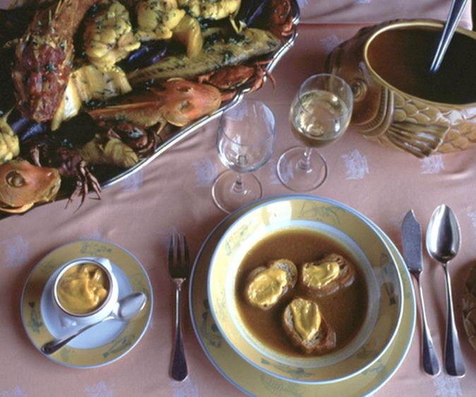 |
马赛名菜；两条路线都不经过马赛（Marseille），从马赛机场（MRS）回程时可以顺便吃。 | - |
6. 景点清单
按「必去 → 推荐 → 可选」排序；「排在哪天」链接到每日行程，写「巴黎备选」的是上次没去、这次想补的时候再加。票价里写「非欧盟」或「非欧洲经济区」的就是这趟两个人要付的价格。
巴黎
| 景点 | 图片 | 看点 | 建议时长 | 开放 / 闭馆 | 预约 / 票价 | 排在哪天 |
|---|---|---|---|---|---|---|
| 巴黎圣母院 Notre-Dame de Paris 必去 |
|
修复后重新开放的哥特式主教座堂，内部石材与玫瑰窗焕然一新；可另购票登塔俯瞰西岱岛（Île de la Cité）与塞纳河。提示：免费时段临近才放，10/7 起在官网 / App 看；周四开到22:00适合晚间参观。登塔在 https://www.tours-notre-dame-de-paris.fr/en/ 订票：424级台阶、通道最窄45cm、塔顶限停5分钟、无电梯无厕所。第三方转卖的“免费预约”无效。 | 大教堂45–60分钟；登塔另加约1小时 | 大教堂：周四7:50–22:00（官网常见问题）；其余日期据第三方汇总为周一至周五7:50–19:00、周六日8:15–19:30（未在官网直接核实）；闭门前30分钟停止入场。塔楼：4/1–9/30 9:00–23:00；10/1–3/31 9:00–17:30 闭馆：大教堂：未见固定闭馆日（未核实）。塔楼：1/1、5/1、12/25关闭，恶劣天气可能临时关闭 ⚠️ 已修复开放；塔楼参观已恢复（新参观路线），必须线上预约。 |
大教堂免费，可在官网/APP免费预约时段；名额在参观前几小时到 2–3 天陆续放出（各来源说法不一），不能提前很多天预约，不预约也可排队。塔楼：必须官网预约时段票，现场不售票 官网 大教堂免费；塔楼成人€16（2026，非欧盟游客同价；18岁以下及18–25岁欧盟公民免费） |
D2 10/10 周六 登塔（可选）：D3 10/11 一早 |
| 圣礼拜堂 Sainte-Chapelle 必去 |
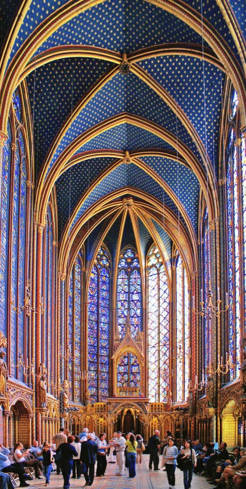 |
13世纪哥特辐射式杰作，上层礼拜堂几乎整面彩色玻璃窗，晴天光线下极其震撼。提示：选晴天上午或午后时段看彩窗；与司法宫（Palais de Justice）共用安检口，提前15–20分钟到。可买联票顺游隔壁的巴黎古监狱（Conciergerie）。 | 45–60分钟（含安检） | 4/1–9/30 9:00–19:00；10/1–3/31 9:00–17:00；闭馆前30分钟停止入场。2026/10/1（周四）16:30提前闭馆 闭馆：1/1、5/1、12/25 ⚠️ 2026/1/12起实行欧洲经济区内外差别票价（非欧洲经济区 €22）。 |
必须预约时段票，并严格按预约时间到达；安检严格（禁带大件行李、玻璃瓶、刀具等） 官网 2026/1/12起：非欧洲经济区成人€22；欧洲经济区公民/居民€16。与巴黎古监狱（Conciergerie）联票：非欧洲经济区 €30 / 欧洲经济区 €23（仅圣礼拜堂 Sainte-Chapelle 官网销售） |
巴黎备选 |
| 卢森堡公园 Jardin du Luxembourg 必去 |
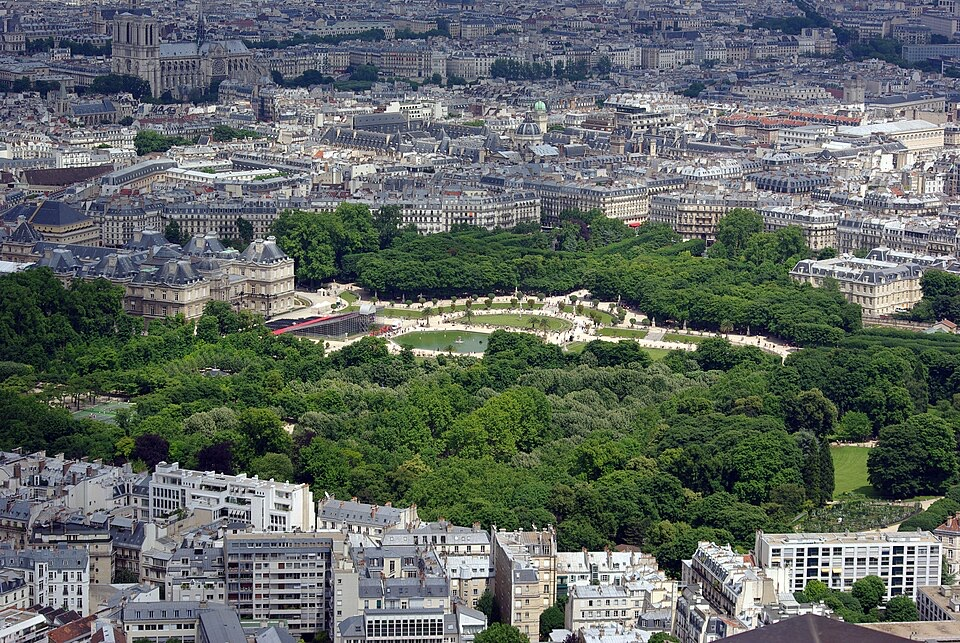 |
左岸（Rive Gauche）最优雅的法式花园：参议院所在的卢森堡宫（Palais du Luxembourg）、美第奇喷泉（Fontaine Médicis）、绿色铁椅，是散步和坐下发呆的首选。提示：从圣叙尔皮斯教堂（Saint-Sulpice）步行过来；美第奇喷泉在东北角；10月下旬起闭园较早，下午别太晚到。 | 45–90分钟 | 按日出日落每半月调整：9/1–15 7:30–19:45；9/16–30 7:30–19:15；10/1–15 7:45–18:45；10/16至10月最后一个周六 8:00–18:15；11/1–15 8:00–17:00；11/16–30 8:00–16:45；4/1–15 7:30–20:00；4/16–30 7:30–20:15；5/1–15 7:30–20:45；5/16–31 7:30–21:00；6/1–15 7:30–21:15；6/16–30 7:30–21:30；7/1–15 7:30–21:15；7/16–31 7:30–21:00 闭馆：无固定闭园日（按季节调整开放时间） |
无需 免费 |
巴黎备选 |
| 圣日耳曼德佩教堂 Saint-Germain-des-Prés 必去 |
 |
左岸（Rive Gauche）文艺街区：巴黎最古老的教堂之一，周边书店、画廊、古董与香氛设计小店密集，Buly、Deyrolle、乐蓬马歇百货（Le Bon Marché）都在步行范围内。提示：教堂官网有修复工程专题，内殿彩绘值得细看；沿波拿巴街（Rue Bonaparte）、雅各布街（Rue Jacob）、塞纳街（Rue de Seine）逛古董与设计店。 | 半天 | 街区全天。教堂：周一、周日9:30–20:00；周二至周五7:30–20:00；周六8:30–20:00 闭馆：教堂无固定闭馆日（弥撒时参观受限，未核实） |
无需 免费（教堂） |
D3 10/11 周日 |
| 皇家宫殿花园 Jardin du Palais-Royal 必去 |
 |
回廊环绕的安静花园＋丹尼尔·布伦的黑白条纹柱装置艺术；拱廊里有Café Kitsuné、设计与古董小店，正对卡地亚当代艺术基金会（Fondation Cartier）新馆。提示：清晨或傍晚拍布伦柱（Colonnes de Buren）人少；可与薇薇安拱廊（Galerie Vivienne）、法国国家图书馆黎塞留馆（BnF Richelieu）、皮诺收藏馆（Bourse de Commerce）一线步行。 | 30–60分钟 | 4/1–9/30 8:00–22:30；10/1–3/31 8:00–20:30 闭馆：官网未列闭园日 |
无需 免费 |
D4 10/12 周一 |
| 加尼叶歌剧院 Palais Garnier 必去 |
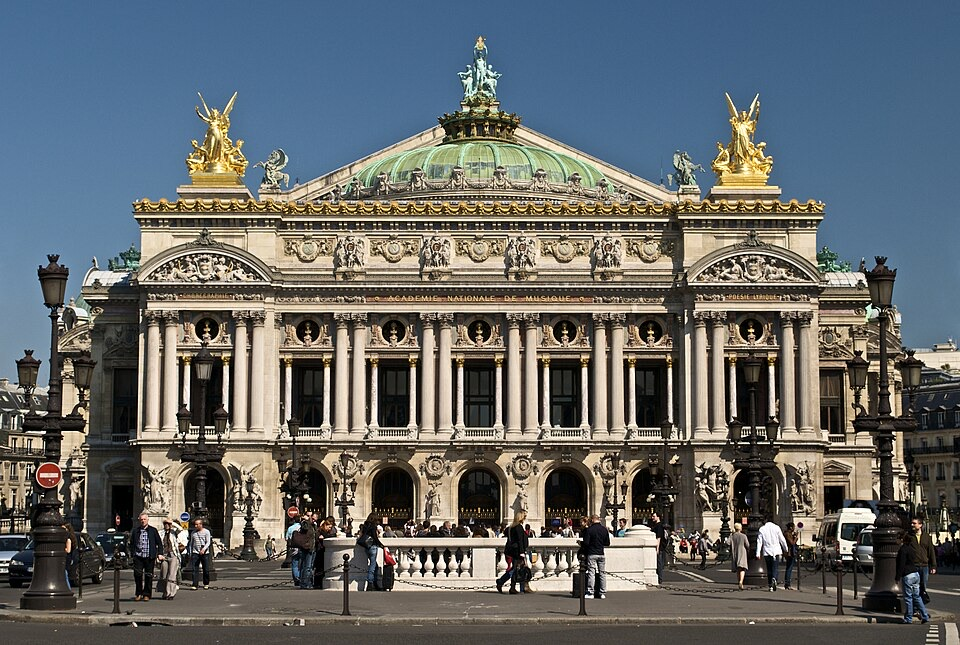 |
第二帝国风格歌剧院，大楼梯与金色大休息厅极尽华丽，建筑迷必看；自助参观含临展。提示：参观入口在斯克里布街（Rue Scribe）与奥贝尔街（Rue Auber）转角；禁止行李箱与旅行包；想看观众厅要有心理准备可能关闭。 | 约1.5小时（官网） | 每天10:00–17:00（夏季至18:00），闭馆前1小时停止入场；因演出/彩排常有调整 闭馆：无固定闭馆日；演出、彩排、特殊活动日可能关闭或部分区域不开放，观众厅经常无法进入且门票不保证 ⚠️ 实行欧洲经济区内外差别票价（非欧洲经济区 €25）；仅限线上预约。 |
必须网上预约，现场不售自助参观票；预约时段后30分钟内可入场；门票不退不换 官网 2026：非欧洲经济区成人€25；欧洲经济区成人€15；13–25岁非欧洲经济区 €20 / 欧洲经济区 €10；12岁及以下免费 |
巴黎备选 |
| 孚日广场 Place des Vosges 必去 |
|
贵族宅邸改建的博物馆、买手店和概念店最密集的街区；孚日广场（Place des Vosges）红砖拱廊对称优雅。提示：从叙利府邸（Hôtel de Sully）花园穿门进入孚日广场；可串联卡纳瓦雷博物馆（Musée Carnavalet，免费）、巴黎毕加索博物馆（Musée Picasso）、Merci、Dover Street Market、Fleux、Empreintes。本次核实的DSM、Merci、Fleux、L'Éclaireur、Buly周日营业，Empreintes周日周一休息。 | 半天到一天 | 广场全天（中央花园开放时间未核实） 闭馆：无（店铺各异） |
无需 免费 |
D2 10/10 周六 |
| 卢浮宫 Musée du Louvre 必去 |
|
世界级藏品与宫殿建筑本身，贝聿铭玻璃金字塔；建议只挑2–3个展区精看。提示：订开馆首个时段或周三/周五晚场；高峰时持票者可走卡鲁塞尔（Carrousel）或狮子门（Porte des Lions）入口；部分展厅因工程或高温会临时关闭，出发前查官网展厅关闭表。阿波罗长廊（Galerie d'Apollon）2026/7/22 重开，但王冠珠宝不再展出；10/7–2027/1/25 有苏巴朗（Zurbarán）大展。 | 3–4小时 | 周一、周四、周六、周日9:00–18:00；周三、周五9:00–21:00；闭馆前1小时停止入场 闭馆：每周二；1/1、5/1、12/25（其他公众假日照常开放，逢周二除外） ⚠️ 2026/1/14起非欧洲经济区票价由€22涨至€32；2025/10/19发生王冠珠宝失窃案；2025/12–2026/1员工罢工多次闭馆；2026年6月热浪期间曾提前闭馆。 |
官网建议预约时段票（免费对象也建议预约）；人少时现场可买；出馆即视为离开，不可再入 官网 2026/1/14起：非欧洲经济区成人€32；欧洲经济区公民/居民€22；18岁以下与26岁以下欧洲经济区居民免费；每月第一个周五18:00后免费（7、8月除外） |
D4 10/12 周一 9:00 |
| 奥赛博物馆 Musée d'Orsay 必去 |
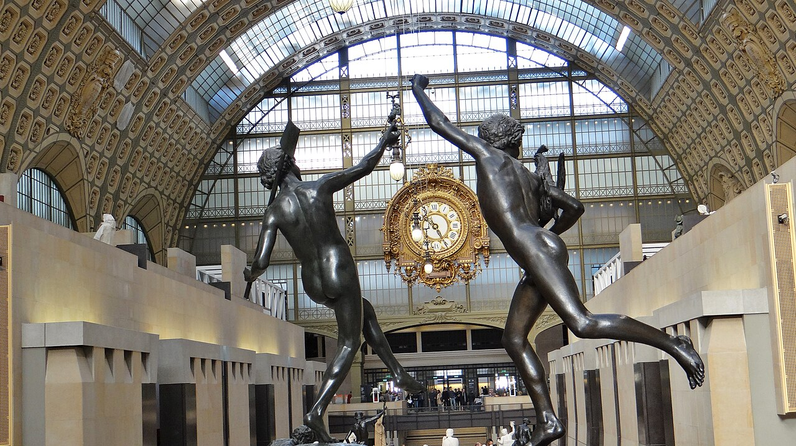 |
火车站改建的印象派圣殿：莫奈、雷诺阿、梵高，大钟窗后看塞纳河与卢浮宫（Louvre）。提示：周四夜场人少且便宜；先上顶层印象派展厅再往下看；可与罗丹美术馆（Musée Rodin）买联票同日安排。 | 2.5–3小时 | 周二至周日9:30–18:00（17:00最后入场，17:30开始清场）；周四夜场至21:45（21:00最后入场） 闭馆：周一；5/1、12/25 ⚠️ 官网对抓取返回403，全价票价请出发前复核。 |
官网售时段票，建议提前预约 官网 成人全价未核实（官网无法访问）；周四18:00起夜场票€12；与罗丹美术馆（Musée Rodin）联票€25（罗丹美术馆官网） |
巴黎备选 |
| 橘园美术馆 Musée de l'Orangerie 必去 |
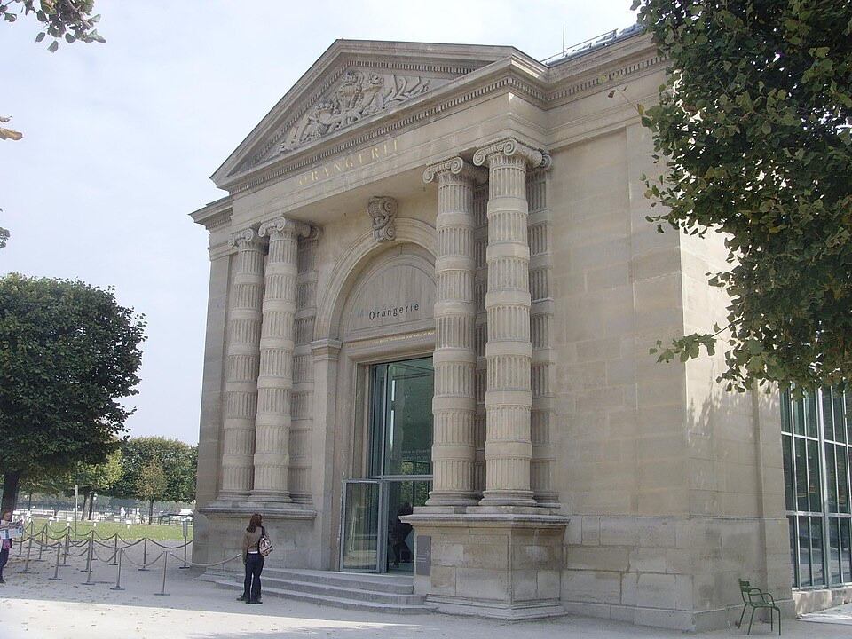 |
为莫奈《睡莲》专门设计的两间椭圆展厅，自然光下沉浸感极强；地下有瓦尔特-吉约姆（Walter-Guillaume）收藏。提示：订开馆第一个时段进睡莲厅人最少；与杜乐丽花园（Jardin des Tuileries）、协和广场（Place de la Concorde）同游。 | 1–1.5小时 | 9:00–18:00 闭馆：每周二；5/1、7/14上午、12/25 |
所有观众必须预约时段（含免费对象） 官网 成人全价未核实（官网无法访问）；周五18:00起夜场€10（仅2026/3/27–7/17）；每月第一个周日免费（须预约） |
巴黎备选 |
| 罗丹美术馆 Musée Rodin 必去 |
|
罗丹故居比隆府邸（Hôtel Biron）和雕塑花园，《思想者》《地狱之门》立在玫瑰花园里，是“有花园的博物馆”代表。提示：挑晴天去逛花园；禁止任何尺寸的行李箱和大包，只能带小背包。 | 1.5–2小时 | 周二至周日10:00–18:30（17:45最后入场）；12/24、12/31 17:30闭馆 闭馆：周一；1/1、5/1、12/25 |
无需提前预约（免费对象也无需），可官网购票 官网 成人€14；与奥赛博物馆（Musée d'Orsay）联票€25；10–3月每月第一个周日免费 |
D3 10/11 周日 |
| 皮诺收藏馆 Bourse de Commerce 必去 |
 |
安藤忠雄在19世纪圆顶交易所内置入清水混凝土圆筒，建筑本身就是展品；皮诺当代艺术收藏。提示：上顶层环廊俯瞰圆厅与穹顶壁画；与皇家宫殿（Palais-Royal）、E. Dehillerin、蒙托格伊街（Rue Montorgueil）步行串联。 | 1.5小时 | 周一、周三至周日11:00–19:00；官网当前注明周五无夜场 闭馆：每周二；5/1 ⚠️ 2026/8/26–10/5为换展期，为新展「记住我」（Remember Me）布展；10/7起恢复常规票价。 |
建议官网购票 官网 全价€15、18–26岁€10（10/7起恢复）；2026/8/26–10/5换展期特价€9 |
D2 10/10 周六（可选） |
| 卡地亚当代艺术基金会 Fondation Cartier 必去 |
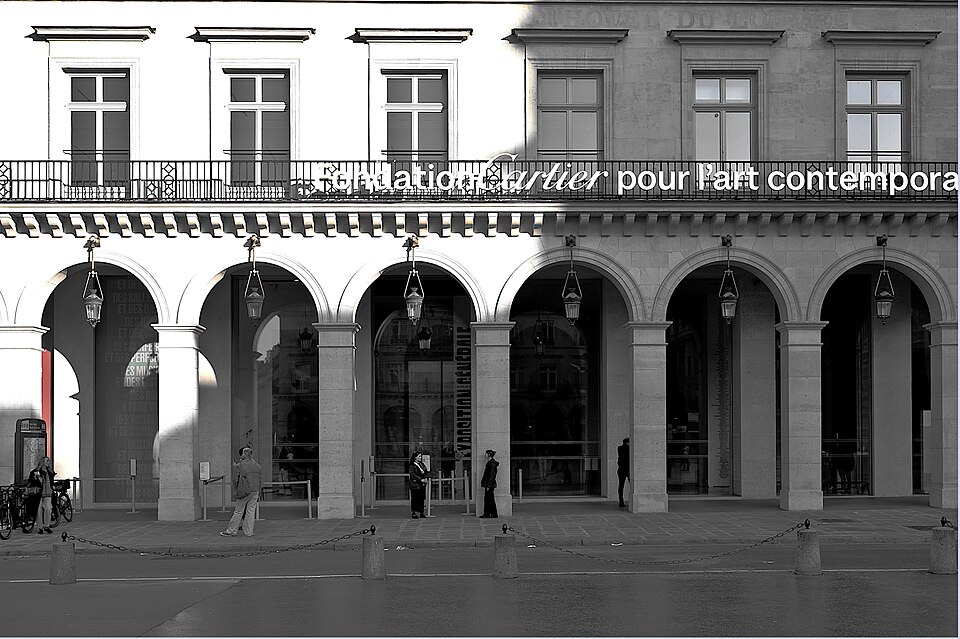 |
让·努维尔设计的新馆，位于卢浮宫（Louvre）对面的皇家宫殿广场（Place du Palais-Royal），可变化的大展厅空间本身就是看点。提示：大展「易卜拉欣·马哈马：收获季」2026/10/22–2027/2/28；周五夜场人少。10/22前到访只能逛书店。 | 1–1.5小时 | 周二至周四、周六、周日11:00–19:00；周五11:00–22:00 闭馆：周一；12/25、1/1、5/1；2026秋换展闭馆至10/22（书店9/22起先开放） ⚠️ 已迁至皇家宫殿（Palais-Royal）新址；换展闭馆，2026/10/22重新开放。 |
官网购票，建议预约 官网 全价€15；优惠€10 |
闭馆中 |
| 路易威登基金会 Fondation Louis Vuitton 必去 |
|
弗兰克·盖里设计的玻璃“帆船”，屋顶平台与水景非常出片；2026秋大展汇集梵高、高更、雷东等现代艺术名作。提示：大展「收藏家与创作者古斯塔夫·法耶（Gustave Fayet）：现代艺术经典」2026/10/9–2027/3/8；行程若在10/9前则无法参观。 | 2–3小时（含交通） | 重开后：周一、周三至周五12:00–19:00；周六、周日11:00–19:00 闭馆：每周二；目前闭馆，2026/10/9重新开放 ⚠️ 目前闭馆，2026/10/9重开。 |
仅限预约（paris.fr活动页） 官网 €0–18（2026–27展览） |
D4 10/12 周一 |
| 乐蓬马歇百货 Le Bon Marché Rive Gauche 必去 |
|
巴黎最有策展感的百货（家居、设计与书店楼层），隔壁La Grande Épicerie是食品伴手礼天堂。提示：Buly在乐蓬马歇（Le Bon Marché）2楼有柜台；与Deyrolle（巴克街 / Rue du Bac）、圣日耳曼德佩（Saint-Germain-des-Prés）步行串联。 | 1.5–2小时 | 乐蓬马歇（Le Bon Marché）：周一至周六10:00–20:00，周日11:00–20:00（据Buly官网所列其乐蓬马歇柜台时间）；La Grande Épicerie营业时间未核实 闭馆：乐蓬马歇周日营业（见上）；La Grande Épicerie未核实 ⚠️ 两家官网均无法访问，营业时间请出发前复核。 |
无需 免费入内 |
D3 10/11 周日 |
| Merci 必去 |
- | 巴黎概念店代表：多层家居、文具、亚麻织品与服装选品，附设La Civette与Used Book Café。提示：Used Book Café适合歇脚；另有Merci Richelieu分店。 | 1小时 | 周一至周三10:30–19:30；周四、周五10:30–20:00；周六10:00–20:00；周日10:00–19:30；La Civette 11:00–19:00 闭馆：无每周休息日 |
无需 免费入内 |
D2 10/10 周六 |
| 新桥 Pont Neuf 推荐 |
 |
巴黎现存最古老的桥；桥下西岱岛（Île de la Cité）尖端的小公园贴近水面，是看塞纳河日落的经典位置。提示：傍晚来，Vedettes du Pont Neuf游船码头就在绿林好汉广场（1 Square du Vert-Galant）；从太子广场（Place Dauphine）穿过去更安静。 | 20–40分钟 | 桥全天通行；绿林好汉广场（Square du Vert-Galant）开放时间未核实 闭馆：未核实 |
无需 免费 |
D2 10/10 周六 |
| 圣路易岛 Île Saint-Louis 推荐 |
 |
17世纪整齐石砌住宅、河岸步道和小店，比西岱岛（Île de la Cité）安静，适合从圣母院（Notre-Dame）后面散步过桥。提示：沿奥尔良河岸（Quai d'Orléans）回望圣母院后殿；主街圣路易岛街（Rue Saint-Louis-en-l'Île）有冰淇淋与小店；可过叙利桥（Pont de Sully）接阿拉伯世界研究所（Institut du monde arabe）屋顶露台。 | 45–90分钟 | 街区全天（店铺各异） 闭馆：无（店铺营业时间各异，未核实） |
无需 免费 |
D2 10/10 周六 |
| Shakespeare and Company 推荐 |
|
左岸（Rive Gauche）传奇英文书店，木书架迷宫与楼上阅读角很有氛围，隔壁有自家咖啡馆，正对圣母院（Notre-Dame）。提示：尽量开门后不久或工作日去，避开下午人潮；可与圣母院、圣路易岛（Île Saint-Louis）同线步行。 | 30–45分钟 | 未核实（官网无法访问） 闭馆：未核实 ⚠️ 官网无法访问，营业时间请出发前复核。 |
无需预约 免费入内 |
D2 10/10 周六 |
| 杜乐丽花园 Jardin des Tuileries 推荐 |
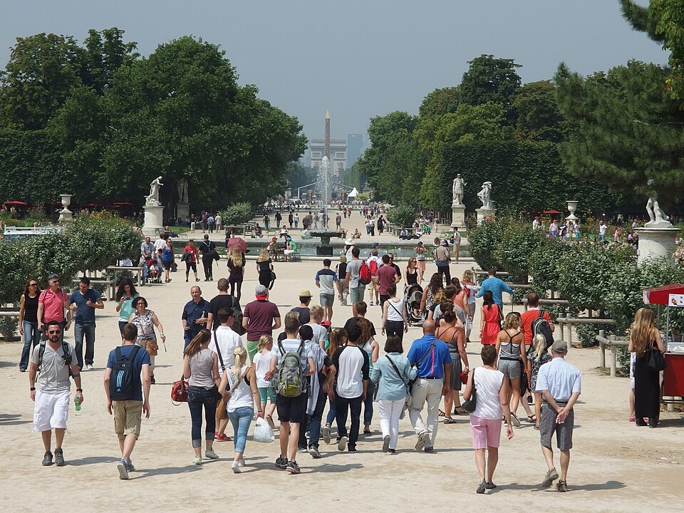 |
连接卢浮宫（Louvre）与协和广场（Place de la Concorde）的皇家园林，雕塑、水池与绿色铁椅，是博物馆之间的步行轴线。提示：西端就是橘园美术馆（Musée de l'Orangerie）；可沿卡斯蒂廖内街（Rue de Castiglione）北上到旺多姆广场（Place Vendôme）。 | 30–60分钟 | 1–3月、11–12月 7:30–19:30；4、5、9、10月 7:00–21:00；6–8月 7:00–23:00；2026年奥运圣火盆展示期间调整：6/22–7/31 22:30关、8月21:30关、9/1–14 20:30关；闭园前30分钟清场 闭馆：官网未列固定闭园日 ⚠️ 2026年夏季因奥运圣火盆展示调整闭园时间。 |
无需 免费 |
巴黎备选 |
| 薇薇安拱廊 Galerie Vivienne 推荐 |
|
巴黎最美的廊街之一：马赛克地砖、玻璃顶、旧书店、茶室与精品店，共56家商铺、长176米。提示：三个入口：小田野街（4 rue des Petits-Champs）、银行街（5–7 rue de la Banque）、薇薇安街（6 rue Vivienne）；隔街就是法国国家图书馆黎塞留馆（BnF Richelieu）。 | 20–40分钟 | 每天8:30–20:00（店铺时间各异） 闭馆：无（每天开放） |
无需 免费 |
D4 10/12 周一 |
| 老佛爷百货 Galeries Lafayette Haussmann 推荐 |
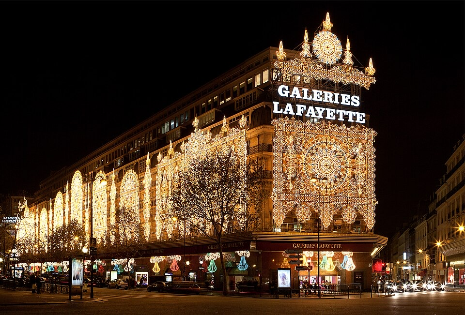 |
免费屋顶露台，近看加尼叶歌剧院（Palais Garnier）屋顶、远眺埃菲尔铁塔（Tour Eiffel）；楼下是新艺术风格彩色玻璃穹顶中庭。提示：在主楼（玻璃穹顶那栋）按屋顶露台指示牌（Terrasse / Rooftop）乘扶梯到8楼。百货营业时间据Buly官网柜台信息为周一至周六10:00–20:30、周日11:00–20:00。 | 30–45分钟 | 露台：周一至周六10:00–20:00；周日及公众假日11:00–20:00 闭馆：雨天或大风时可能临时关闭 |
无需，免费 免费 |
巴黎备选 |
| 莎玛丽丹百货 La Samaritaine 推荐 |
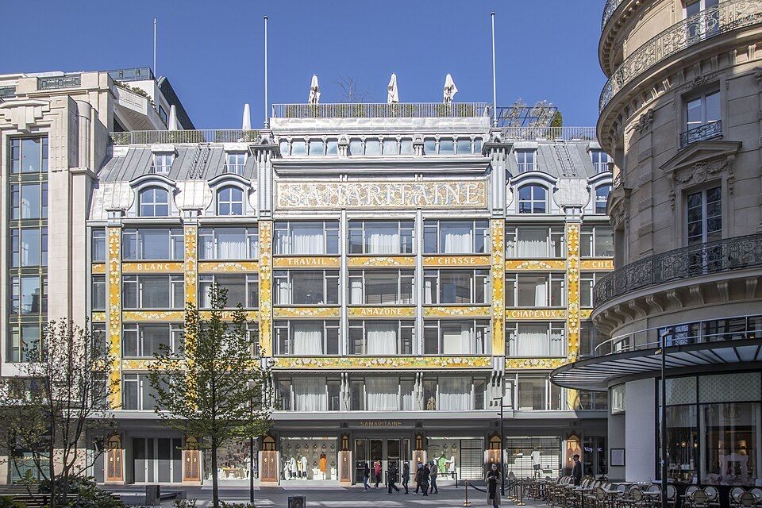 |
修复重开的百年百货：新艺术风格孔雀壁画中庭＋SANAA设计的波浪玻璃立面，建筑迷必看。提示：里沃利街（Rue de Rivoli）一侧看SANAA玻璃立面，临塞纳河一侧是装饰艺术风格建筑；与新桥（Pont Neuf）、皮诺收藏馆（Bourse de Commerce）同线。 | 30–60分钟 | 未核实（官网无法访问） 闭馆：未核实 ⚠️ 官网（samaritaine.com）无法访问，营业时间请出发前复核。 |
无需 免费入内 |
有空再加 |
| 埃菲尔铁塔 Tour Eiffel 推荐 |
|
巴黎地标；登顶俯瞰全城，或从特罗卡德罗广场（Trocadéro）、塞纳河游船上欣赏更经典。提示：出发前60天开售当天就订登顶票（最抢手）；也可只上2层再去特罗卡德罗广场拍全景。 | 登顶2–3小时（含安检排队） | 开放时间未核实（官网无法访问）；官网信息：登顶最后一班上行22:30 闭馆：未核实 ⚠️ 2026/9/29起楼梯参观须提前预约。 |
强烈建议官网提前买时段票：电梯票（登顶、2层）线上提前60天开售；楼梯至2层票提前30天开售；楼梯+电梯登顶票提前30天开售（官网注明仅淡季）。2026/9/29起走楼梯参观也须预约 官网 2026成人（25岁以上）：电梯登顶€36.70；楼梯至2层+电梯登顶€28.00；电梯至2层€23.50；楼梯至2层€14.80（第三方资料，未在官网核实） |
D3 10/11 周日 |
| 特罗卡德罗广场 Trocadéro 推荐 |
 |
夏乐宫（Palais de Chaillot）平台正对埃菲尔铁塔（Tour Eiffel），是拍铁塔全景的最佳位置。提示：清晨人最少；沿特罗卡德罗花园（Jardins du Trocadéro）下行过耶拿桥（Pont d'Iéna）到铁塔。 | 20–30分钟 | 平台全天；特罗卡德罗花园（Jardins du Trocadéro）开放时间未核实 闭馆：无 |
无需 免费 |
D4 10/12 周一（生日前夜） |
| 塞纳河游船 Bateaux-Mouches 推荐 |
|
约1小时游船串起卢浮宫（Louvre）、奥赛博物馆（Musée d'Orsay）、圣母院（Notre-Dame）与埃菲尔铁塔（Tour Eiffel）；日落前后登船可同时看黄昏与夜景。提示：巴黎日落：2026/9/25约19:45；10/15约19:03；10/25夏令时结束后10/31约17:34；11/15约17:12；2027/4/20约20:51；6/15约21:58。建议日落前30–45分钟登船。Vedettes du Pont Neuf从西岱岛（Île de la Cité）出发，离圣母院一带最近；Bateaux Parisiens从铁塔脚下出发。 | 约1小时（另留候船时间） | Bateaux-Mouches：4–10月每30分钟一班10:00–22:30（8/29–11/1末班22:00；7–8月周四至周六加开23:00）；11–3月每45分钟一班10:15–21:30，16:00后每30分钟。Bateaux Parisiens：2026/8/24–9/27周日至周四10:00–22:30、周五周六10:00–23:00约每20–30分钟一班，9/28之后时刻未核实。Vedettes du Pont Neuf：班次未核实 闭馆：未核实（天气或高水位可能停航） |
一般无需提前很久；官网线上购票常有折扣 官网 Bateaux-Mouches成人€20（官网）；Vedettes du Pont Neuf线上€15（常规€17）；Bateaux Parisiens价格未核实 |
D3 10/11 周日 |
| 亚历山大三世桥 Pont Alexandre III 推荐 |
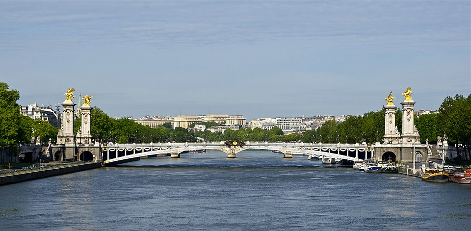 |
巴黎最华丽的桥，镀金雕像与艺术灯柱，连接荣军院（Les Invalides）和大、小皇宫（Grand Palais / Petit Palais），日落散步很美。提示：与大皇宫、小皇宫一次走完；桥上可远眺埃菲尔铁塔（Tour Eiffel）。 | 15–30分钟 | 全天 闭馆：无 |
无需 免费 |
巴黎备选 |
| 大皇宫 Grand Palais 推荐 |
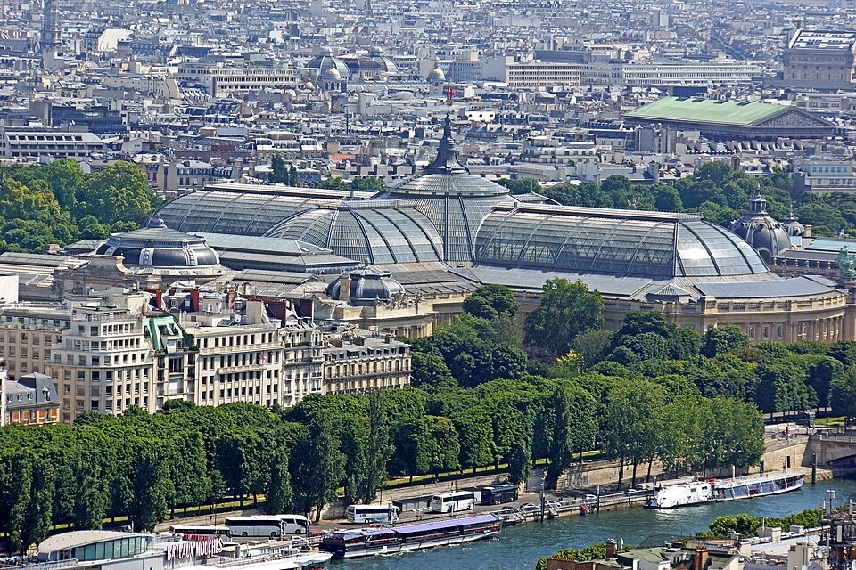 |
修复后全面重开的钢铁玻璃大展馆；2026秋冬大展「塞尚与我们」（Cezanne et nous）约180件作品（其中约70件出自塞尚）。提示：「塞尚与我们」2026/9/23–2027/1/17；周五夜场较从容；昂坦圆厅（Rotonde d'Antin）、塞纳厅（Salon Seine）、书店和餐厅免费进入。 | 1.5–2小时（看展） | 周二至周日9:30–20:00；周五至22:30；展览闭馆前45分钟停止入场 闭馆：周一（官网开放时间为周二至周日）；12/25、5/1、7/14；12/24、12/31 18:00闭馆；1/1例外开放 ⚠️ 2020–2025年修复后于2025年6月全面重开。 |
官网强烈建议所有人（含免费对象）线上预约；现场购票视余量 官网 常规展€15（优惠€12）；重磅大展€19（优惠€16）；部分公共区域免费 |
巴黎备选 |
| 小皇宫 Petit Palais 推荐 |
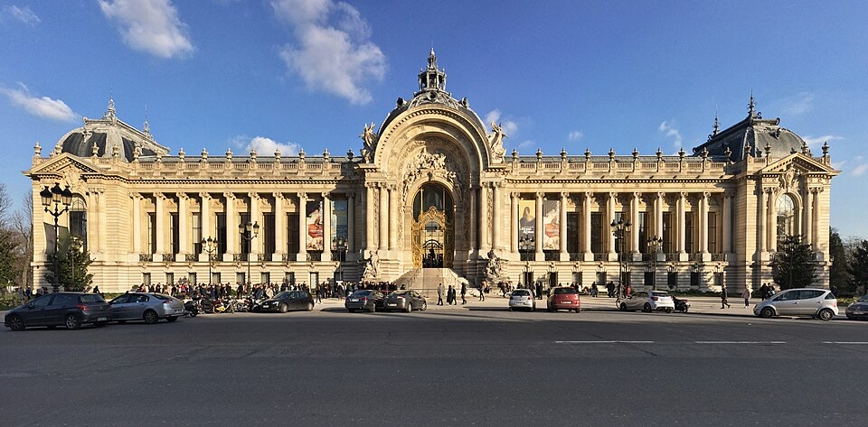 |
常设展免费，建筑本身精美；半圆形内庭花园与Café 1902是歇脚好地方。提示：Café 1902周二至周日10:00–17:45（夜场日至19:40）；与大皇宫（Grand Palais）、亚历山大三世桥（Pont Alexandre III）同游。 | 1–1.5小时 | 周二至周日10:00–18:00（常设展17:15、临展16:45最后入场）；周五、周六临展夜场至20:00（常设展不延长） 闭馆：周一；1/1、5/1、7/14、11/11、12/25 |
常设展免费无需预约；临展需购票 官网 常设展免费；花园在开放时间内免费 |
巴黎备选 |
| 小丘广场 Place du Tertre 推荐 |
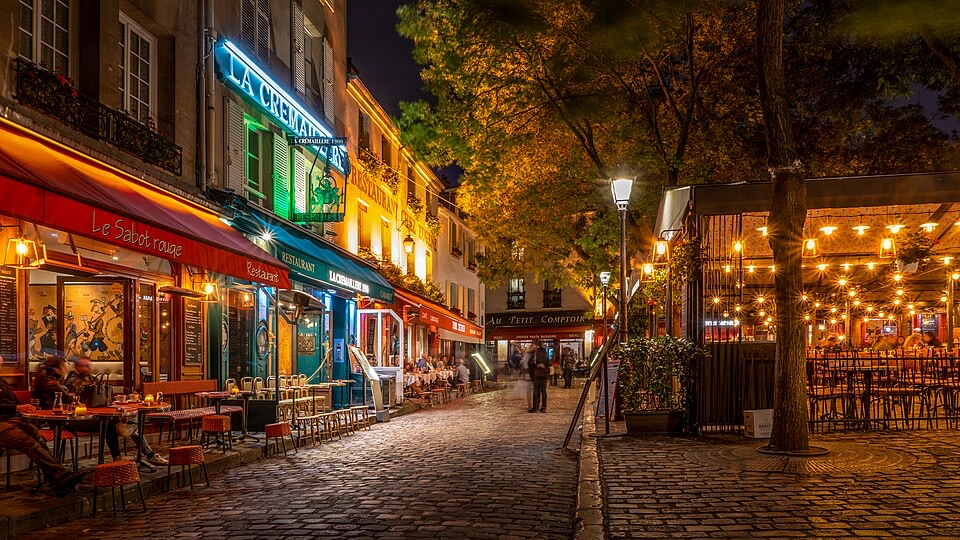 |
山丘上的石板坡道、画家广场和粉红色小餐馆La Maison Rose，适合一早趁人少散步拍照。提示：早上9点前小丘广场（Place du Tertre）与饮马槽街（Rue de l'Abreuvoir）最清静；路线：Abbesses站（爱墙 Le Mur des je t'aime）→上坡→饮马槽街→小丘广场→圣心堂（Sacré-Cœur）→下到Anvers站。广场人多注意防扒。 | 2–3小时（含圣心堂 Sacré-Cœur） | 街区全天。La Maison Rose（饮马槽街 / 2 rue de l'Abreuvoir）周三至周日：午餐12:00–14:30；下午茶/饮品15:30–17:30；晚餐18:00–21:45（周日至21:30） 闭馆：La Maison Rose周一、周二不营业 |
La Maison Rose仅可官网订位；下午茶时段无需预约 官网 免费（街区） |
巴黎备选 |
| 圣心堂 Sacré-Cœur 推荐 |
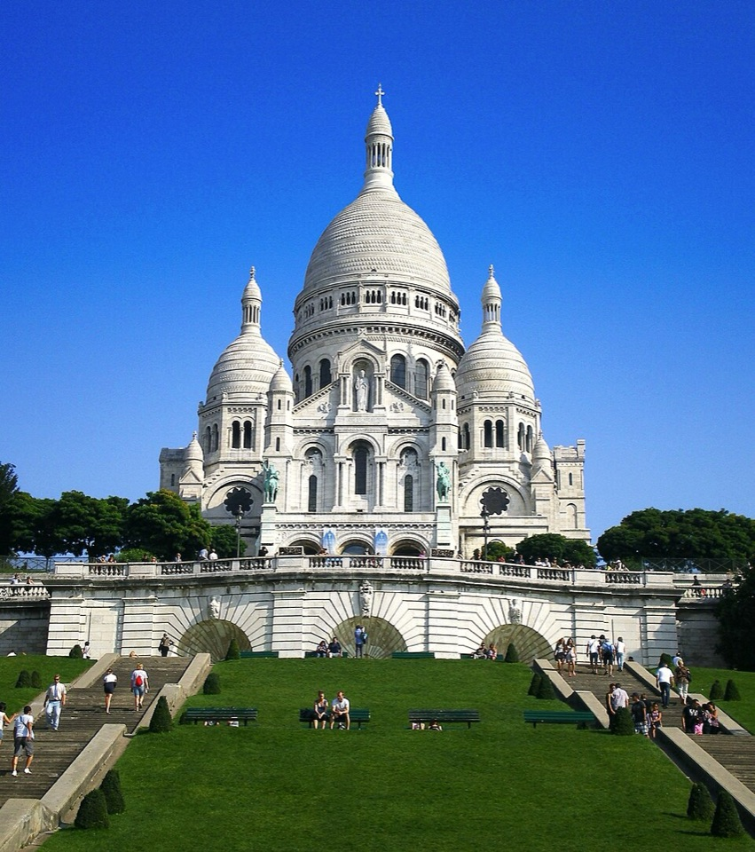 |
蒙马特（Montmartre）山顶的白色大教堂，台阶前俯瞰巴黎；登穹顶可看360°全景。提示：穹顶入口在教堂左侧，安检后下到壕沟处；约280级窄楼梯、无电梯，不适合行动不便者。 | 教堂30分钟；登穹顶另加约45分钟 | 大教堂每天6:30–22:30；穹顶每天10:30–20:45（最后上行20:15），每天中午有午休暂停 闭馆：无固定闭馆日；穹顶可能因维护或天气临时调整 ⚠️ 主管风琴修复工程持续至2027年5月底，影响礼仪音乐。 |
教堂免费无需预约；穹顶只能现场售票（窗口或售票机），团体也无法预订 教堂免费；穹顶成人（16岁起）€8，儿童€5 |
巴黎备选 |
| 圣马丁运河 Canal Saint-Martin 推荐 |
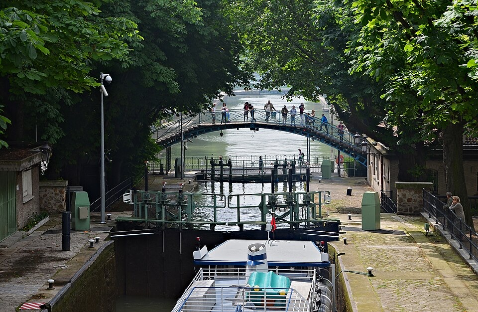 |
铁桥、船闸与梧桐树的运河步道，周边是独立咖啡、书店和小设计店，本地生活感强。提示：从共和国广场（République）附近沿瓦尔米河岸（Quai de Valmy）或热马普河岸（Quai de Jemmapes）向北走，过几座绿色铁桥。 | 1.5–2小时 | 全天 闭馆：无 |
无需 免费 |
巴黎备选 |
| 叙利府邸 Hôtel de Sully 推荐 |
 |
17世纪府邸的庭院与花园免费开放，花园尽头的小门直通孚日广场（Place des Vosges）。提示：从圣安托万街（Rue Saint-Antoine）进入，穿过庭院和花园到孚日广场西南角。 | 15–20分钟 | 庭院与花园每天9:00–19:00；书店13:00–19:00（周一休） 闭馆：1/1、5/1、11/1、11/11、12/25 |
无需 免费 |
D2 10/10 周六 |
| 巴黎毕加索博物馆 Musée Picasso Paris 推荐 |
|
毕加索大宗收藏，馆舍是玛黑区（Le Marais）的17世纪萨莱府邸（Hôtel Salé），建筑与展陈都很好看。提示：禁止行李箱和大容量包；与卡纳瓦雷博物馆（Musée Carnavalet）、Merci同一路线。 | 1.5小时 | 周二至周日9:30–18:00（17:15最后入场） 闭馆：周一；1/1、5/1、12/25 |
现场可买；预约时段可避开排队并优先入场 官网 成人€16；家庭票每位成人€12；每月第一个周日免费 |
D2 10/10 周六 |
| 卡纳瓦雷博物馆 Musée Carnavalet 推荐 |
 |
两座府邸与庭园里的巴黎城市史，老店招牌与整体搬迁的室内装饰很适合设计爱好者，常设展免费。提示：看穆夏设计的Fouquet珠宝店室内；庭园可小憩；离孚日广场（Place des Vosges）步行很近。 | 1–1.5小时 | 周二至周日10:00–18:00（售票17:15截止） 闭馆：周一；1/1、5/1、12/25 |
常设展免费、无需预约；临展收费 官网 常设展免费 |
D2 10/10 周六 |
| 雅克马尔-安德烈博物馆 Musée Jacquemart-André 推荐 |
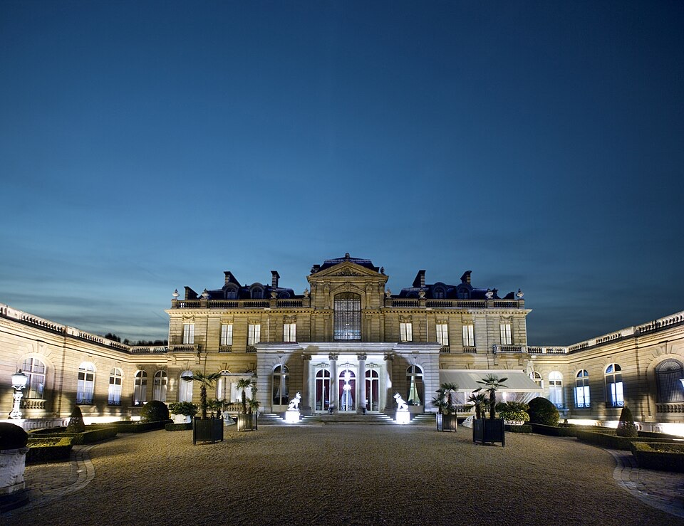 |
19世纪收藏家豪宅原貌保存，意大利文艺复兴与法国18世纪艺术；附设Le Nélie餐厅。提示：丁托列托特展2026/9/11–2027/1/24；周五夜场至22:00较从容。 | 1.5–2小时 | 2026/9/11起：周一至周四10:00–18:00；周五10:00–22:00；周六、周日10:00–19:00；闭馆前30分钟停止入场 闭馆：官网未列每周闭馆日（每天开放） ⚠️ 2026/9/11起新开放时间（周五夜场）。 |
展览期间须选15分钟入场时段；建议线上购票 官网 2026/9/11–2027/1/24（藏品+特展）全价€19；65岁以上€18 |
巴黎备选 |
| 凡尔赛宫 Château de Versailles 推荐 |
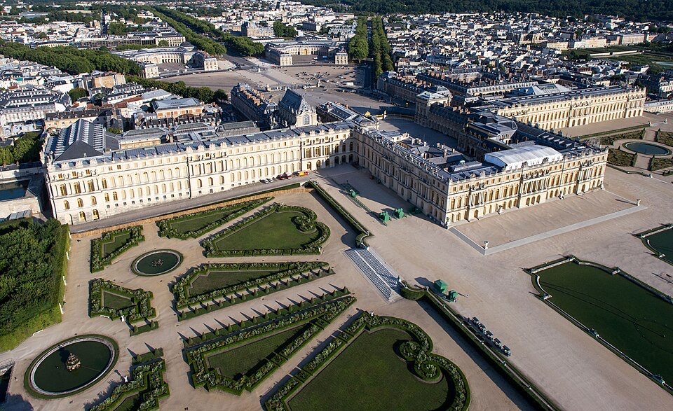 |
镜厅与国王套房、特里亚农宫（Trianon）与王后小村庄、勒诺特尔法式园林；音乐喷泉日花园最有看头。提示：2026年音乐喷泉：4/4–11/1每周六日，5/5–6/30每周二，另4/3、4/6、5/8、5/14、5/25、7/14；2026年音乐花园：4/1–10/30每周二至周五（与音乐喷泉重叠的日子除外，10/27–30 17:30闭园）；夜间喷泉2026/6/6–9/19每周六。订9:00首个时段直奔镜厅，或先逛花园/特里亚农宫（Trianon）避开宫殿人潮。交通：RER C线到Versailles Château–Rive Gauche站（步行约10分钟；巴黎可在Saint-Michel Notre-Dame、Invalides、Champ de Mars–Tour Eiffel这几站上车）；圣拉扎尔站（Gare Saint-Lazare）发车到Versailles Rive Droite站、蒙帕纳斯站（Gare Montparnasse）发车到Versailles Chantiers站（均步行约20分钟）；或从Pont de Sèvres站坐巴黎公交171路。车程未核实。官网建议先买好往返票避免车站排队。 | 大半天到一天：宫殿2–3小时＋花园/特里亚农宫（Trianon）2–3小时＋往返交通 | 旺季（4/1–10/31）：宫殿9:00–18:30（17:45最后入场），特里亚农宫（Trianon）12:00–18:30，花园/公园7:00–20:30；淡季（11/1–3/31）：宫殿9:00–17:30（16:45最后入场），特里亚农宫12:00–17:30，花园/公园8:00–18:00 闭馆：宫殿与特里亚农宫每周一闭馆，另1/1、5/1、12/25；花园每天开放 ⚠️ 2026/1/14起新票价：欧洲经济区公民/居民优惠€3，非欧洲经济区游客付全价；通票（Passport）分旺淡季定价；官网票价页只列通票与特里亚农宫票；2027年喷泉日程未公布。 |
进宫殿必须预约时段（免费对象也要）；官网称只有通票（Passport）含宫殿并保证入场 官网 2026/1/14起通票：旺季€35（欧洲经济区€32）、淡季€25（欧洲经济区€22）；傍晚优惠：旺季16:00后€28（欧洲经济区€25）、淡季15:00后€18（欧洲经济区€15）；特里亚农宫（Trianon）票€15（欧洲经济区€12）；音乐喷泉/音乐花园日单独花园票€15（欧洲经济区€12，官网票价页）/现场€16（欧洲经济区€13）；通票已含音乐喷泉与音乐花园。官网票价页未提供单独“仅宫殿”票 |
巴黎备选 |
| Deyrolle 推荐 |
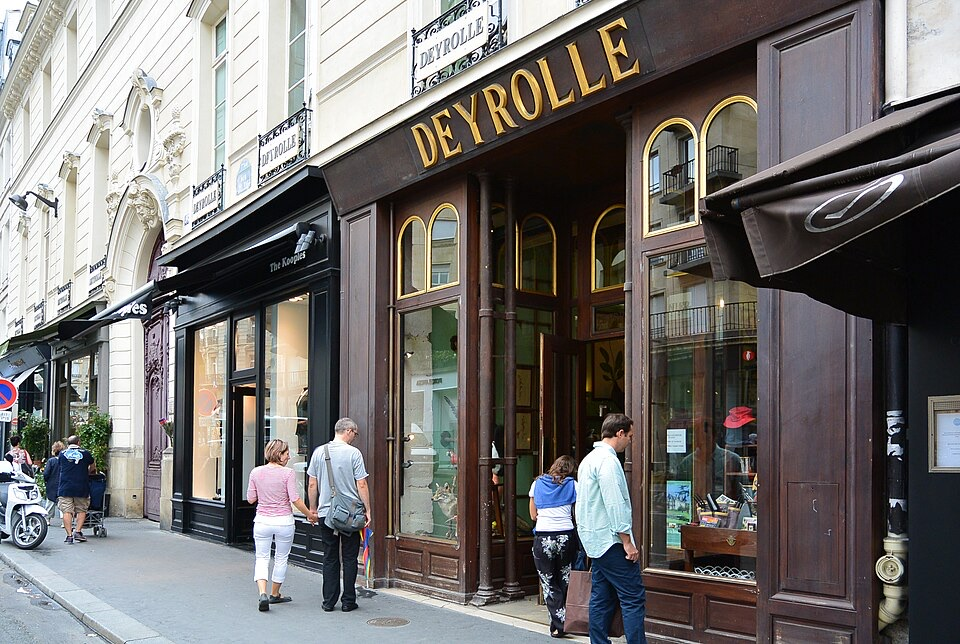 |
老牌自然标本店，楼上陈列室像珍奇柜，昆虫标本与教学挂图极具设计美感。提示：与乐蓬马歇百货（Le Bon Marché）、巴克街（Rue du Bac）沿线店铺同逛。 | 30–45分钟 | 周一至周六10:00–19:00；周日未核实 闭馆：周日是否营业未核实 |
无需 官网未列门票（未核实） |
巴黎备选 |
| Officine Universelle Buly 推荐 |
|
复古药房式香氛美妆店，木柜陈列与书法、雕刻、压印服务，高颜值伴手礼首选。提示：其他巴黎门店：黎塞留街（29 rue de Richelieu）、圣通日街（45 rue de Saintonge）、老圣殿街（19 rue Vieille du Temple），这三家均每天11:00–19:00；另有乐蓬马歇百货（Le Bon Marché）2楼、老佛爷百货（Galeries Lafayette）1楼柜台。 | 30分钟 | 周一至周日11:00–19:00 闭馆：无每周休息日 |
无需 免费入内 |
D3 10/11 周日 |
| Astier de Villatte 推荐 |
- | 黑陶白釉手工餐具与香氛；旗舰店位于拿破仑时代一位金匠的旧店，是巴黎仅存的该时期店铺室内。提示：左岸（Rive Gauche）另有图尔农街（Rue de Tournon）分店（2016年开）。 | 30分钟 | 未核实（官网无法访问） 闭馆：未核实 ⚠️ 官网无法访问，营业时间请复核。 |
无需 免费入内 |
D4 10/12 周一 |
| E. Dehillerin 推荐 |
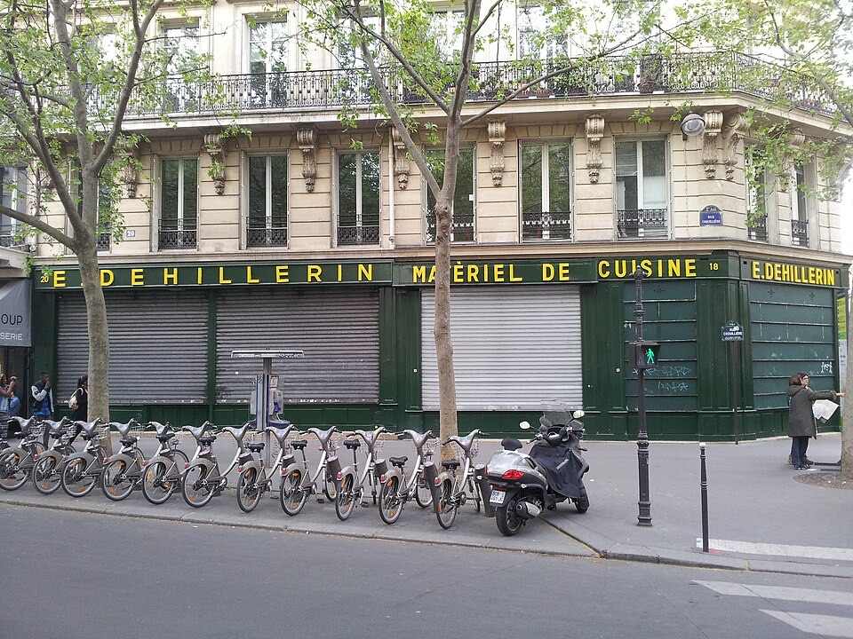 |
百年专业厨具店，铜锅、刀具与烘焙模具堆满木架，料理爱好者朝圣地。提示：周一12:30–14:00午休；铜锅很重，可考虑官网网店邮寄。 | 30–45分钟 | 周一9:00–12:30、14:00–18:00；周二至周五9:00–19:00；周六9:00–18:00；8月周一至周六10:00–18:00不午休 闭馆：周日及公众假日 |
无需 免费入内 |
D4 10/12 周一 |
| Galignani 推荐 |
杜乐丽花园（Jardin des Tuileries）对面的老牌英法文书店，木质书架与艺术、设计、摄影书区很适合书店控。提示：与杜乐丽花园、旺多姆广场（Place Vendôme）同线。 | 30分钟 | 未核实（官网无法访问） 闭馆：未核实 ⚠️ 官网无法访问，营业时间请复核。 |
无需 免费入内 |
D4 10/12 周一 | |
| Dover Street Market Paris 推荐 |
- | 川久保玲的买手百货巴黎店，位于17世纪库朗热府邸（Hôtel de Coulanges），建筑与陈列装置都值得看，内有Rose Bakery咖啡馆。提示：在玛黑区（Le Marais）主街弗朗布尔乔亚街（Rue des Francs-Bourgeois），周日也营业。 | 45–60分钟 | 周一至周六11:00–19:00；周日12:00–19:00 闭馆：无每周休息日 ⚠️ 确认存在：2024/5/24开业（DSM全球第8家）。 |
无需 免费入内 |
D2 10/10 周六 |
| Fleux' 推荐 |
- | 玛黑区（Le Marais）连开数间门面的家居设计概念店，灯具、小家具、餐具与礼品选品丰富。提示：39、40、52号几间门店陈列不同品类，逐间逛。 | 45分钟 | 周一至周五10:45–20:30；周六10:30–20:45；周日11:00–20:30 闭馆：无每周休息日 |
无需 免费入内 |
D2 10/10 周六 |
| Empreintes 推荐 |
- | 汇集近千件法国手工艺工坊独件或小批量作品的旗舰概念店，陶瓷、玻璃、首饰都很适合设计控。提示：2026/9/4–10/20有黑白主题展售；与红孩儿市场（Marché des Enfants Rouges）同一片区。 | 45分钟 | 周二至周六11:00–19:00 闭馆：周日、周一 |
无需 免费入内 |
巴黎备选 |
| 红孩儿市场 Marché des Enfants Rouges 推荐 |
|
巴黎最古老的有顶市场（历史建筑），多为熟食摊，适合逛玛黑区（Le Marais）时吃午饭。提示：午餐时段排队，建议11:30前到；三个入口分别在布列塔尼街（rue de Bretagne）、夏洛街（rue Charlot）、鸟街（rue des Oiseaux）。 | 45–60分钟 | 未核实 闭馆：未核实 ⚠️ 未找到可访问的官方营业时间来源，出发前复核。 |
无需 免费入内 |
D2 10/10 周六 |
| 阿里格尔市场 Marché d'Aligre & Marché Beauvau 推荐 |
本地人日常菜市场：露天果蔬摊＋有顶的博沃市场（Marché Beauvau），价格亲民、气氛热闹。提示：周末上午最热闹，午后收摊。 | 45–60分钟 | 阿里格尔街（rue d'Aligre）与阿里格尔广场（place d'Aligre）露天市场：周二至周五7:30–13:30；周六、周日7:30–14:30；有顶的博沃市场（Marché Beauvau）时间未核实 闭馆：周一（露天部分） |
无需 免费 |
巴黎备选 | |
| 巴士底露天市场 Marché Bastille 推荐 |
理查-勒努瓦林荫道（Boulevard Richard-Lenoir）上长长一条的大型露天食品市场，蔬果、奶酪、海鲜与熟食摊齐全。提示：本行程可在周日抵达后（14:30收市前）或周四早上去南法前逛；10点后人多。 | 45–60分钟 | 周四7:00–13:30；周日7:00–14:30 闭馆：仅周四、周日开市 |
无需 免费 |
巴黎备选 | |
| 蒙托格伊街 Rue Montorgueil 推荐 |
步行美食街：老牌糕点店、奶酪、鱼铺与咖啡馆林立，离皮诺收藏馆（Bourse de Commerce）和E. Dehillerin很近。提示：与皮诺收藏馆、E. Dehillerin、薇薇安拱廊（Galerie Vivienne）一线步行。 | 30–45分钟 | 各店营业时间不一，未核实 闭馆：未核实 |
无需 免费 |
巴黎备选 | |
| 装饰艺术博物馆 Musée des Arts Décoratifs 推荐 |
- | 卢浮宫（Louvre）西翼的设计与装饰艺术博物馆（Musée des Arts Décoratifs），从中世纪到当代的家具、时装、玩具与平面设计，设计爱好者必看。提示：2026年展览：泰国皇室服饰展至11/1；「十八世纪的一天」展至10/4。官网建议参观当天上午致电+33 1 44 55 57 50确认展厅开放。 | 2小时 | 周二至周日11:00–18:00；周四至21:00；12/24、12/31 17:00闭馆 闭馆：周一；12/25、1/1、5/1。3楼马尔桑馆（Pavillon Marsan）临展厅自4/27起关闭，计划2026年秋重开；其他展厅可能因维护或布展临时关闭 ⚠️ 马尔桑馆3楼临展厅关闭中，计划2026年秋重开。 |
建议线上预约 官网 全价€15（展览＋常设，含语音导览）；26岁以下免费（视名额） |
有空再加 |
| 法国国家图书馆黎塞留馆 BnF Richelieu 推荐 |
椭圆形阅览室（Salle Ovale）的玻璃穹顶与书墙壮观，书迷与建筑迷必看；馆内博物馆展出珍本、钱币与古物。提示：与隔街的薇薇安拱廊（Galerie Vivienne）、皇家宫殿（Palais-Royal）一线步行。 | 1–1.5小时 | 博物馆：周二10:00–20:00；周三至周日10:00–18:00。椭圆形阅览室（Salle Ovale）开放时间未核实 闭馆：博物馆：周一及1/1、复活节周一、5/1、圣灵降临节周一、7/14、8/15、12/25（5/8、耶稣升天节、11/1、11/11开放） |
未核实 官网 博物馆€15；椭圆形阅览室（Salle Ovale）官网称免费开放（当前规则未核实） |
有空再加 | |
| 凯布朗利博物馆 Musée du quai Branly 推荐 |
- | 让·努维尔设计的建筑、植物垂直绿墙与野趣花园，非欧洲艺术收藏；花园周一也开。提示：离埃菲尔铁塔（Tour Eiffel）很近，可同日；周四夜场。 | 1.5–2小时 | 博物馆周二至周日10:30–19:00，周四至22:00；花园每天9:15–19:30（周四至22:15） 闭馆：周一（博物馆） |
可官网购票；每月第一个周日免费但须预约时段 官网 全价€14（常设展＋临展）；每月第一个周日免费 |
有空再加 |
| 阿拉伯世界研究所 Institut du monde arabe 推荐 |
- | 让·努维尔早期代表作，南立面光圈式金属窗；9楼屋顶露台免费俯瞰圣母院（Notre-Dame）后殿与右岸（Rive Droite）。提示：从圣路易岛（Île Saint-Louis）过叙利桥（Pont de Sully）即到；傍晚上露台看圣母院。 | 45–90分钟 | 博物馆周二至周五10:00–18:00，周六、周日及假日10:00–19:00；屋顶露台免费，周二至周日10:00起（露台页写18:00关，价目页写周末19:00关） 闭馆：周一（含露台） |
露台免费无需预约；博物馆可线上购票 官网 博物馆全价€10；屋顶露台免费 |
有空再加 |
| 马莫丹莫奈美术馆 Musée Marmottan Monet 推荐 |
- | 莫奈作品收藏最丰富的博物馆之一（含《印象·日出》），位于16区安静公园旁的宅邸，人比奥赛博物馆（Musée d'Orsay）少。提示：风景画特展「从莫奈到霍克尼（1890–2025）」2026/9/24–2027/1/31（莫奈百年纪念）；周四夜场。 | 1.5小时 | 周二至周日10:00–18:00（17:00最后入场）；周四至21:00（20:00最后入场） 闭馆：周一；5/1、12/25、1/1 |
无需预约，可现场购票 官网 未核实 |
有空再加 |
| 拉罗什别墅 Maison La Roche 推荐 |
- | 勒·柯布西耶1920年代纯粹主义住宅代表作，坡道画廊与色彩墙面，建筑迷朝圣地。提示：本行程周日到、周四走，只能排周二至周四上午；禁止行李箱与大包；无电梯。 | 30分钟参观＋交通 | 周二至周六10:00–18:00（17:30最后入场） 闭馆：周日、周一及公众假日；7/27–8/17、12/22–1/5闭馆 |
必须线上预约；每场30分钟、限20人 官网 全价€10 |
巴黎备选 |
| 巴黎古监狱 Conciergerie 可选 |
中世纪王宫改成的革命法庭与玛丽·安托瓦内特监狱，哥特式大厅空间感很强。提示：买联票和圣礼拜堂（Sainte-Chapelle）同一上午看完；安检同样严格。 | 45–60分钟 | 全年9:30–18:00，17:30最后入场 闭馆：5/1、12/25；官网临时公告：10/1（周四）、10/2（周五）全天闭馆，另有10/8提前至14:00闭馆（公告星期与2026年日历不符，出行前复核） |
非强制，官网强烈建议线上购票 官网 单票€13；与圣礼拜堂（Sainte-Chapelle）联票：非欧洲经济区€30 / 欧洲经济区€23 |
有空再加 | |
| 先贤祠 Panthéon 可选 |
新古典主义穹顶建筑，内有傅科摆与伏尔泰、雨果等名人墓室；可顺路接卢森堡公园（Jardin du Luxembourg）。提示：穹顶全景环廊目前关闭，不必为登高专程来；无寄存处，勿带大包。 | 45–60分钟 | 4/1–9/30 10:00–18:30；10/1–3/31 10:00–18:00；闭馆前45分钟停止入场 闭馆：1/1、5/1、12/25；每月第一个工作周一12:00才开门；12/24、12/31 17:00闭馆 ⚠️ 全景平台因工程关闭。 |
个人非强制（可官网购票）；团体须邮件预约 官网 官网首页现价€16。官网价目（2025–26季）：6/2–9/30 €16（周三€13）、10/1–3/31 €13；2026–27季价格未核实。1、2、3、11、12月第一个周日免费 |
有空再加 | |
| 旺多姆广场 Place Vendôme 可选 |
八角形古典广场与高级珠宝店立面，是杜乐丽花园（Tuileries）到歌剧院（Opéra）步行线上的建筑亮点。提示：从杜乐丽花园沿卡斯蒂廖内街（Rue de Castiglione）北行，穿过广场继续走和平街（Rue de la Paix）到加尼叶歌剧院（Palais Garnier）。 | 15–20分钟 | 公共广场，全天 闭馆：无 |
无需 免费 |
巴黎备选 | |
| 凯旋门 Arc de Triomphe 可选 |
|
登顶平台可看12条放射大道与香榭丽舍（Champs-Élysées）轴线，夜景尤佳。提示：只能走香榭丽舍大道顶端或大军团大道（Avenue de la Grande-Armée）的地下通道（Passage du Souvenir）进入，勿横穿环岛；电梯维修中只能爬楼梯；日落后上去看夜景。 | 约1小时 | 4/1–9/30：周三至周一10:00–23:00，周二11:00–23:00；10/1–3/31：周三至周一10:00–22:30，周二11:00–22:30；闭馆前45分钟停止入场 闭馆：5/1、5/8、7/14、11/11（上午）关闭；12/24、12/31提前闭馆 ⚠️ 电梯维修中（至另行通知），登顶只能走楼梯；旺季周三票价较低。 |
个人非强制，可官网购票；团体须至少提前4周预约 官网 4/1–9/30成人€22（周三€16）；10/1–3/31 €16；18岁以下及18–25岁欧盟公民免费 |
D4 10/12 周一 |
| 爱墙 Le Mur des je t'aime 可选 |
用数百种语言写满“我爱你”的蓝色瓷砖墙，情侣打卡点，就在地铁Abbesses站旁的小公园里。提示：作为蒙马特（Montmartre）步行起点；找找中文“我爱你”。 | 10–15分钟 | 位于让-里克蒂斯小公园（Square Jehan-Rictus）内，开放时间未核实 闭馆：未核实 |
无需 免费 |
巴黎备选 | |
| 蓬皮杜中心 Centre Pompidou 可选 |
- | 高技派建筑代表，但整栋楼正闭馆大修，只能看外观。提示：当代艺术改看皮诺收藏馆（Bourse de Commerce）或卡地亚当代艺术基金会（Fondation Cartier）；电影节目移至mk2 Bibliothèque影院；声学与音乐研究所（Ircam）仍在斯特拉文斯基广场（Place Stravinsky）原址。 | 外观10分钟 | 闭馆 闭馆：2025/9/22起整栋闭馆，计划2030年重开 ⚠️ 2025/9/22闭馆改造（石棉清除、立面、消防与无障碍），计划2030年重开。 |
不适用 不适用 |
闭馆中 |
| 光之工作室 Atelier des Lumières 可选 |
1835年铸造厂改建的沉浸式数字艺术空间，大型投影展适合雨天。提示：先查当天放映哪一档（不同星期不同节目）；工作日上午人少。 | 1–1.5小时 | 2026/8/31–10/14：每天10:00–18:00（梵高、文艺复兴、小王子三档节目按星期轮换）；部分晚间酷玩乐队专场18:30–21:00；闭馆前1小时15分停止入场。10/14之后时刻未核实 闭馆：该时段未列闭馆日；10/14之后未核实 |
建议线上购票（比现场便宜€2） 官网 成人线上€17.50；现场€19.50（2026） |
巴黎备选 | |
| 巴黎伊夫·圣罗兰博物馆 Musée Yves Saint Laurent Paris 可选 |
- | 伊夫·圣罗兰原高定工作室所在地，但正在闭馆翻修。提示：2026年秋与2027年春夏行程均无法参观；2026/9/19–20欧洲遗产日有14:30–16:00活动。 | 闭馆中 | 闭馆翻修中（平时为周二至周日11:00–18:00，周四至21:00） 闭馆：2025/5/5起闭馆翻修，计划2027年秋重开 ⚠️ 2025/5/5起闭馆翻修，计划2027年秋重开。 |
不适用 闭馆（平时全价€10） |
闭馆中 |
| 吉维尼莫奈花园 Giverny 可选 |
莫奈亲手打造的花园、睡莲池与日本桥，是《睡莲》系列的原型现场。提示：从巴黎圣拉扎尔站（Gare Saint-Lazare）乘火车到Vernon-Giverny站，再坐接驳巴士（单程€5、往返€10）或沿绿道步行/骑行；车程未核实。行程若在11/2之后花园已关闭。旁边的吉维尼印象派博物馆（Musée des impressionnismes Giverny）当前展期至2026/11/1。 | 故居与花园1.5–2小时；含往返交通约大半天 | 2026年4/1–11/1，每天10:00–18:00（17:30最后入场） 闭馆：11/2起至次年3/31冬季关闭；2027年开放季未公布 ⚠️ 2026年成人票€13。 |
官网强烈建议线上预约（每日有配额，满额后现场需久等） 官网 2026：成人€13；7–17岁€7 |
巴黎备选 | |
| Diptyque Saint-Germain 可选 |
- | Diptyque创始店至今仍在原址营业，品牌香型「34 boulevard Saint-Germain」即以此地址命名。提示：与Shakespeare and Company书店、圣路易岛（Île Saint-Louis）、阿拉伯世界研究所（Institut du monde arabe）步行串联。 | 20–30分钟 | 未核实 闭馆：未核实 |
无需 免费入内 |
D3 10/11 周日 |
| Sézane L'Appartement 可选 |
- | 法国线上女装品牌Sézane的实体“公寓”店，布置像巴黎人家，适合买法式基础款。提示：官网无法访问；OpenStreetMap显示圣菲亚克街（1 rue Saint-Fiacre）附近有「Sézane – L'atelier」，玛黑区（Le Marais）白袍街（33 rue des Blancs-Manteaux）有「L'appartement Sézane」，出发前以官网门店页为准。 | 30分钟 | 未核实 闭馆：未核实 ⚠️ 地址与营业时间均未能在官网核实。 |
无需 免费入内 |
有空再加 |
| Maison Kitsuné / Café Kitsuné Palais-Royal 可选 |
- | 法日品牌的小狐狸服饰；皇家宫殿（Palais-Royal）拱廊里的Café Kitsuné是花园边喝咖啡的好地方。提示：官网门店列表另有Maison Kitsuné Tuileries店与Café Kitsuné Opéra；官网未列名为“Palais-Royal”的服饰店。 | 30分钟 | Café Kitsuné Palais Royal：每天8:30–19:00；Maison Kitsuné Richelieu旗舰店：周一至周六11:00–19:30 闭馆：Richelieu旗舰店周日休息；咖啡馆无休 |
无需 免费入内 |
D4 10/12 周一 |
| Jacquemus Montaigne 可选 |
- | 南法气质的Jacquemus旗舰店，陈列与空间设计很出片。提示：与大皇宫（Grand Palais）、小皇宫（Petit Palais）、亚历山大三世桥（Pont Alexandre III）步行串联。 | 20–30分钟 | 未核实（官网无法访问） 闭馆：未核实 ⚠️ 官网无法访问，营业时间请复核。 |
无需 免费入内 |
有空再加 |
| L'Éclaireur Sévigné 可选 |
- | 巴黎老牌前卫买手店，Sévigné店以装置艺术式空间陈列设计师服饰与家居。提示：离卡纳瓦雷博物馆（Musée Carnavalet）与孚日广场（Place des Vosges）都很近；另有1区埃罗尔德街（10 rue Hérold）、8区布瓦西-当格拉斯街（10 rue Boissy d'Anglas）两家门店（周日休）。 | 30分钟 | 周一至周六11:00–19:00；周日14:00–19:00 闭馆：无每周休息日 |
无需 免费入内 |
D2 10/10 周六 |
| 克莱尔街 Rue Cler 可选 |
埃菲尔铁塔（Tour Eiffel）附近的步行美食街，面包、奶酪、蔬果与咖啡馆，适合买野餐食材去战神广场（Champ de Mars）。提示：与埃菲尔铁塔、罗丹美术馆（Musée Rodin）同日安排。 | 30–45分钟 | 各店营业时间不一，未核实 闭馆：未核实 |
无需 免费 |
有空再加 | |
| 圣图安跳蚤市场 Les Puces de Paris Saint-Ouen 可选 |
占地7公顷、1000多家商户的古董跳蚤市场，中古家具、灯具与设计收藏品的宝库。提示：本行程可排周日下午或周一；从地铁站到市场会经过杂乱街边摊，注意财物。 | 2–3小时 | 周六、周日10:00–18:00；周一11:00–17:00；周五10:00–13:00 闭馆：周二至周四 |
无需 免费入场 |
有空再加 |
巴黎按星期闭馆速查
这趟在巴黎是周六（D2）、周日（D3）、周一（D4）：想临时换景点时，先对这张表。
| 星期 | 闭馆 / 夜场 / 注意 |
|---|---|
| 周一 | 每周一闭馆：奥赛博物馆（Musée d'Orsay）、罗丹美术馆（Musée Rodin）、巴黎毕加索博物馆（Musée Picasso Paris）、卡纳瓦雷博物馆（Musée Carnavalet）、小皇宫（Petit Palais）、大皇宫（Grand Palais）、卡地亚当代艺术基金会（Fondation Cartier）、装饰艺术博物馆（MAD Paris）、凯布朗利博物馆（Musée du quai Branly，花园照开）、马莫丹莫奈美术馆（Musée Marmottan Monet）、阿拉伯世界研究所（Institut du monde arabe，含屋顶露台）、法国国家图书馆（BnF）博物馆、拉罗什别墅（Maison La Roche）、凡尔赛宫（Château de Versailles）和特里亚农宫（Trianon），花园照开 店铺/市场：Empreintes休息；La Maison Rose不营业；叙利府邸（Hôtel de Sully）书店休息；阿里格尔市场（Marché d'Aligre）露天部分休市；E. Dehillerin 12:30–14:00午休 周一照常开放（适合安排）：卢浮宫（Louvre）9:00–18:00、橘园美术馆（Musée de l'Orangerie）、皮诺收藏馆（Bourse de Commerce）、雅克马尔-安德烈博物馆（Jacquemart-André）、圣礼拜堂（Sainte-Chapelle）、巴黎古监狱（Conciergerie）、巴黎圣母院（Notre-Dame）、加尼叶歌剧院（Palais Garnier）、凯旋门（Arc de Triomphe）、老佛爷百货（Galeries Lafayette）屋顶、圣图安跳蚤市场（Puces de Saint-Ouen）11:00–17:00；路易威登基金会（Fondation Louis Vuitton，10/9重开后）12:00–19:00 先贤祠（Panthéon）：每月第一个工作周一12:00才开门 长期/临时闭馆（每天适用）：蓬皮杜中心（Centre Pompidou，至2030）、伊夫·圣罗兰博物馆（Musée YSL Paris，至2027年秋）、路易威登基金会（至2026/10/9）、卡地亚当代艺术基金会（至2026/10/22） |
| 周二 | 每周二闭馆：卢浮宫（Louvre）、橘园美术馆（Musée de l'Orangerie）、皮诺收藏馆（Bourse de Commerce）、路易威登基金会（Fondation Louis Vuitton） 店铺/市场：La Maison Rose不营业；圣图安跳蚤市场（Puces de Saint-Ouen）不开市 晚开/延长：凯旋门（Arc de Triomphe）周二11:00才开（其他日10:00）；法国国家图书馆（BnF）博物馆开到20:00 凡尔赛（Versailles）：宫殿开放；4/1–10/30周二至周五为音乐花园日（5/5–6/30的周二为音乐喷泉日），当天花园需购票 长期/临时闭馆（每天适用）：蓬皮杜中心（Centre Pompidou，至2030）、伊夫·圣罗兰博物馆（Musée YSL Paris，至2027年秋）、路易威登基金会（至2026/10/9）、卡地亚当代艺术基金会（Fondation Cartier，至2026/10/22） |
| 周三 | 夜场：卢浮宫（Louvre）开到21:00 票价优惠：凯旋门（Arc de Triomphe）4–9月周三€16（平日€22）；先贤祠（Panthéon）旺季周三€13（官网2025季价目） 圣图安跳蚤市场（Puces de Saint-Ouen）不开市 凡尔赛（Versailles）：4/1–10/30为音乐花园日（花园需购票） 节日：2026/11/11（周三）小皇宫（Petit Palais）、叙利府邸（Hôtel de Sully）闭馆，凯旋门上午关闭 长期/临时闭馆（每天适用）：蓬皮杜中心（Centre Pompidou，至2030）、伊夫·圣罗兰博物馆（Musée YSL Paris，至2027年秋）、路易威登基金会（Fondation Louis Vuitton，至2026/10/9）、卡地亚当代艺术基金会（Fondation Cartier，至2026/10/22） |
| 周四 | 夜场：奥赛博物馆（Musée d'Orsay）至21:45（18:00起夜场票€12）、凯布朗利博物馆（Musée du quai Branly）至22:00（花园至22:15）、装饰艺术博物馆（MAD Paris）至21:00、马莫丹莫奈美术馆（Musée Marmottan Monet）至21:00、巴黎圣母院（Notre-Dame）至22:00 市场：巴士底露天市场（Marché Bastille）7:00–13:30 圣图安跳蚤市场（Puces de Saint-Ouen）不开市 凡尔赛（Versailles）：4/1–10/30为音乐花园日 临时：2026/10/1（周四）巴黎古监狱（Conciergerie）全天闭馆、圣礼拜堂（Sainte-Chapelle）16:30提前闭馆 长期/临时闭馆（每天适用）：蓬皮杜中心（Centre Pompidou，至2030）、伊夫·圣罗兰博物馆（Musée YSL Paris，至2027年秋）、路易威登基金会（Fondation Louis Vuitton，至2026/10/9）、卡地亚当代艺术基金会（Fondation Cartier，至2026/10/22） |
| 周五 | 夜场：卢浮宫（Louvre）至21:00（每月第一个周五18:00后免费，7–8月除外）、大皇宫（Grand Palais）至22:30、卡地亚当代艺术基金会（Fondation Cartier）至22:00、雅克马尔-安德烈博物馆（Jacquemart-André）至22:00（2026/9/11起）、小皇宫（Petit Palais）临展至20:00；橘园美术馆（Musée de l'Orangerie）周五18:00起€10夜场仅限2026/3/27–7/17 皮诺收藏馆（Bourse de Commerce）：官网当前注明周五无夜场 圣图安跳蚤市场（Puces de Saint-Ouen）10:00–13:00 凡尔赛（Versailles）：4/1–10/30为音乐花园日 临时：2026/10/2（周五）巴黎古监狱（Conciergerie）全天闭馆 长期/临时闭馆（每天适用）：蓬皮杜中心（Centre Pompidou，至2030）、伊夫·圣罗兰博物馆（Musée YSL Paris，至2027年秋）、路易威登基金会（Fondation Louis Vuitton，至2026/10/9）、卡地亚当代艺术基金会（至2026/10/22） |
| 周六 | 夜场：小皇宫（Petit Palais）临展至20:00 凡尔赛（Versailles）：4/4–11/1每周六音乐喷泉（Les Grandes Eaux Musicales）；2026/6/6–9/19每周六夜间喷泉 圣图安跳蚤市场（Puces de Saint-Ouen）10:00–18:00 周六营业、周日休息：E. Dehillerin（周六9:00–18:00）、Maison Kitsuné Richelieu旗舰店、Empreintes、拉罗什别墅（Maison La Roche） 长期/临时闭馆（每天适用）：蓬皮杜中心（Centre Pompidou，至2030）、伊夫·圣罗兰博物馆（Musée YSL Paris，至2027年秋）、路易威登基金会（Fondation Louis Vuitton，至2026/10/9）、卡地亚当代艺术基金会（Fondation Cartier，至2026/10/22） |
| 周日 | 周日休息：E. Dehillerin、Maison Kitsuné Richelieu旗舰店、Empreintes、拉罗什别墅（Maison La Roche）；Deyrolle周日是否营业未核实 市场：巴士底露天市场（Marché Bastille）7:00–14:30；阿里格尔市场（Marché d'Aligre）7:30–14:30 每月第一个周日免费：巴黎毕加索博物馆（Musée Picasso Paris）、橘园美术馆（Musée de l'Orangerie，须预约）、凯布朗利博物馆（Musée du quai Branly，须预约时段）、罗丹美术馆（Musée Rodin，仅10–3月）、先贤祠（Panthéon，仅1、2、3、11、12月） 周日营业的店：Dover Street Market 12:00–19:00、Merci 10:00–19:30、Fleux 11:00–20:30、L'Éclaireur Sévigné 14:00–19:00、Buly 11:00–19:00、乐蓬马歇百货（Le Bon Marché）11:00–20:00、老佛爷百货（Galeries Lafayette）屋顶11:00–20:00、Café Kitsuné Palais Royal 8:30–19:00 凡尔赛（Versailles）：4/4–11/1每周日音乐喷泉；圣图安跳蚤市场（Puces de Saint-Ouen）10:00–18:00 节日：2026/11/1（周日）叙利府邸（Hôtel de Sully）闭馆；当天为吉维尼莫奈花园（Giverny）与凡尔赛音乐喷泉当季最后一天 长期/临时闭馆（每天适用）：蓬皮杜中心（Centre Pompidou，至2030）、伊夫·圣罗兰博物馆（Musée YSL Paris，至2027年秋）、路易威登基金会（Fondation Louis Vuitton，至2026/10/9）、卡地亚当代艺术基金会（Fondation Cartier，至2026/10/22） |
蔚蓝海岸 Côte d'Azur
| 景点 | 图片 | 看点 | 建议时长 | 开放 / 闭馆 | 预约 / 票价 | 排在哪天 |
|---|---|---|---|---|---|---|
| 尼斯老城 Vieux Nice 必去 |
|
赭红与明黄外墙、巴洛克教堂和窄巷，是尼斯建筑与市井气息最浓的区域；集市、鹰嘴豆煎饼、冰淇淋都在这里，适合步行和拍照。提示：早上 9 点前或傍晚人少、光线好；重点看德鲁瓦特街（Rue Droite）、罗塞蒂广场（Place Rossetti）、拉斯卡里斯宫（Palais Lascaris）的巴洛克楼梯；周一萨莱雅市集（Cours Saleya）改为古董市集，没有花市和食物摊。 | 2–3 小时，可与萨莱雅市集（Cours Saleya）、城堡山（Colline du Château）串走 | 街区全天开放；拉斯卡里斯宫（Palais Lascaris）10:00–18:00；圣雷帕拉特大教堂（Cathédrale Sainte-Réparate）约 7:30–19:00，午间关闭，冬季约 17:00 关（二手来源） 闭馆：拉斯卡里斯宫周二及 1/1、复活节周日、5/1、12/25 ⚠️ 拉斯卡里斯宫与大教堂时间来自二手汇总，未在官网逐条核实 |
无需 街区免费；拉斯卡里斯宫（Palais Lascaris）€5；尼斯市立博物馆 4 日通票 €15 |
D5 10/13 周二 🎂 |
| 萨莱雅市集 Cours Saleya 必去 |
|
尼斯最有生活感的露天集市：鲜花、普罗旺斯蔬果和特产、鹰嘴豆煎饼摊，两侧是彩色建筑和慈悲礼拜堂（Chapelle de la Miséricorde）。提示：周五、周六上午最适合，花市和蔬果摊都在；Chez Thérésa 的鹰嘴豆煎饼摊就在集市里；想看古董市集就周一来。 | 45–90 分钟 | 花市（周二至周日）：周二、周四、周五 6:00–17:30；周三、周六 6:30–18:30；周日 6:30–13:30。蔬果摊以上午为主（收摊时间未核实，建议 12:00 前到）。周一古董/旧货市集 7:00–18:00（节假日前夕例外） 闭馆：周一没有花市和蔬果市（改为古董市集） ⚠️ 花市与古董市时间来自尼斯蔚蓝海岸旅游局页面（搜索摘要）；蔬果市场具体时段未核实 |
无需 免费 |
D5 10/13 周二 🎂 |
| 城堡山 Colline du Château 必去 |
|
俯瞰天使湾（Baie des Anges）、英国人漫步大道（Promenade des Anglais）与老城（Vieux Nice）红瓦屋顶的经典机位；山顶人工瀑布（Cascade）和观景台是尼斯最经典的明信片视角，东侧还能看港口。提示：上山坐海边一侧贝兰达塔（Tour Bellanda）附近的免费电梯（位置以现场指示为准），或走台阶约 15 分钟；瀑布上方观景台视野最好，瀑布不一定每天开；日落前 1 小时光线最佳；下山可从东侧走到尼斯港（Port Lympia）。 | 1–1.5 小时 | 公园（nice.fr 官网）：4/1–10/31 8:30–20:00；11/1–3/31 8:30–18:00。免费电梯：二手来源称夏季约 9:00–19:00、冬季约 9:00–18:00（官网未列出，未核实） 闭馆：无固定闭园日；电梯可能因技术原因临时停运 ⚠️ 公园时间来自 nice.fr 官网；电梯时间仅见二手来源 |
无需 免费（含电梯） |
D5 10/13 周二 🎂 |
| 英国人漫步大道 Promenade des Anglais 必去 |
 |
约 7 公里的天使湾（Baie des Anges）海滨步道，蓝色椅子、美好年代风格的酒店立面（如 Hôtel Negresco）；尼斯作为「里维埃拉冬季度假城市」列入世界遗产名录。提示：从老城（Vieux Nice）一端的美国滨海路（Quai des États-Unis）往西走到 Negresco 最有看头；傍晚看日落。石子海滩，想下水需带沙滩鞋。 | 1 小时（选一段步行）到半天（全程/骑行） | 全天开放 闭馆：无 ⚠️ 无需核实时间的开放空间 |
无需 免费 |
D5 10/13 周二 🎂 |
| 马蒂斯美术馆 Musée Matisse 必去 |
|
马蒂斯晚年在尼斯生活创作，馆藏涵盖各时期作品；馆舍是 17 世纪热那亚风格红色别墅，周边有罗马遗址、橄榄树公园和西米耶修道院（Monastère de Cimiez，马蒂斯墓）。提示：周五、周六开放，周二别来；可与夏加尔美术馆（Musée Marc Chagall）同去（同在公交 5 路沿线）；西米耶修道院花园可顺路看。 | 1.5–2 小时（含周边公园） | 4/1–10/31 10:00–18:00；11/1–3/31 10:00–17:00；闭馆前 30 分钟停止售票 闭馆：每周二；1/1、复活节周日、5/1、12/25 ⚠️ 官网实用信息页已核实（2026-09） |
可在线购票，一般无需预约 官网 €12；尼斯市立博物馆 4 日通票 €15，含拉斯卡里斯宫（Palais Lascaris）等市立馆；18 岁以下、学生免费 |
D9 10/17 下午（可选） |
| 夏加尔美术馆 Musée Marc Chagall 必去 |
|
专为夏加尔《圣经讯息》系列设计的博物馆，大尺幅油画配花园；礼堂里有夏加尔创作的《创世》彩色玻璃窗。提示：注意午休 13:00–14:30（至 2026-10-31）。官网曾公告：某一日（未标明日期）《雅歌》展厅全天关闭、礼堂（彩色玻璃所在）11:30–16:30 关闭，出发前看官网通知。当前展览：「创作中的夏加尔：特别借展」和「夏加尔：在诗意与灵性之间」。 | 1–1.5 小时 | 至 2026-10-31：10:00–18:00，13:00–14:30 午间闭馆；闭馆前 30 分钟停止售票；11 月起冬季时间未核实 闭馆：每周二；1/1、5/1、12/25 ⚠️ 官网实用信息页与法文首页已核实（2026-09）；11 月起冬季时间官网未写 |
一般无需预约 官网 无特展 €10（优惠 €8）；特展期间 €12（优惠 €10）；每月第一个周日免费 |
D9 10/17 下午（可选） |
| 埃兹村 Èze 必去 |
|
中世纪石头鹰巢村，巷弄曲折；村顶古堡遗址上的异域花园（Jardin Exotique，多肉植物与雕塑）有 360° 海景，是蔚蓝海岸（Côte d'Azur）最经典的拍照点之一；尼采小径（Chemin de Nietzsche）从村子一路下到海边。提示：尽量 10 点前到，避开旅游大巴；尼采小径全长约 2.1 公里、落差约 400 米，台阶多、碎石易滑，需运动鞋，雨后慎走；建议「坐车上山、步行下山」到滨海埃兹（Èze-sur-Mer）火车站，再坐 TER 区域火车去摩纳哥（Monaco）或回尼斯。 | 村子 + 花园 2–2.5 小时；尼采小径（Chemin de Nietzsche）下山约 45 分钟–1 小时，上山约 1.5 小时 | 植物园（蔚蓝海岸旅游局数据库，2026）：1/1–3/31 9:00–18:30（同页注明 16:00 最后入场，疑有误）；4/1–9/30 9:00–19:30；10 月 9:00–18:30；11/1–12/24、12/26–31 9:00–16:30 闭馆：12/25（按时间表推断） ⚠️ 植物园时间来自蔚蓝海岸旅游局数据库（官网 403 无法抓取）；公交为 2026 年官方/准官方时刻表 |
可在线购票，一般无需预约 官网 门票约 €10、12 岁以下免费（二手来源）；导览 €15（蔚蓝海岸旅游局数据库） |
D7 10/15 周四 |
| 滨海自由城 Villefranche-sur-Mer 推荐 |
|
彩色房屋环抱的深水海湾，保存完好：中世纪拱廊暗街（Rue Obscure）、16 世纪要塞（Citadelle）、科克托手绘的圣彼得礼拜堂（Chapelle Saint-Pierre）；从海边或下滨海公路（Basse Corniche）拍海湾都很出片。提示：火车站就在海边，出站即到海滩；礼拜堂周二闭馆、中午关门；可与费拉角（Saint-Jean-Cap-Ferrat）的罗斯柴尔德别墅（Villa Ephrussi）排同一天。 | 2–3 小时 | 小镇全天开放；圣彼得礼拜堂（Chapelle Saint-Pierre，科克托手绘）：春夏 10:00–12:00、15:00–19:00；秋冬 10:00–12:00、14:00–18:00 闭馆：礼拜堂每周二、12/25；每年约 11 月中至 12 月中闭馆 ⚠️ 礼拜堂时间来自旅游局/汇总页面，门票价格未核实 |
无需 小镇免费；圣彼得礼拜堂（Chapelle Saint-Pierre）约 €4（游客评价，未核实） |
D6 10/14 周三 |
| 罗斯柴尔德别墅花园 Villa Ephrussi de Rothschild 推荐 |
|
美好年代风格的粉色宫殿式别墅，位于费拉角（Cap Ferrat）半岛脊线上，两侧看海；9 个主题花园（法式、西班牙、日式、玫瑰园等）与音乐喷泉，特别适合喜欢建筑和花园的人。提示：开门时进入人最少；喷泉表演时刻未核实；官网公交信息仍写 607 路（该线已于 2024 年并入 ZOU! 600 路），以公交 15 路为准。 | 2–2.5 小时 | 2026-02-02 至 2026-11-01：每天 10:00–18:00（7–8 月至 19:00）；冬季（参考 2025-11-03 至 2026-01-31）：工作日 10:00–16:30，周末及法国学校假期 10:00–18:00；最后入场为闭馆前 30 分钟 闭馆：2026-09-12（周六）特别闭馆；2026–27 冬季安排官网尚未写明（未核实） ⚠️ 官网时间与票价页已核实（2026-09） |
官网建议在线购票（非强制）；电子票需自行打印，不能免排队 官网 成人 €18；7–17 岁及学生 €12；7 岁以下免费；含多语语音导览（有中文）；与凯里洛斯别墅（Villa Kérylos）联票 €24（仅现场售，8 日内有效） |
D6 10/14 周三 |
| 摩纳哥亲王宫 Palais Princier 推荐 |
|
格里马尔迪家族的宫殿，国事厅壁画与庭院；宫前广场（Place du Palais）每天 11:55 卫兵换岗，从摩纳哥老城（Le Rocher）还能俯瞰赫丘利港（Port Hercule）。提示：换岗提前 20–30 分钟到广场占位；10 月 16 日以后只能看外观和换岗；顺路看摩纳哥大教堂（Cathédrale de Monaco，格蕾丝·凯利墓）和圣马丁花园（Jardins Saint-Martin）海崖步道。 | 宫殿约 1 小时；摩纳哥老城（Le Rocher）整体 2–3 小时 | 2026 季：3/30–10/15。3–6 月、9–10 月 10:00–18:00（最后入场 17:15）；7–8 月 10:00–19:00（最后入场 18:15）。卫兵换岗每天 11:55，在宫前广场（Place du Palais） 闭馆：10/16 至次年 3 月底国事厅不开放（2027 年开放日期未公布） ⚠️ 2026 开放期与票价来自官方网站；换岗时间来自 Monaco Tribune / VisitMonaco |
官方 Tickeasy 在线售票；2026-09 查询时官网提示在线售票系统故障，可现场购票 官网 成人 €13；学生 €11；6–17 岁 €8；6 岁以下免费 |
D7 10/15 周四 |
| 摩纳哥海洋博物馆 Musée océanographique 推荐 |
|
1910 年建于悬崖上的新巴洛克宫殿式建筑，内有水族馆和海洋科学收藏；顶楼露台看海景。雨天首选。提示：从赫丘利港（Port Hercule）海边仰拍建筑立面最壮观；与亲王宫（Palais Princier）同在摩纳哥老城（Le Rocher），可步行串联。 | 1.5–2 小时 | 1–3 月、10–12 月 10:00–18:00；4–6 月、9 月 10:00–19:00；7–8 月 9:30–20:00；最后入场为闭馆前 30 分钟 闭馆：12/25 及 F1 摩纳哥大奖赛周末 ⚠️ 官网实用信息页已核实（2026-09）；票价有 €20.50 与 €22.50 两个说法 |
可在线购票，无需预约 官网 官网实用信息页：成人 €20.50；学生、4–17 岁 €13；另有来源称成人 €22.50（可能为新价格），以购票页为准 |
D7 10/15 周四 |
| 蒙特卡洛赌场 Casino de Monte-Carlo 推荐 |
|
由巴黎加尼叶歌剧院（Palais Garnier）的建筑师夏尔·加尼叶参与设计的美好年代地标，内部是金色厅堂；外面的赌场广场（Place du Casino）和花园是经典拍照点。提示：想看内部就上午去（可穿 T 恤、短裤、运动鞋，部分游戏厅可拍照）。游戏厅须年满 18 岁，出示欧盟身份证或有效护照原件，不接受复印件或电子证件。14:00 起禁止短裤、破洞牛仔裤、运动服、运动鞋、男士人字拖/凉鞋、背心和海滩装；19:00 后另禁 T 恤和卫衣。 | 参观约 45–60 分钟 | 文化参观（语音导览）每天 10:00–13:00，最后入场 12:15；游戏厅 14:00 起开放；前厅（Atrium）全天免费进入 闭馆：未见固定闭馆日（遇活动可能调整，未核实） ⚠️ 参观时间、票价、入场与着装规则均来自运营方 SBM 官方页面（2026-09） |
现场购票即可（官方页面未要求预约） 官网 上午参观：成人 €20；13–17 岁 €15；6–12 岁免费。游戏厅（14:00 起）入场 €20，含 €10 可用于老虎机、酒吧或 Le Salon Rose 餐厅 |
D7 10/15 周四 |
| 昂蒂布老城 Vieil Antibes 可选 |
|
城墙老城临海，有沃邦修建的港口（大游艇多）和有顶棚的普罗旺斯市场（Marché Provençal），适合早上逛市场、中午看毕加索博物馆（Musée Picasso）。提示：周五、周六都有市场；市场只开上午，要早去。 | 半天 | 普罗旺斯市场（Marché Provençal）：9/1–5/31 周二至周日；6/1–8/31 每天；约 7:30–13:00（6–8 月至 13:45） 闭馆：9 月至 5 月的周一市场休息 ⚠️ 市场时间来自昂蒂布官方网站的搜索摘要，各来源开市时间有 6:00 与 7:30 两种说法 |
无需 免费 |
D9 10/17 周六 |
| 昂蒂布毕加索博物馆 Musée Picasso Antibes 可选 |
|
1946 年毕加索在这座临海城堡里创作的作品，海景露台上有雕塑，建筑和视野都很好。提示：注意 13:00–14:00 午休；周一闭馆，但周五、周六都开。 | 1–1.5 小时 | 2026-01-01 至 06-14：周二至周日 10:00–13:00、14:00–18:00；06-15 至 09-15：周二至周日 10:00–18:00；9/16 以后推测恢复午休时段（未核实） 闭馆：每周一；1/1、5/1、11/1、12/25 ⚠️ 昂蒂布旅游局官方页面已核实（2026 年时刻表） |
可在线买电子票（非必须） 官网 全价 €12；优惠 €8；昂蒂布博物馆 7 日通票 €15；18 岁以下免费；11/1 后第一个周二起约两周全民免费 |
D9 10/17 周六 |
| 圣保罗德旺斯 Saint-Paul-de-Vence 必去 |
|
城墙完整的中世纪山城，画廊林立，夏加尔长眠于此；La Colombe d'Or 餐厅挂满名家作品，搭配玛格基金会（Fondation Maeght）就是艺术主题半日游。提示：无车单程约 1 小时 10 分钟、需换乘，这趟留了一整天（D8）；原 400 路公交已停运，别按旧攻略找车。 | 一整天：村子、午餐、玛格基金会（Fondation Maeght），再加往返交通 | 村子全天开放 闭馆：无 ⚠️ 交通方式来自圣保罗德旺斯旅游局官网 |
无需 免费 |
D8 10/16 周五 |
| 玛格基金会 Fondation Maeght 可选 |
|
建筑师塞尔特设计的现代建筑与雕塑花园，有米罗迷宫、贾科梅蒂庭院，还有夏加尔和布拉克的作品，建筑和艺术兼得。提示：2026-09 正常开放，Ellsworth Kelly 特展持续到 2026-11-15；换展期间是否闭馆未核实，出发前查官网。 | 1.5–2 小时 | 每天 10:00–18:00（7–8 月 10:00–19:00）；12/24、12/31 16:00 闭馆 闭馆：无固定闭馆日。2026-09-05 至 09-07 因峰会包场闭馆（已过）；未发现施工闭馆公告 ⚠️ 2026-09 官网显示正常开放（非施工闭馆） |
可在线购票，散客无需预约 官网 成人 €18；优惠 €14（16–18 岁、学生等）；16 岁以下免费 |
D8 10/16 周五 |
| 芒通 Menton 可选 |
|
意式彩色老城沿山坡而上，在圣米歇尔大教堂（Basilique Saint-Michel）前的广场看海；海边的让·科克托博物馆（Musée Jean Cocteau，Séverin Wunderman 收藏）是现代建筑；每年 2 月有柠檬节。提示：适合第二次来或雨天备选；Mirazur 餐厅也在芒通（Menton）。 | 半天 | 让·科克托博物馆（Musée Jean Cocteau）：2026-07-04 至 11-16 周一、周三至周日 10:00–12:30、14:00–18:00 闭馆：让·科克托博物馆每周二；1/1、5/1、11/1、12/25 ⚠️ 让·科克托博物馆的时间来自搜索摘要，门票未核实 |
无需 官网 未核实 |
南法备选 |
普罗旺斯 Provence（备选 B）
| 景点 | 图片 | 看点 | 建议时长 | 开放 / 闭馆 | 预约 / 票价 | 排在哪天 |
|---|---|---|---|---|---|---|
| 教皇宫 Palais des Papes 必去 |
欧洲最大的哥特式宫殿之一，14世纪教皇驻地，世界文化遗产；2026年5月1日起推出新参观叙事并开放此前从未对公众展示的厅室。提示：9:00开门即进场避开团队；改造工程持续至2027年春，部分路线可能调整；买联票同日走断桥（Pont Saint-Bénézet）。 | 1.5–2小时 | 官网时间表：1/1–1/4 10:00–18:00；1/5–2/6 10:00–17:00；2/7–2/28 10:00–18:00；3/1–11/1 9:00–19:00；11/2–12/18 10:00–17:00；12/19–12/31 10:00–18:00。最后入场为闭馆前1小时 闭馆：官网称全年每天开放（未列固定闭馆日） ⚠️ 2026-05-01起改造：新参观叙事、新开放厅室、多语言网页App“Les Clefs du Palais”；工程持续到2027年春 |
可官网在线购票；未见强制时段预约，旺季建议提前买票避开售票排队 官网 宫殿+教皇花园 €16（优惠€13，10–17岁€10）；宫殿+花园+断桥（Pont Saint-Bénézet）联票 €19.50（优惠€16，10–17岁€12）；10岁以下免费；HistoPad平板导览在入口免费领取 |
B5 10/14 周三 | |
| 戈尔德 Gordes 必去 |
吕贝隆（Luberon）最上镜的悬崖石头村；D15公路进村前的观景点是明信片机位。村内石巷、城堡广场，周二上午有集市。提示：经典全景机位在 D15 卡瓦永路（Route de Cavaillon）进村前的路边观景点（Google Maps 搜 “Point de Vue sur la Ville de Gordes”），只是临时停车位，拍完即走；攻略普遍建议清晨或傍晚拍。市政规定只能停在指定停车场，路边违停会被罚。 | 1–1.5小时（含观景点） | 村庄全天开放；集市周二上午 闭馆：无 |
无需 官网 免费；收费停车：4小时内€8，4–11小时€10，超过11小时€30；村中心约60个咪表位前30分钟免费 |
B6 10/15 周四 | |
| 赭石小径 Sentier des Ocres 必去 |
赭红、橙黄的土崖与绿色松林对比强烈，是吕贝隆（Luberon）最出片的自然景观；村子整片赭色房屋。提示：穿深色鞋，红土会染色；上午或傍晚光线最好；夏季可能因山火风险临时关闭，前一晚查官网。 | 小径约45–60分钟（两条环线）+ 村子约1小时 | 2026：3月 10:00–17:00；4月 9:30–17:30；7–8月 9:00–19:30；9月 9:30–19:00（最后入场18:30）；10月 10:00–18:00（17:30）；11/1–15 10:00–17:00（16:30）；11/16–12/31 11:00–16:00（15:30）。5–6月时间未核实 闭馆：1月维护闭园（2026年2/7起重开）；12/25、1/1闭；遇山火风险省令、暴雨、雷暴临时关闭（前一天18:00公布） |
无需预约，现场购票 官网 €3.50（10岁以下免费） |
B7 10/16 周五 | |
| 卢马艺术中心 LUMA Arles 必去 |
弗兰克·盖里设计的不锈钢扭转塔楼，旧铁路工厂改造成艺术园区与景观公园；塔楼、观景露台、滑梯和公园免费，展览另收费——设计与建筑爱好者来阿尔勒（Arles）的首选。提示：先上塔顶露台看阿尔勒全景再看展；冬季千万别安排在周二。 | 1.5–2.5小时 | 2026/7/6–10/4 每天 10:00–19:30（官网常规页写10:00–19:00、18:30最后入场，以当日官网为准）；2026/10/5–2027/3/31 周一、周三至周日及公众假期 10:00–18:00 闭馆：2026/10/5–2027/3/31冬季每周二闭馆 ⚠️ 冬季（10/5起）周二闭馆 |
塔楼/公园免费无需预约；旺季看展建议官网购票免排队 官网 塔楼（不含展厅）、观景露台、滑梯、公园免费；展览票 €15（7–10月）/ €9（11–6月） |
B8 10/17 周六 | |
| 拉科斯特酒庄 Château La Coste 必去 |
葡萄园山坡上散布40多件当代艺术与建筑作品（安藤忠雄、伦佐·皮亚诺、弗兰克·盖里、让·努维尔、路易丝·布尔乔亚等），对设计/建筑爱好者是普罗旺斯（Provence）第一目的地。提示：有坡道和碎石路，穿好走的鞋；建议15:00前开始；无轮椅通道；只能自驾前往；园区餐厅午餐需订位。 | 步道2–3小时；加午餐约4小时 | 2026：1/1–3/31 10:00–17:00；4/1–6/30 10:00–19:00；7/1–8/31 10:00–20:00；9/1–10/31 10:00–19:00；11/1–12/31 10:00–18:00 闭馆：每天开放（未见固定闭馆日） |
自助步道可在线购票（门票当天有效）；导览每天10:00、16:00（法/英），建议预约 官网 自助步道 成人 €15（含临展、地图手册）；导览价格未核实 |
B7 10/16 周五 | |
| 阿维尼翁断桥 Pont Saint-Bénézet 推荐 |
童谣《在阿维尼翁桥上》里的12世纪断桥（Pont Saint-Bénézet），桥上看罗讷河（Rhône）与教皇宫（Palais des Papes）天际线。提示：不想付费可从教皇宫北侧的多姆岩花园（Rocher des Doms）或对岸巴尔特拉斯岛（Île de la Barthelasse）河岸免费拍断桥全景；傍晚逆光少、光线柔和。 | 30–45分钟 | 与教皇宫（Palais des Papes）同时段：3/1–11/1 9:00–19:00；11/2–12/18 10:00–17:00；12/19–12/31 10:00–18:00；1/5–2/6 10:00–17:00；2/7–2/28 10:00–18:00。最后售票为闭馆前30分钟 闭馆：官网称全年每天开放 |
无需预约，可现场或在线购票 官网 单桥 €6（优惠€5，10–17岁€4）；与教皇宫（Palais des Papes）+花园联票 €19.50 |
B5 10/14 周三 | |
| 塞南克修道院 Abbaye de Sénanque 推荐 |
12世纪熙笃会修道院，极简石构建筑；门前薰衣草田（修士种植的杂交薰衣草）是普罗旺斯（Provence）最经典画面，花期时必去。提示：仍有修士在此修行，需着装得体、保持安静；个人拍照可以，禁三脚架和无人机；轮椅无法进入。导览只有法语，可用HistoPad多语讲解。花期通常6月中至7月中，7月初最盛；修道院曾公告8月第一周收割，热年份会提前。花田拍照请留在路边，勿踩入。 | 外观拍照20–30分钟；入内参观约1小时 | 官网：周一至周六 自助参观 9:45–11:00、13:00–17:00（最后入场）；法语导览 10:00、10:30、13:30、14:30、15:30、16:30、17:00。周日仅下午：自助 13:00–17:00，导览 13:30–17:00 各场。时刻随季节调整，出发前以官网为准 闭馆：周日上午不开放；1/1、12/25及官网公布的个别例外闭馆日 |
名额有限，官网建议在线预约（Tickeasy） 官网 成人 €8（官网英文页） |
B6 10/15 周四 | |
| 卢尔马兰 Lourmarin 推荐 |
吕贝隆（Luberon）南坡最精致的村子：文艺复兴城堡、梧桐咖啡馆和设计小店；周五上午集市有名，作家加缪长眠于此。提示：周五集市日停车难，9点前到；从村子往北走 D943 穿过卢尔马兰峡谷（Combe de Lourmarin）可接博尼约（Bonnieux），是风景路。 | 1.5–2小时（周五集市日多加1小时） | 城堡2026：5/1–9/30 10:30–18:45；10月 10:30–17:45；11/1–12/31 10:30–12:45、14:30–17:15（售票提前45分钟截止）。集市：周五 8:00–13:00，全年 闭馆：城堡未见固定闭馆日（1–4月时间未核实） |
城堡无需预约 官网 城堡成人 €8（优惠€6.50） |
B7 10/16 周五 | |
| 索尔格岛 L'Isle-sur-la-Sorgue 推荐 |
运河环绕、水车处处的小镇；周日普罗旺斯集市加旧货市集，是法国最大的古董旧货集散地之一，适合淘设计老物件。提示：周日8点前到，否则停车和人流压力很大；古董店集中在古董村（Village des Antiquaires）等处，多数周末营业（具体营业时间未核实）。 | 2–3小时 | 普罗旺斯集市：周四、周日 7:00–13:00，全年（1/1、12/25除外）；周日旧货市集 9:00–18:00，在四人质大道（Avenue des Quatre Otages） 闭馆：无 |
无 官网 免费 |
B6 10/15 周四 | |
| 加尔桥 Pont du Gard 推荐 |
保存完好的三层古罗马输水桥（世界文化遗产），工程与比例之美；从河岸仰拍最震撼。提示：早上或傍晚光线好、人少；左岸（Rive gauche）停车场有电动车充电桩。 | 1.5–2小时 | 景区与停车场：2026年全年每天 8:00–24:00（禁止过夜停车）。博物馆等文化空间：3月、10月 9:00–18:00；4–6月、9月 9:00–19:00；7–8月 9:00–20:00；11–2月冬季关闭 闭馆：文化空间11月–2月关闭，且每周一上午维护关闭；桥与步道全年开放 |
无需预约；导览在官方售票系统购买 官网 停车 €9/车（含进入桥区，不限人数和时长）；博物馆 成人€8；导览 成人€15 |
有空再加 | |
| 阿尔勒古罗马竞技场 Arènes d'Arles 推荐 |
公元1世纪罗马竞技场，至今仍用于斗牛和节庆；登塔楼可俯瞰阿尔勒（Arles）老城屋顶和罗讷河（Rhône）。提示：与古罗马剧场（Théâtre antique）、圣托菲姆回廊（Cloître Saint-Trophime）相邻，可一口气走完；节庆期间先查官网是否清场。 | 45–60分钟 | 2026：3/1–4/30 9:00–18:00；5/1–9/30 9:00–19:00；10月 9:00–18:00；11/2–2027/2/28 10:30–16:30（最后入场16:00） 闭馆：1/1、12/25；斗牛/节庆日（如稻米节，2026年9/11–13）可能不对游客开放 |
无需预约；可通过阿尔勒旅游局的 Tickeasy 购票，或用通票 官网 全价 €11，优惠 €9，18岁以下免费；Pass Liberté 通票（4景点+2博物馆，1个月有效）约€19（未在官网核实） |
B8 10/17 周六 | |
| 光之采石场 Carrières des Lumières 推荐 |
阿尔皮勒山（Alpilles）岩顶的中世纪要塞村；山下废弃石灰岩采石场改造成巨型沉浸式投影展厅，2026年主展为毕加索与弗里达·卡罗。提示：洞内较凉，带件外套。2026年起节目按星期交替：新作《海洋》（Océan）周三、周六放映（7/27–8/30期间为周二、三、四、六），毕加索+弗里达在其余日子放映，交替持续到年底；想看毕加索别选周六。7–10月有若干夜间特别场。 | 采石场约1–1.5小时（毕加索节目约40分钟）+ 村庄/城堡约1.5小时 | 采石场：1月、11月、12月 10:00–18:00；2–3月 9:30–18:00；4–6月、9–10月 9:30–19:00；7–8月 9:00–19:30；12/25与1/1 11:00–18:00；最后入场闭馆前1小时 闭馆：换展期闭馆：2026年闭馆至2/12，2/13开新展。本期毕加索与弗里达·卡罗两部节目展期至2027年1月初（一个来源写1/3，另一来源写1/31），2027年初换展闭馆日期未公布 ⚠️ 按星期交替排片，周三、周六放《海洋》（Océan），出行前核对官网当天节目 |
官网在线购票；旺季、周末和假期建议提前买 官网 成人 €16.50；Pass Baux-de-Provence 通票（采石场+莱博城堡 Château des Baux）€21 |
B8 可选：莱博（Les Baux-de-Provence） | |
| 瓦伦索勒高原 Plateau de Valensole 可选 |
普罗旺斯（Provence）规模最大的薰衣草（主要是杂交薰衣草）与麦田，一望无际的紫色条纹；只在花期值得专程。提示：盛花期一般约6/20–7/15，颜色最浓多在6月底至7月第一周；7月中开始收割，炎热年份约7/25前大多割完；出发当周查花况或问旅游局。勿踩入私人花田。 | 从吕贝隆（Luberon）往返车程2.5–3小时 + 拍摄1小时 | 露天私有农田，路边拍摄 闭馆：花期外（约8月至次年6月中）无紫色可看 ⚠️ 花期完全取决于当年气温，2026年炎热导致提前 |
无 免费 |
10 月没有薰衣草 |
7. 出发前准备 & 实用信息
出发前清单（9/18 更新，距离出发 3 周）
| 什么时候 | 事项 | 怎么做 |
|---|---|---|
| 现在 | 回程机票 + 酒店 + 10/13 TGV | 去程已订（10/9 UA990）。回程还没订，第 2 节按 10/18 NCE → SFO 查的；酒店巴黎 3 晚（10/10–10/13）、尼斯 5 晚（10/13–10/18）；10/13 的 TGV 已经开售，Prems 特价票 €29 起，越早越便宜。 |
| 现在 | 复核去程机票（UA990） | 让 ChatGPT 再核对一遍：10/9 美联航 UA990（2 人经济舱里程票）是不是现在的最优解。对比同一天和前后一天的其他航班、里程价和现金价、到达时间；有明显更好的选择再决定要不要改。 |
| 现在 | 卢浮宫 Louvre 门票（10/12 9:00） | 官网 ticket.louvre.fr 订卢浮宫（Louvre）10/12 周一 9:00 的时段票，非欧盟 €32/人；票不能改期、不能退，认准官网，别在二手平台买。想登圣母院塔楼（Tours de Notre-Dame）的话，同时在 tours-notre-dame-de-paris.fr 买 10/11 9:00–9:30 的塔楼票（€16，现场不卖）。 |
| 现在 | 🎂 两顿生日晚餐 | 巴黎 10/12 生日前夜：Les Ombres（OpenTable，备注生日）；想奢侈就查 Le Jules Verne（90 天订位窗口早已开放，日落时段最先订满）。尼斯 10/13 生日当天：Le Plongeoir（电话 +33 4 93 26 53 02 或官网，备注生日）；想吃星级就订 JAN 或 Flaveur。 |
| 现在 | La Colombe d'Or（10/16 午餐） | 电话 +33 4 93 32 80 02 或邮件 contact@la-colombe-dor.com；每年 10 月底关门，订位时确认 10/16 还营业。 |
| 9/21 凌晨 1:00（湾区） | Septime（可选） | 巴黎时间 9/21 10:00 放出 10/12 的位（提前 21 天），开放就抢。 |
| 9/30 前 | Flying Blue 9 月促销奖励票 | SFO–欧洲超级经济舱单程 30k 里程起，9/30 截止。 |
| 10/1 左右 | La Merenda（10/15 晚餐） | 官网 SevenRooms 订位，提前 1–2 周；只收现金，记得换欧元。 |
| 10/1–10/9 | 其他餐厅 | Chez Janou（电话）、Bouillon Julien、La Mère Germaine（约 10/7）、Le Canon、Olive & Artichaut（10/9–10/13）；Bistrot d'Antoine 最晚 10/9 前电话订。 |
| 出发前 1–2 周 | 门票 | 路易威登基金会（Fondation Louis Vuitton，定时票 €18，订 10/12 15:00 左右）、皮诺收藏馆（Bourse de Commerce，€15，D2 想去再买）、罗斯柴尔德别墅（Villa Ephrussi de Rothschild）网上买；塞纳河游船选 Vedettes du Pont Neuf 的话要订日落定时票（常卖完），Bateaux-Mouches 当天任意班次；罗丹美术馆（Musée Rodin）不用订。 |
| 出发前 1 天 | 手机 / App / 现金 | eSIM 或国际漫游；装 Citymapper、Bonjour RATP、SNCF Connect；带点欧元现金。 |
| 10/7–10/10 | 圣母院 Notre-Dame 免费进场时段 | 圣母院（Notre-Dame）官网 / App 的免费时段临近才放（参观前几小时到 2–3 天），10/7 起每天看一眼，抢 10/10 16:30–17:30；抢不到就现场排队，大教堂本身不用买票。 |
| 10/9 出发前（72 小时） | Le Jules Verne 生日蛋糕（如果选它） | 前夜晚餐在 10/12，甜点插蜡烛的生日蛋糕至少提前 72 小时跟餐厅说；Madame Brasserie 加订庆祝服务（célébration）至少提前 48 小时。 |
| 每天出门前 | 罢工 | 看 SNCF Connect 和 RATP 有没有罢工通知，尤其是 10/13 的 TGV 高铁和 D6–D9 的 TER 区域火车；10/11 晚上看一下卢浮宫（Louvre）官网有没有罢工闭馆通知。 |
入境：护照 / EES / ETIAS / 签证
| 身份 | 要做什么 | 注意 |
|---|---|---|
| 美国护照 | 免签（任意 180 天内最多 90 天）。到 CDG 入境时做 EES 出入境登记：录指纹和面部照片，免费，2026-04-10 起全面运行，取代护照盖章。 | 护照必须是 10 年内签发，有效期至少到离开申根区后 3 个月；第一次登记排队更久。 |
| ETIAS 旅行授权 | 截至 2026-09 还没启用，10 月这趟不需要。 | 以后去欧洲前看 ETIAS 官网 是否开放，只在官网申请。 |
| 中国护照（住在美国） | 已经有两年的申根签证，这趟不用再办。 | 入境时带好护照和签证；EES 录指纹、拍照照常要做。 |
交通票务
| 场景 | 怎么走 | 价格（2026） |
|---|---|---|
| CDG → 巴黎 | 出租车一口价（按车算） | 右岸 Rive Droite €56 / 左岸 Rive Gauche €65 |
| RER B 线到巴黎北站（Gare du Nord）/ Châtelet 站 / Saint-Michel 站 | 机场票 €14/人 | |
| RoissyBus 机场大巴 | 2026-03-01 起停运 | |
| 巴黎市内 | 地铁 / RER 单程票（2 小时内可换乘）；公交 / 轻轨票；一日票 Navigo Jour | €2.55；€2.05；€12.30 |
| Navigo Easy 卡（不记名、不用照片，可充单程票、一日票、机场票，也有手机版） | 卡费 €2 | |
| 刷银行卡进站：地铁闸机基本还不支持（全网要到 2030 年） | 用 Navigo Easy 或手机票 | |
| 巴黎 → 尼斯 | TGV 高铁：巴黎里昂站（Gare de Lyon）→ 尼斯火车站（Nice-Ville）；飞机：CDG 或奥利机场（Orly）→ NCE | TGV €29 起；飞机 €50–150 |
| NCE → 尼斯 | 轻轨 2 号线 / 出租车 | AERO 机场往返票 €10；市区单程 €1.70；出租车到市中心一口价 €32 |
| 尼斯周边 | TER 区域火车到自由城（Villefranche-sur-Mer）、滨海埃兹（Èze-sur-Mer）、摩纳哥（Monaco）、昂蒂布（Antibes）、卡涅（Cagnes-sur-Mer）；ZOU! 600 路沿海公交；82 / 602 路公交上埃兹村（Èze）；655 路公交去圣保罗德旺斯（Saint-Paul-de-Vence） | TER 约 €2–7；600 路 €2.10；Pass Sud Azur Explore 3 天通票 €35 |
其他实用信息
- 时差：10/25 之前巴黎比加州快 9 小时。湾区晚上 9 点打电话订位，正好是巴黎早上 6 点，太早；巴黎餐厅下午（湾区凌晨）打比较容易接通。
- 学校假期：10/17 起法国学校放万圣节假期，D9 和回程那个周末人多，火车票早点买。
- 电压 / 插头：230V，两圆脚 C / E 型插头，带转换头；手机和电脑充电器一般都支持 100–240V。
- 小费：账单里已经含服务费，满意可以留零头或 5–10%，不是必须。
- 吃饭时间：午餐约 12:00–14:00，晚餐 19:30 以后；很多小馆下午不营业，周日、周一休息的也多。
- 退税：同一家店、同一天消费满 €100.01 可以办退税单，离开欧盟时在机场的 PABLO 自助退税机扫码。
- 防扒：地铁 1 号线、卢浮宫（Louvre）、埃菲尔铁塔（Tour Eiffel）脚下和尼斯老城（Vieux Nice）人多的地方最多；手机别放桌上，遇到签请愿书、系手绳的人直接走开。
8. 归档
Trip Planner 的规则：根目录永远放当前行程，旧行程整份搬进 archive/<行程名>/，页面、图片、脚本一起归档，链接不失效。
Trip Planner 归档
| 行程 | 时间 | 状态 | 链接 |
|---|---|---|---|
| 2026 东京双人旅行（东京 / 箱根 / 镰仓 / 横滨） | 2026-07-02 → 07-12 |
已完成 · 已归档 | 打开东京行程页 |
资料来源与查询口径
- 查询日期：2026-09-10。营业时间、票价、订位规则、航班时刻都是这一天的快照，出发前再复核。9/18 按新机票（10/9 出发）把整趟往前挪了一天，生日改在尼斯过。卢浮宫（Louvre）、圣母院（Notre-Dame）和塔楼 2026-09-18 按官网（louvre.fr、tours-notre-dame-de-paris.fr）复核；圣母院官网有人机验证，免费预约规则参考了第三方参观指南。
- 景点：巴黎圣母院（Notre-Dame de Paris）、皮诺收藏馆（Bourse de Commerce）、路易威登基金会（Fondation Louis Vuitton）、罗丹美术馆（Musée Rodin）、摩纳哥亲王宫（Palais Princier）、罗斯柴尔德别墅（Villa Ephrussi de Rothschild）、昂蒂布毕加索博物馆（Musée Picasso Antibes）、玛格基金会（Fondation Maeght）等景点和博物馆官网，以及巴黎和尼斯旅游局。
- 餐厅：餐厅官网和订位页（Zenchef / SevenRooms / TheFork / OpenTable）、米其林指南、Le Fooding、Paris by Mouth；表里标「未核实」的是官网没查到的。
- 交通：SNCF Connect、Lignes d'Azur（尼斯公交）、ZOU!、IDFM（巴黎交通票价与刷卡进度新闻稿）、巴黎警察局出租车一口价公告、尼斯机场官网。
- 机票 / 积分：法航、美联航、瑞士航空、汉莎航空、荷航的航班时刻；AwardWallet、Live and Let's Fly、Thrifty Traveler 等积分资讯。
- 入境：欧盟委员会 EES / ETIAS 官网、France-Visas、TLScontact、service-public.gouv.fr、gov.uk 申根规则。
- 地图与图片：地图底图 © OpenStreetMap contributors（Leaflet）；图片来自 Wikimedia Commons，逐张署名见下方「图片来源」。
- 资料里引用最多的网站：en.wikipedia.org（42）、openstreetmap.org（19）、guide.michelin.com（18）、flightconnections.com（18）、parisbymouth.com（14）、yelp.com（11）、toureiffel.paris（9）、restaurants-toureiffel.com（9）、en.chateauversailles.fr（8）、explorenicecotedazur.com（8）、tripadvisor.com（7）、nice-transports.fr（7）、fr.gaultmillau.com（6）、lefooding.com（6）、sortiraparis.com（6）、kayak.com（6）、slh.com（6）、buly1803.com（5）、maisonkitsune.com（5）、nissactu.fr（5）、provence-alpes-cotedazur.com（5）、theweather.guide（5）、info.flightmapper.net（5）、awardwallet.com（5）、momondo.com（5）、european-traveler.com（5）、vedettesdupontneuf.com（4）、pinaultcollection.com（4）、lesombres-restaurant.com（4）、pierreherme.com（4）、cotedazurfrance.com（4）、visitepalaisdemonaco.com（4）、monaco-tribune.com（4）、nice.aeroport.fr（4）、seatemperature.info（4）、senanque.fr（4）、destinationluberon.com（4）、pontdugard.fr（4）、baumaniere.com（4）、americanexpress.com（4）
图片来源
本页图片全部来自 Wikimedia Commons 的自由协议图片，已下载到本地 assets/photos/。餐厅如果没有可用的自由图片，就用代表菜的示意图。点开图片后，下方也会显示作者与协议。
| 图片 | 作者 | 协议 | 来源 |
|---|---|---|---|
| L'As du Fallafel | User:MauchoEagle | CC BY-SA 3.0 | Wikimedia Commons |
| 孚日广场 Place des Vosges | Des Racines et des Ailes | CC BY 3.0 | Wikimedia Commons |
| 巴黎毕加索博物馆 Musée Picasso Paris | LPLT | CC BY-SA 3.0 | Wikimedia Commons |
| Berthillon | David Monniaux | CC BY-SA 3.0 | Wikimedia Commons |
| 巴黎圣母院 Notre-Dame de Paris | Ali Sabbagh | CC0 | Wikimedia Commons |
| Shakespeare and Company | Shadowgate from Novara, ITALY | CC BY 2.0 | Wikimedia Commons |
| 绿林好汉广场 Square du Vert-Galant | Inocybe - Piero d'Houin | CC BY-SA 3.0 | Wikimedia Commons |
| 薇薇安拱廊 Galerie Vivienne | David Pendery | CC BY-SA 4.0 | Wikimedia Commons |
| 皮诺收藏馆 Bourse de Commerce | Chabe01 | CC BY-SA 4.0 | Wikimedia Commons |
| Higuma | Guilhem Vellut from Paris, France | CC BY 2.0 | Wikimedia Commons |
| 路易威登基金会 Fondation Louis Vuitton | Meme Ranch | CC0 | Wikimedia Commons |
| 凯旋门 Arc de Triomphe | ZeusUpsistos | CC BY-SA 4.0 | Wikimedia Commons |
| Bouillon Julien | Coyau | CC BY-SA 3.0 | Wikimedia Commons |
| 罗丹美术馆 Musée Rodin | Dalbera | CC BY 2.0 | Wikimedia Commons |
| 乐蓬马歇百货 Le Bon Marché Rive Gauche | DiscoA340 | CC BY-SA 4.0 | Wikimedia Commons |
| Officine Universelle Buly | BiaoWang3707 | CC BY-SA 4.0 | Wikimedia Commons |
| 塞纳河游船 Bateaux-Mouches | Jean-noël Lafargue | FAL | Wikimedia Commons |
| 埃菲尔铁塔 Tour Eiffel | Benh LIEU SONG | Public domain | Wikimedia Commons |
| 教皇宫 Palais des Papes | François de Dijon | CC BY-SA 3.0 | Wikimedia Commons |
| 索尔格岛 L'Isle-sur-la-Sorgue | M.Minderhoud | CC BY-SA 3.0 | Wikimedia Commons |
| 戈尔德 Gordes | Chensiyuan | CC BY-SA 4.0 | Wikimedia Commons |
| 塞南克修道院 Abbaye de Sénanque | Chris Down | CC BY 4.0 | Wikimedia Commons |
| 赭石小径 Sentier des Ocres | Velvet | CC BY-SA 4.0 | Wikimedia Commons |
| 卢尔马兰 Lourmarin | ArjenW at Dutch Wikipedia | CC BY-SA 3.0 | Wikimedia Commons |
| 拉科斯特酒庄 Château La Coste | Jfvole | CC BY-SA 4.0 | Wikimedia Commons |
| 米拉波大道 Cours Mirabeau | Georges Seguin (Okki) | CC BY-SA 3.0 | Wikimedia Commons |
| 阿尔勒古罗马竞技场 Arènes d'Arles | Rolf Süssbrich | CC BY-SA 3.0 | Wikimedia Commons |
| 卢马艺术中心 LUMA Arles | MYR67 | CC BY-SA 4.0 | Wikimedia Commons |
| 光之采石场 Carrières des Lumières | Juanglard | CC BY-SA 4.0 | Wikimedia Commons |
| 里昂火车站 Gare de Lyon | Tom Corser | CC BY-SA 3.0 | Wikimedia Commons |
| 萨莱雅市集 Cours Saleya | dalbera | CC BY 2.0 | Wikimedia Commons |
| 城堡山 Colline du Château | Florian Pépellin | CC BY-SA 4.0 | Wikimedia Commons |
| 英国人漫步大道 Promenade des Anglais | 3602kiva | CC0 | Wikimedia Commons |
| 埃兹村 Èze | Jean Pierre Lozi | CC BY-SA 3.0 | Wikimedia Commons |
| 尼采小径 Chemin de Nietzsche | Tangopaso | CC BY-SA 3.0 | Wikimedia Commons |
| 摩纳哥亲王宫 Palais Princier | Nikolai Karaneschev | CC BY 3.0 | Wikimedia Commons |
| 摩纳哥海洋博物馆 Musée océanographique | Berthold Werner | CC BY-SA 3.0 | Wikimedia Commons |
| 蒙特卡洛赌场 Casino de Monte-Carlo | Steve Hedin | CC BY-SA 4.0 | Wikimedia Commons |
| 滨海自由城 Villefranche-sur-Mer | Patrice Semeria | Public domain | Wikimedia Commons |
| 罗斯柴尔德别墅花园 Villa Ephrussi de Rothschild | Berthold Werner | CC BY-SA 3.0 | Wikimedia Commons |
| 凯里洛斯别墅 Villa Kérylos | Berthold Werner | CC BY-SA 3.0 | Wikimedia Commons |
| 昂蒂布毕加索博物馆 Musée Picasso Antibes | Frans-Banja Mulder | CC BY 3.0 | Wikimedia Commons |
| 昂蒂布老城 Vieil Antibes | Gilbert Bochenek | CC BY 3.0 | Wikimedia Commons |
| 圣保罗德旺斯 Saint-Paul-de-Vence | Dennis G. Jarvis | CC BY-SA 2.0 | Wikimedia Commons |
| Hôtel du Louvre, in The Unbound Collection by Hyatt | Britchi Mirela | CC BY-SA 3.0 | Wikimedia Commons |
| Le Pavillon de la Reine & Spa | Mbzt | CC BY-SA 3.0 | Wikimedia Commons |
| Hôtel Palais de la Méditerranée, in The Unbound Collection by Hyatt | KIWILY | Public domain | Wikimedia Commons |
| Anantara Plaza Nice Hotel | GFreihalter | CC BY-SA 4.0 | Wikimedia Commons |
| Le Negresco | Zairon | CC BY-SA 4.0 | Wikimedia Commons |
| La Mirande | Txllxt TxllxT | CC BY-SA 4.0 | Wikimedia Commons |
| 红酒炖牛肉 bœuf bourguignon | Slayschips | CC BY-SA 4.0 | Wikimedia Commons |
| Clown Bar | Franck Slama | CC BY-SA 3.0 | Wikimedia Commons |
| 荞麦咸可丽饼 galette | Arnaud 25 | CC BY-SA 4.0 | Wikimedia Commons |
| Miznon Marais | Toosu | CC BY 2.0 | Wikimedia Commons |
| 可颂 croissant | Petr Kratochvil | CC0 | Wikimedia Commons |
| Bouillon Chartier Grands Boulevards | Arnaud 25 | Public domain | Wikimedia Commons |
| Le Grand Colbert | Mbzt | CC BY 3.0 | Wikimedia Commons |
| 火腿黄油三明治 jambon-beurre | Boulanger: Nat / Photographer: Nat | CC BY-SA 4.0 | Wikimedia Commons |
| Sanukiya | Guilhem Vellut from Paris, France | CC BY 2.0 | Wikimedia Commons |
| Stohrer | Tangopaso | Public domain | Wikimedia Commons |
| Ladurée Paris Royale | Roboppy at English Wikipedia | Public domain | Wikimedia Commons |
| 热巧克力 chocolat chaud | Anusha Shirly | CC BY-SA 4.0 | Wikimedia Commons |
| 牛排薯条 steak frites | Missvain | CC BY 4.0 | Wikimedia Commons |
| Brasserie Lipp | Daniel Cruz Valle | CC BY 2.0 | Wikimedia Commons |
| Poilâne (Cherche-Midi) | GFreihalter | CC BY-SA 4.0 | Wikimedia Commons |
| 马卡龙 macaron | Michelle Naherny | CC BY-SA 4.0 | Wikimedia Commons |
| Café de Flore | Celette | CC BY-SA 4.0 | Wikimedia Commons |
| Les Deux Magots | Cheng-en Cheng from Taichung City, Taiwan | CC BY-SA 2.0 | Wikimedia Commons |
| 法国奶酪 fromage | Myrabella | CC BY-SA 4.0 | Wikimedia Commons |
| Bouillon Pigalle | Thomon | CC BY-SA 4.0 | Wikimedia Commons |
| Le Train Bleu | Gryffindor | CC BY-SA 4.0 | Wikimedia Commons |
| 自然酒 vin nature | Suavemarimagno | CC BY-SA 4.0 | Wikimedia Commons |
| 鹰嘴豆煎饼 socca | Myrabella | CC BY-SA 3.0 | Wikimedia Commons |
| 艾克斯杏仁糖 calisson | Mathsci | CC BY-SA 3.0 | Wikimedia Commons |
| 巧克力面包 pain au chocolat | Luc Viatour | CC BY-SA 3.0 | Wikimedia Commons |
| 法棍 baguette | Nick Thweatt | CC BY-SA 3.0 | Wikimedia Commons |
| 洋葱汤 soupe à l'oignon | Ludovic Péron | CC BY-SA 3.0 | Wikimedia Commons |
| 法式焗蜗牛 escargots | Restaurante Granero | Public domain | Wikimedia Commons |
| 油封鸭 confit de canard | Mack Male from Edmonton, AB, Canada | CC BY-SA 2.0 | Wikimedia Commons |
| 巴黎布雷斯特 Paris-Brest | Deror_avi | CC BY-SA 4.0 | Wikimedia Commons |
| 拿破仑千层酥 mille-feuille | Zantastik | CC BY-SA 3.0 | Wikimedia Commons |
| 闪电泡芙 éclair | Willis Lam | CC BY-SA 2.0 | Wikimedia Commons |
| 炸豆丸子 falafel | Popo le Chien | CC BY-SA 3.0 | Wikimedia Commons |
| 洋葱挞 pissaladière | Cdg83 | CC BY-SA 4.0 | Wikimedia Commons |
| 尼斯三明治 pan bagnat | Arnaud 25 | CC BY-SA 4.0 | Wikimedia Commons |
| 尼斯沙拉 salade niçoise | Wusel007 | CC BY-SA 3.0 | Wikimedia Commons |
| 尼斯酿蔬菜 petits farcis | Tangopaso | Public domain | Wikimedia Commons |
| 普罗旺斯炖牛肉 daube | Véronique PAGNIER | CC BY-SA 3.0 | Wikimedia Commons |
| 蜜饯水果 fruits confits | Hopefully acceptable username | Public domain | Wikimedia Commons |
| 蒜泥蛋黄酱拼盘 grand aïoli | Marianne Casamance | CC BY-SA 4.0 | Wikimedia Commons |
| 普罗旺斯炖菜 ratatouille | Jack145945 | CC0 | Wikimedia Commons |
| 橄榄酱 tapenade | Marc Giacone | Public domain | Wikimedia Commons |
| 牛轧糖 nougat | CEphoto, Uwe Aranas | CC BY-SA 3.0 | Wikimedia Commons |
| 马赛鱼汤 bouillabaisse | Slastic | CC BY 3.0 | Wikimedia Commons |
| 圣礼拜堂 Sainte-Chapelle | Didier B (Sam67fr) | CC BY-SA 2.5 | Wikimedia Commons |
| 卢森堡公园 Jardin du Luxembourg | Kirua | Public domain | Wikimedia Commons |
| 圣日耳曼德佩教堂 Saint-Germain-des-Prés | DXR | CC BY-SA 3.0 | Wikimedia Commons |
| 皇家宫殿花园 Jardin du Palais-Royal | Marie-Lan Nguyen | Public domain | Wikimedia Commons |
| 加尼叶歌剧院 Palais Garnier | Peter Rivera | CC BY 2.0 | Wikimedia Commons |
| 卢浮宫 Musée du Louvre | Benh LIEU SONG (Flickr) | CC BY-SA 3.0 | Wikimedia Commons |
| 奥赛博物馆 Musée d'Orsay | DXR | CC BY-SA 3.0 | Wikimedia Commons |
| 橘园美术馆 Musée de l'Orangerie | Homonihilis | CC BY-SA 3.0 | Wikimedia Commons |
| 卡地亚当代艺术基金会 Fondation Cartier | Mbzt | CC BY 4.0 | Wikimedia Commons |
| 新桥 Pont Neuf | Rmrfstar | CC BY-SA 3.0 | Wikimedia Commons |
| 圣路易岛 Île Saint-Louis | Jean-Pierre Dalbéra | CC BY 2.0 | Wikimedia Commons |
| 杜乐丽花园 Jardin des Tuileries | Guilhem Vellut from Tokyo, Japan | CC BY 2.0 | Wikimedia Commons |
| 老佛爷百货 Galeries Lafayette Haussmann | Dimitri Destugues | CC BY-SA 3.0 | Wikimedia Commons |
| 莎玛丽丹百货 La Samaritaine | Arthur Weidmann | CC BY-SA 4.0 | Wikimedia Commons |
| 特罗卡德罗广场 Trocadéro | Yortw from Auckland, New Zealand | CC BY 2.0 | Wikimedia Commons |
| 亚历山大三世桥 Pont Alexandre III | Jebulon | CC0 | Wikimedia Commons |
| 大皇宫 Grand Palais | Dennis G. Jarvis | CC BY-SA 2.0 | Wikimedia Commons |
| 小皇宫 Petit Palais | Gunnar Klack | CC BY-SA 4.0 | Wikimedia Commons |
| 小丘广场 Place du Tertre | Pierre Blaché from Paris, France | CC0 | Wikimedia Commons |
| 圣心堂 Sacré-Cœur | Tonchino | CC BY-SA 3.0 | Wikimedia Commons |
| 圣马丁运河 Canal Saint-Martin | JLPC | CC BY-SA 3.0 | Wikimedia Commons |
| 叙利府邸 Hôtel de Sully | Mbzt | CC BY-SA 3.0 | Wikimedia Commons |
| 卡纳瓦雷博物馆 Musée Carnavalet | Miguel Hermoso Cuesta | CC BY-SA 4.0 | Wikimedia Commons |
| 雅克马尔-安德烈博物馆 Musée Jacquemart-André | Christophe Recoura | CC BY-SA 3.0 | Wikimedia Commons |
| 凡尔赛宫 Château de Versailles | ToucanWings | CC BY-SA 3.0 | Wikimedia Commons |
| Deyrolle | flightlog | CC BY 2.0 | Wikimedia Commons |
| E. Dehillerin | Esther Westerveld from Haarlemmermeer, Nederland | CC BY 2.0 | Wikimedia Commons |
| Galignani | Librairie Galignani | CC BY-SA 4.0 | Wikimedia Commons |
| 红孩儿市场 Marché des Enfants Rouges | Connie Ma from Chicago, United States of America | CC BY-SA 2.0 | Wikimedia Commons |
| 阿里格尔市场 Marché d'Aligre & Marché Beauvau | Mbzt | CC BY 3.0 | Wikimedia Commons |
| 巴士底露天市场 Marché Bastille | ayustety from Tokyo, Japan | CC BY-SA 2.0 | Wikimedia Commons |
| 蒙托格伊街 Rue Montorgueil | Minato ku | CC BY 3.0 | Wikimedia Commons |
| 法国国家图书馆黎塞留馆 BnF Richelieu | Jean-Pierre Dalbéra | CC BY 2.0 | Wikimedia Commons |
| 巴黎古监狱 Conciergerie | xandru | CC BY-SA 4.0 | Wikimedia Commons |
| 先贤祠 Panthéon | Moonik | CC BY-SA 3.0 | Wikimedia Commons |
| 旺多姆广场 Place Vendôme | Giorgio Galeotti | CC BY-SA 2.0 | Wikimedia Commons |
| 爱墙 Le Mur des je t'aime | Britchi Mirela | CC BY-SA 3.0 | Wikimedia Commons |
| 光之工作室 Atelier des Lumières | Caroline Léna Becker | CC BY 3.0 | Wikimedia Commons |
| 吉维尼莫奈花园 Giverny | Pierre-Étienne Nataf | CC BY-SA 3.0 | Wikimedia Commons |
| 克莱尔街 Rue Cler | Mbzt | CC BY-SA 3.0 | Wikimedia Commons |
| 圣图安跳蚤市场 Les Puces de Paris Saint-Ouen | Lektz | CC BY-SA 4.0 | Wikimedia Commons |
| 尼斯老城 Vieux Nice | Rundvald | Public domain | Wikimedia Commons |
| 马蒂斯美术馆 Musée Matisse | Tubantia | CC BY-SA 3.0 | Wikimedia Commons |
| 夏加尔美术馆 Musée Marc Chagall | Europe22 | CC BY-SA 3.0 | Wikimedia Commons |
| 玛格基金会 Fondation Maeght | Generalitat de Catalunya, Departament de la Presidència | Attribution | Wikimedia Commons |
| 芒通 Menton | Le poulpe ambidextre | CC BY-SA 4.0 | Wikimedia Commons |
| 阿维尼翁断桥 Pont Saint-Bénézet | Henk Monster | CC BY 3.0 | Wikimedia Commons |
| 加尔桥 Pont du Gard | Benh LIEU SONG (Flickr) | CC BY-SA 3.0 | Wikimedia Commons |
| 瓦伦索勒高原 Plateau de Valensole | Espirat | CC BY-SA 4.0 | Wikimedia Commons |
{kind=link}
{kind=link}
{kind=link}
{kind=link}
{kind=link}
{kind=link}
{kind=link}
{kind=link}
_-_2021-06-05_-_1.jpg){kind=link}
{kind=link}
{kind=link}
{kind=link}
_01.jpg){kind=link}
{kind=link}
{kind=link}
{kind=link}
{kind=link}
.jpg){kind=link}
{kind=link}
{kind=link}
{kind=link}
{kind=link}
{kind=link}
{kind=link}
{kind=link}
{kind=link}
{kind=link}
{kind=link}
{kind=link}
{kind=link}
{kind=link}
.JPG){kind=link}
{kind=link}
.jpeg){kind=link}
{kind=link}
.jpg){kind=link}
{kind=link}
{kind=link}
{kind=link}
{kind=link}
{kind=link}
{kind=link}
{kind=link}
.jpg){kind=link}
.jpg){kind=link}
{kind=link}
{kind=link}
_Avenue_de_Verdun_Boscolo_H%C3%B4tel_Plaza_058.jpg){kind=link}
{kind=link}
{kind=link}
{kind=link}
.jpg){kind=link}
{kind=link}
{kind=link}
{kind=link}
{kind=link}
{kind=link}
{kind=link}
{kind=link}
.jpg){kind=link}
{kind=link}
{kind=link}
{kind=link}
{kind=link}
{kind=link}
{kind=link}
{kind=link}
{kind=link}
{kind=link}
{kind=link}
{kind=link}
{kind=link}
{kind=link}
{kind=link}
{kind=link}
{kind=link}
{kind=link}
{kind=link}
.jpg){kind=link}
{kind=link}
{kind=link}
.jpg){kind=link}
{kind=link}
{kind=link}
{kind=link}
{kind=link}
{kind=link}
{kind=link}
{kind=link}
{kind=link}
{kind=link}
{kind=link}
{kind=link}
{kind=link}
{kind=link}
{kind=link}
{kind=link}
{kind=link}
{kind=link}
{kind=link}
{kind=link}
{kind=link}
{kind=link}
{kind=link}
{kind=link}
{kind=link}
{kind=link}
{kind=link}
{kind=link}
{kind=link}
.jpg){kind=link}
{kind=link}
{kind=link}
{kind=link}
{kind=link}
{kind=link}
{kind=link}
{kind=link}
.jpg){kind=link}
{kind=link}
{kind=link}
{kind=link}
{kind=link}
{kind=link}
{kind=link}
{kind=link}
{kind=link}
{kind=link}
{kind=link}
{kind=link}
.jpg){kind=link}
{kind=link}
{kind=link}
{kind=link}
{kind=link}
{kind=link}
{kind=link}
{kind=link}
_(cropped).jpg){kind=link}
{kind=link}
{kind=link}
{kind=link}
.jpg){kind=link}